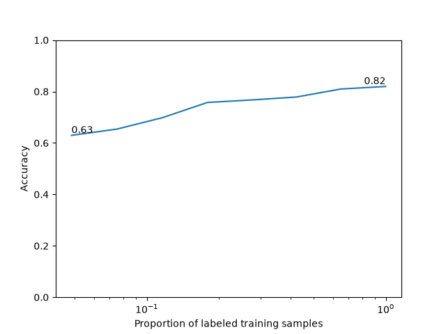

Note
Go to the end to download the full example code.
Self-Supervised Learning with I-JEPA on MedMNIST3D¶
This example demonstrates how to pretrain a 3D vision transformer with I-JEPA [1] on a MedMNIST3D dataset [2] using the nidl library. It will also show you how to evaluate the learned representations with a simple linear probe.
I-JEPA: the key idea behind I-JEPA is to learn representations by predicting masked-out image blocks from their surrounding context in the latent space . This is the main difference with Masked Autoencoders (MAE) which predicts the masked-out blocks in the pixel space.
3D adaptation: I-JEPA is designed to be flexible. Even if the original implementation only used 2d images, its extension to 3d volumes is straightforward. There are two key differences with the 2d case: the tokenization is performed with 3D patches, and the positional embeddings are 3D as well. As for the masking strategy, it follows the same random block subsampling strategy as in 2d.
In this tutorial, we will follow these steps:
Load a MedMNIST3D dataset.
Build a 3D vision transformer encoder.
Train an I-JEPA model, or optionally load pretrained weights from the Hugging Face Hub.
Evaluate the pretrained encoder on the downstream classification task with a logistic regression probe.
In this example we use OrganMNIST3D, one of the 3D datasets distributed by
MedMNIST. MedMNIST3D datasets are lightweight 3D medical image classification
benchmarks standardized to a common spatial size, which makes them convenient
for prototyping self-supervised pipelines.
Setup¶
This example requires medmnist in addition to nidl. If you want to load
pretrained weights from the Hugging Face Hub, you also need
huggingface_hub installed in your environment.
from __future__ import annotations
import os
from typing import Callable, Optional
import matplotlib.pyplot as plt
import medmnist
import numpy as np
import torch
from lightning_fabric import seed_everything
from medmnist import INFO
from sklearn.linear_model import LogisticRegression
from sklearn.metrics import accuracy_score
from torch.utils.data import DataLoader
from torchvision.transforms import Compose
from nidl.backbones.volume import VisionTransformer3D
from nidl.estimators.ssl import IJEPA
from nidl.transforms.volume.augmentation import RandomResizedCrop
from nidl.transforms.volume.preprocessing import ZNormalization
from nidl.utils.weights import Weights
We define some global parameters that will be used throughout the example.
Training a 3D I-JEPA model can take substantial time depending on your
hardware. By default, this example trains a lightweight configuration that is
suitable for a tutorial. If you later publish pretrained weights to the
Hugging Face Hub, set load_pretrained = True and fill the corresponding
repository information below.
Data-related parameters
# Directory where to download MedMNIST data
data_dir = "/tmp/medmnist"
# Directory where to cache optional pretrained weights
model_dir = "/tmp/nidl_example_ijepa_medmnist"
# MedMNIST3D dataset to use
dataset_name = "organmnist3d"
# Spatial size used by MedMNIST+ for 3D datasets
img_size = 64
# Whether to load a pretrained checkpoint from HF or train locally
load_pretrained = True
# Fill these two values once a checkpoint is published on HF
hf_repo_id = "neurospin/nidl_example_ijepa_medmnist"
hf_checkpoint = "nidl_example_ijepa_medmnist.pt"
Reproducibility and training configuration
# What accelerator to use: GPU if available, else CPU
accelerator = "gpu" if torch.cuda.is_available() else "cpu"
# Parameters for the data loaders. Reduce them if you run out of memory.
batch_size = 16
num_workers = 4
# Training configuration
max_epochs = 20
learning_rate = 3e-4
weight_decay = 5e-4
random_seed = 42
seed_everything(random_seed)
rd_generator = np.random.default_rng(seed=random_seed)
Data preparation¶
We first define a small MedMNIST3D dataset wrapper and the transforms used for self-supervised pretraining and downstream evaluation.
class MedMNIST3DDataset:
"""Simple wrapper around a MedMNIST3D split."""
def __init__(
self,
dataset_name: str,
root: str,
split: str,
transform: Optional[Callable] = None,
size: int = 64,
download: bool = True,
):
dataset_name = dataset_name.lower()
if dataset_name not in INFO:
raise ValueError(
f"Unknown MedMNIST dataset '{dataset_name}'. "
f"Available datasets include: {sorted(INFO.keys())}"
)
if "3d" not in dataset_name:
raise ValueError(
f"This example is written for MedMNIST3D datasets, got "
f"'{dataset_name}'."
)
info = INFO[dataset_name]
dataset_cls = getattr(medmnist, info["python_class"])
os.makedirs(root, exist_ok=True)
self.dataset = dataset_cls(
split=split,
root=root,
transform=transform,
download=download,
size=size,
as_rgb=False,
)
def __len__(self):
return len(self.dataset)
def __getitem__(self, index):
return self.dataset[index]
train_transform = Compose(
[
RandomResizedCrop(img_size, scale=(0.5, 1.0)),
ZNormalization(),
lambda x: torch.from_numpy(x).float(),
]
)
eval_transform = Compose(
[
ZNormalization(),
lambda x: torch.from_numpy(x).float(),
]
)
We create one dataset for self-supervised training, and labeled datasets for linear probing.
ssl_dataset = MedMNIST3DDataset(
dataset_name=dataset_name,
root=data_dir,
split="train",
transform=train_transform,
size=img_size,
)
train_xy_dataset = MedMNIST3DDataset(
dataset_name=dataset_name,
root=data_dir,
split="train",
transform=eval_transform,
size=img_size,
)
test_xy_dataset = MedMNIST3DDataset(
dataset_name=dataset_name,
root=data_dir,
split="test",
transform=eval_transform,
size=img_size,
)
0%| | 0.00/361M [00:00<?, ?B/s]
0%| | 32.8k/361M [00:00<52:46, 114kB/s]
0%| | 98.3k/361M [00:00<23:48, 253kB/s]
0%| | 164k/361M [00:00<18:40, 322kB/s]
0%| | 229k/361M [00:00<17:22, 347kB/s]
0%| | 295k/361M [00:00<16:09, 373kB/s]
0%| | 426k/361M [00:01<13:50, 435kB/s]
0%| | 492k/361M [00:01<15:03, 400kB/s]
0%| | 590k/361M [00:01<12:59, 463kB/s]
0%| | 655k/361M [00:01<13:09, 457kB/s]
0%| | 721k/361M [00:01<13:12, 455kB/s]
0%| | 852k/361M [00:01<10:30, 572kB/s]
0%| | 918k/361M [00:02<11:11, 537kB/s]
0%| | 983k/361M [00:02<11:49, 508kB/s]
0%| | 1.05M/361M [00:02<12:14, 490kB/s]
0%| | 1.11M/361M [00:02<13:12, 455kB/s]
0%| | 1.18M/361M [00:02<13:38, 440kB/s]
0%| | 1.25M/361M [00:02<13:37, 441kB/s]
0%| | 1.31M/361M [00:03<13:30, 444kB/s]
0%| | 1.38M/361M [00:03<13:26, 446kB/s]
0%| | 1.44M/361M [00:03<13:23, 448kB/s]
0%| | 1.57M/361M [00:03<10:32, 569kB/s]
0%| | 1.64M/361M [00:03<11:22, 528kB/s]
0%| | 1.70M/361M [00:03<11:57, 501kB/s]
0%| | 1.77M/361M [00:03<12:21, 485kB/s]
1%| | 1.84M/361M [00:04<13:03, 459kB/s]
1%| | 1.90M/361M [00:04<13:47, 435kB/s]
1%| | 1.97M/361M [00:04<13:57, 429kB/s]
1%| | 2.03M/361M [00:04<13:45, 436kB/s]
1%| | 2.13M/361M [00:04<11:59, 499kB/s]
1%| | 2.20M/361M [00:04<12:27, 481kB/s]
1%| | 2.33M/361M [00:05<10:18, 581kB/s]
1%| | 2.39M/361M [00:05<11:18, 529kB/s]
1%| | 2.46M/361M [00:05<11:47, 507kB/s]
1%| | 2.52M/361M [00:05<12:15, 488kB/s]
1%| | 2.62M/361M [00:05<12:08, 492kB/s]
1%| | 2.69M/361M [00:05<12:29, 479kB/s]
1%| | 2.75M/361M [00:05<12:43, 470kB/s]
1%| | 2.82M/361M [00:06<12:53, 464kB/s]
1%| | 2.88M/361M [00:06<13:00, 459kB/s]
1%| | 2.95M/361M [00:06<13:05, 456kB/s]
1%| | 3.01M/361M [00:06<13:08, 455kB/s]
1%| | 3.11M/361M [00:06<11:32, 517kB/s]
1%| | 3.24M/361M [00:06<09:40, 617kB/s]
1%| | 3.31M/361M [00:07<10:36, 563kB/s]
1%| | 3.38M/361M [00:07<11:25, 522kB/s]
1%| | 3.44M/361M [00:07<11:59, 498kB/s]
1%| | 3.51M/361M [00:07<12:22, 482kB/s]
1%| | 3.57M/361M [00:07<12:35, 474kB/s]
1%| | 3.67M/361M [00:07<11:33, 516kB/s]
1%| | 3.74M/361M [00:07<12:11, 489kB/s]
1%| | 3.80M/361M [00:08<12:50, 464kB/s]
1%| | 3.87M/361M [00:08<13:03, 456kB/s]
1%| | 3.93M/361M [00:08<13:27, 443kB/s]
1%| | 4.06M/361M [00:08<10:43, 555kB/s]
1%| | 4.13M/361M [00:08<11:25, 522kB/s]
1%| | 4.19M/361M [00:08<11:52, 501kB/s]
1%| | 4.26M/361M [00:09<12:25, 479kB/s]
1%| | 4.33M/361M [00:09<12:40, 470kB/s]
1%| | 4.39M/361M [00:09<12:50, 464kB/s]
1%| | 4.46M/361M [00:09<13:06, 454kB/s]
1%|▏ | 4.65M/361M [00:09<08:23, 708kB/s]
1%|▏ | 4.75M/361M [00:09<08:35, 691kB/s]
1%|▏ | 4.88M/361M [00:09<08:18, 715kB/s]
1%|▏ | 4.98M/361M [00:10<08:27, 703kB/s]
1%|▏ | 5.08M/361M [00:10<08:40, 685kB/s]
1%|▏ | 5.18M/361M [00:10<08:49, 673kB/s]
1%|▏ | 5.28M/361M [00:10<08:58, 662kB/s]
1%|▏ | 5.37M/361M [00:10<09:09, 648kB/s]
2%|▏ | 5.47M/361M [00:10<09:08, 649kB/s]
2%|▏ | 5.57M/361M [00:10<09:13, 642kB/s]
2%|▏ | 5.67M/361M [00:11<09:15, 640kB/s]
2%|▏ | 5.77M/361M [00:11<09:19, 635kB/s]
2%|▏ | 5.83M/361M [00:11<09:19, 636kB/s]
2%|▏ | 5.90M/361M [00:11<10:03, 589kB/s]
2%|▏ | 5.96M/361M [00:11<10:41, 554kB/s]
2%|▏ | 6.03M/361M [00:11<11:11, 529kB/s]
2%|▏ | 6.29M/361M [00:11<06:30, 910kB/s]
2%|▏ | 6.39M/361M [00:12<07:12, 820kB/s]
2%|▏ | 6.49M/361M [00:12<08:08, 727kB/s]
2%|▏ | 6.59M/361M [00:12<08:52, 666kB/s]
2%|▏ | 6.68M/361M [00:12<09:09, 645kB/s]
2%|▏ | 6.78M/361M [00:12<09:18, 636kB/s]
2%|▏ | 6.91M/361M [00:12<07:46, 760kB/s]
2%|▏ | 7.08M/361M [00:13<07:55, 746kB/s]
2%|▏ | 7.18M/361M [00:13<07:47, 758kB/s]
2%|▏ | 7.50M/361M [00:13<06:16, 941kB/s]
2%|▏ | 7.70M/361M [00:13<05:58, 988kB/s]
2%|▏ | 7.83M/361M [00:13<06:06, 964kB/s]
2%|▏ | 8.13M/361M [00:14<04:52, 1.21MB/s]
2%|▏ | 8.29M/361M [00:14<05:00, 1.17MB/s]
2%|▏ | 8.49M/361M [00:14<05:02, 1.17MB/s]
2%|▏ | 8.68M/361M [00:14<05:17, 1.11MB/s]
2%|▏ | 8.81M/361M [00:14<05:39, 1.04MB/s]
2%|▏ | 8.95M/361M [00:14<05:23, 1.09MB/s]
3%|▎ | 9.08M/361M [00:14<05:29, 1.07MB/s]
3%|▎ | 9.24M/361M [00:15<05:32, 1.06MB/s]
3%|▎ | 9.44M/361M [00:15<05:15, 1.12MB/s]
3%|▎ | 9.63M/361M [00:15<05:05, 1.15MB/s]
3%|▎ | 9.83M/361M [00:15<04:56, 1.19MB/s]
3%|▎ | 10.0M/361M [00:15<04:50, 1.21MB/s]
3%|▎ | 10.2M/361M [00:15<04:59, 1.17MB/s]
3%|▎ | 10.4M/361M [00:16<05:00, 1.17MB/s]
3%|▎ | 10.6M/361M [00:16<05:09, 1.13MB/s]
3%|▎ | 10.8M/361M [00:16<05:14, 1.12MB/s]
3%|▎ | 11.0M/361M [00:16<04:58, 1.17MB/s]
3%|▎ | 11.2M/361M [00:16<04:47, 1.22MB/s]
3%|▎ | 11.4M/361M [00:16<04:43, 1.24MB/s]
3%|▎ | 11.5M/361M [00:17<05:10, 1.13MB/s]
3%|▎ | 11.7M/361M [00:17<05:27, 1.07MB/s]
3%|▎ | 11.9M/361M [00:17<05:21, 1.09MB/s]
3%|▎ | 12.3M/361M [00:17<03:27, 1.68MB/s]
3%|▎ | 12.5M/361M [00:17<03:29, 1.66MB/s]
4%|▎ | 12.7M/361M [00:17<03:36, 1.61MB/s]
4%|▎ | 12.9M/361M [00:17<03:50, 1.51MB/s]
4%|▎ | 13.2M/361M [00:18<03:54, 1.49MB/s]
4%|▎ | 13.4M/361M [00:18<04:11, 1.39MB/s]
4%|▎ | 13.5M/361M [00:18<04:41, 1.24MB/s]
4%|▍ | 13.7M/361M [00:18<04:45, 1.22MB/s]
4%|▍ | 13.9M/361M [00:18<04:59, 1.16MB/s]
4%|▍ | 14.1M/361M [00:18<04:59, 1.16MB/s]
4%|▍ | 14.3M/361M [00:19<05:23, 1.07MB/s]
4%|▍ | 14.5M/361M [00:19<05:55, 977kB/s]
4%|▍ | 14.6M/361M [00:19<05:31, 1.05MB/s]
4%|▍ | 14.9M/361M [00:19<04:54, 1.18MB/s]
4%|▍ | 15.1M/361M [00:19<04:32, 1.27MB/s]
4%|▍ | 15.3M/361M [00:19<04:30, 1.28MB/s]
4%|▍ | 15.5M/361M [00:20<04:31, 1.27MB/s]
4%|▍ | 15.7M/361M [00:20<04:42, 1.23MB/s]
4%|▍ | 15.9M/361M [00:20<04:24, 1.31MB/s]
4%|▍ | 16.0M/361M [00:20<05:49, 990kB/s]
4%|▍ | 16.2M/361M [00:20<07:40, 751kB/s]
5%|▍ | 16.3M/361M [00:21<07:08, 805kB/s]
5%|▍ | 16.4M/361M [00:21<06:34, 875kB/s]
5%|▍ | 16.6M/361M [00:21<06:20, 905kB/s]
5%|▍ | 16.7M/361M [00:21<05:53, 975kB/s]
5%|▍ | 16.8M/361M [00:21<06:04, 946kB/s]
5%|▍ | 17.0M/361M [00:21<05:33, 1.03MB/s]
5%|▍ | 17.2M/361M [00:22<06:39, 863kB/s]
5%|▍ | 17.4M/361M [00:22<05:47, 992kB/s]
5%|▍ | 17.6M/361M [00:22<06:22, 899kB/s]
5%|▍ | 17.8M/361M [00:22<05:32, 1.04MB/s]
5%|▌ | 18.1M/361M [00:22<04:51, 1.18MB/s]
5%|▌ | 18.3M/361M [00:22<04:45, 1.20MB/s]
5%|▌ | 18.5M/361M [00:23<04:44, 1.21MB/s]
5%|▌ | 18.7M/361M [00:23<04:35, 1.24MB/s]
5%|▌ | 18.9M/361M [00:23<04:48, 1.19MB/s]
5%|▌ | 19.0M/361M [00:23<04:46, 1.20MB/s]
5%|▌ | 19.1M/361M [00:23<05:24, 1.06MB/s]
5%|▌ | 19.3M/361M [00:23<05:38, 1.01MB/s]
5%|▌ | 19.5M/361M [00:24<05:14, 1.09MB/s]
5%|▌ | 19.7M/361M [00:24<04:53, 1.16MB/s]
5%|▌ | 19.9M/361M [00:24<04:41, 1.21MB/s]
6%|▌ | 20.1M/361M [00:24<04:32, 1.25MB/s]
6%|▌ | 20.2M/361M [00:24<04:38, 1.23MB/s]
6%|▌ | 20.3M/361M [00:24<05:09, 1.10MB/s]
6%|▌ | 20.5M/361M [00:24<04:15, 1.33MB/s]
6%|▌ | 20.7M/361M [00:25<05:00, 1.13MB/s]
6%|▌ | 20.9M/361M [00:25<04:39, 1.22MB/s]
6%|▌ | 21.2M/361M [00:25<04:14, 1.34MB/s]
6%|▌ | 21.3M/361M [00:25<04:28, 1.26MB/s]
6%|▌ | 21.5M/361M [00:25<04:44, 1.19MB/s]
6%|▌ | 21.7M/361M [00:25<04:38, 1.22MB/s]
6%|▌ | 21.9M/361M [00:26<05:30, 1.03MB/s]
6%|▌ | 22.0M/361M [00:26<05:19, 1.06MB/s]
6%|▌ | 22.2M/361M [00:26<05:26, 1.04MB/s]
6%|▌ | 22.3M/361M [00:26<05:39, 1.00MB/s]
6%|▌ | 22.4M/361M [00:26<05:27, 1.04MB/s]
6%|▋ | 22.6M/361M [00:26<04:52, 1.16MB/s]
6%|▋ | 22.7M/361M [00:26<05:14, 1.08MB/s]
6%|▋ | 23.0M/361M [00:27<04:37, 1.22MB/s]
6%|▋ | 23.1M/361M [00:27<04:53, 1.15MB/s]
6%|▋ | 23.3M/361M [00:27<04:56, 1.14MB/s]
6%|▋ | 23.4M/361M [00:27<05:56, 949kB/s]
7%|▋ | 23.5M/361M [00:27<05:55, 951kB/s]
7%|▋ | 23.7M/361M [00:27<05:52, 959kB/s]
7%|▋ | 23.8M/361M [00:27<06:00, 938kB/s]
7%|▋ | 24.0M/361M [00:28<05:29, 1.02MB/s]
7%|▋ | 24.2M/361M [00:28<04:53, 1.15MB/s]
7%|▋ | 24.4M/361M [00:28<04:54, 1.15MB/s]
7%|▋ | 24.6M/361M [00:28<05:03, 1.11MB/s]
7%|▋ | 24.8M/361M [00:28<04:45, 1.18MB/s]
7%|▋ | 24.9M/361M [00:28<05:43, 979kB/s]
7%|▋ | 25.1M/361M [00:29<05:01, 1.11MB/s]
7%|▋ | 25.2M/361M [00:29<04:56, 1.13MB/s]
7%|▋ | 25.4M/361M [00:29<04:18, 1.30MB/s]
7%|▋ | 25.7M/361M [00:29<04:05, 1.37MB/s]
7%|▋ | 25.9M/361M [00:29<05:05, 1.10MB/s]
7%|▋ | 26.0M/361M [00:29<05:08, 1.09MB/s]
7%|▋ | 26.1M/361M [00:29<05:13, 1.07MB/s]
7%|▋ | 26.3M/361M [00:30<05:48, 963kB/s]
7%|▋ | 26.4M/361M [00:30<06:13, 896kB/s]
7%|▋ | 26.5M/361M [00:30<06:24, 872kB/s]
7%|▋ | 26.7M/361M [00:30<06:17, 888kB/s]
7%|▋ | 26.9M/361M [00:30<05:44, 971kB/s]
7%|▋ | 27.1M/361M [00:30<05:23, 1.03MB/s]
8%|▊ | 27.2M/361M [00:31<05:56, 938kB/s]
8%|▊ | 27.4M/361M [00:31<05:22, 1.04MB/s]
8%|▊ | 27.5M/361M [00:31<05:23, 1.03MB/s]
8%|▊ | 27.7M/361M [00:31<08:03, 690kB/s]
8%|▊ | 27.8M/361M [00:31<06:37, 839kB/s]
8%|▊ | 28.0M/361M [00:32<06:29, 856kB/s]
8%|▊ | 28.1M/361M [00:32<06:26, 863kB/s]
8%|▊ | 28.3M/361M [00:32<05:40, 977kB/s]
8%|▊ | 28.5M/361M [00:32<05:20, 1.04MB/s]
8%|▊ | 28.7M/361M [00:32<04:56, 1.12MB/s]
8%|▊ | 28.8M/361M [00:32<04:36, 1.21MB/s]
8%|▊ | 29.0M/361M [00:32<05:01, 1.10MB/s]
8%|▊ | 29.1M/361M [00:33<06:22, 870kB/s]
8%|▊ | 29.3M/361M [00:33<05:47, 955kB/s]
8%|▊ | 29.5M/361M [00:33<05:13, 1.06MB/s]
8%|▊ | 29.7M/361M [00:33<04:52, 1.13MB/s]
8%|▊ | 29.9M/361M [00:33<04:29, 1.23MB/s]
8%|▊ | 30.0M/361M [00:33<04:55, 1.12MB/s]
8%|▊ | 30.1M/361M [00:34<05:11, 1.06MB/s]
8%|▊ | 30.4M/361M [00:34<05:21, 1.03MB/s]
8%|▊ | 30.5M/361M [00:34<05:37, 979kB/s]
9%|▊ | 30.8M/361M [00:34<04:14, 1.30MB/s]
9%|▊ | 30.9M/361M [00:34<04:47, 1.15MB/s]
9%|▊ | 31.1M/361M [00:34<04:58, 1.11MB/s]
9%|▊ | 31.2M/361M [00:34<05:19, 1.03MB/s]
9%|▊ | 31.4M/361M [00:35<05:01, 1.10MB/s]
9%|▊ | 31.6M/361M [00:35<05:13, 1.05MB/s]
9%|▉ | 31.8M/361M [00:35<05:09, 1.06MB/s]
9%|▉ | 31.9M/361M [00:35<05:24, 1.02MB/s]
9%|▉ | 32.0M/361M [00:35<06:13, 881kB/s]
9%|▉ | 32.1M/361M [00:35<06:09, 892kB/s]
9%|▉ | 32.4M/361M [00:36<05:00, 1.09MB/s]
9%|▉ | 32.5M/361M [00:36<04:32, 1.21MB/s]
9%|▉ | 32.8M/361M [00:36<04:24, 1.24MB/s]
9%|▉ | 32.9M/361M [00:36<04:06, 1.33MB/s]
9%|▉ | 33.1M/361M [00:36<04:26, 1.23MB/s]
9%|▉ | 33.2M/361M [00:36<04:48, 1.14MB/s]
9%|▉ | 33.4M/361M [00:37<05:42, 958kB/s]
9%|▉ | 33.5M/361M [00:37<05:46, 947kB/s]
9%|▉ | 33.7M/361M [00:37<05:18, 1.03MB/s]
9%|▉ | 34.0M/361M [00:37<04:41, 1.16MB/s]
9%|▉ | 34.2M/361M [00:37<04:33, 1.20MB/s]
10%|▉ | 34.4M/361M [00:37<04:34, 1.19MB/s]
10%|▉ | 34.6M/361M [00:38<04:36, 1.18MB/s]
10%|▉ | 34.8M/361M [00:38<04:35, 1.19MB/s]
10%|▉ | 34.9M/361M [00:38<05:47, 940kB/s]
10%|▉ | 35.0M/361M [00:38<05:36, 971kB/s]
10%|▉ | 35.2M/361M [00:38<05:26, 1.00MB/s]
10%|▉ | 35.3M/361M [00:38<05:29, 990kB/s]
10%|▉ | 35.4M/361M [00:38<05:34, 975kB/s]
10%|▉ | 35.7M/361M [00:39<04:47, 1.13MB/s]
10%|▉ | 35.9M/361M [00:39<04:52, 1.11MB/s]
10%|▉ | 36.1M/361M [00:39<05:26, 996kB/s]
10%|█ | 36.2M/361M [00:39<06:18, 858kB/s]
10%|█ | 36.3M/361M [00:39<06:31, 831kB/s]
10%|█ | 36.5M/361M [00:40<06:00, 900kB/s]
10%|█ | 36.7M/361M [00:40<05:35, 968kB/s]
10%|█ | 36.9M/361M [00:40<05:06, 1.06MB/s]
10%|█ | 37.1M/361M [00:40<05:06, 1.06MB/s]
10%|█ | 37.2M/361M [00:40<05:23, 1.00MB/s]
10%|█ | 37.4M/361M [00:40<05:11, 1.04MB/s]
10%|█ | 37.6M/361M [00:41<05:12, 1.03MB/s]
10%|█ | 37.8M/361M [00:41<05:01, 1.07MB/s]
11%|█ | 38.0M/361M [00:41<04:43, 1.14MB/s]
11%|█ | 38.2M/361M [00:41<04:31, 1.19MB/s]
11%|█ | 38.4M/361M [00:41<04:28, 1.20MB/s]
11%|█ | 38.6M/361M [00:41<04:48, 1.12MB/s]
11%|█ | 38.7M/361M [00:42<04:48, 1.12MB/s]
11%|█ | 38.9M/361M [00:42<04:41, 1.15MB/s]
11%|█ | 39.0M/361M [00:42<05:12, 1.03MB/s]
11%|█ | 39.1M/361M [00:42<05:36, 958kB/s]
11%|█ | 39.2M/361M [00:42<05:59, 896kB/s]
11%|█ | 39.4M/361M [00:42<05:05, 1.05MB/s]
11%|█ | 39.5M/361M [00:42<05:03, 1.06MB/s]
11%|█ | 39.6M/361M [00:43<05:38, 952kB/s]
11%|█ | 39.8M/361M [00:43<05:52, 911kB/s]
11%|█ | 39.9M/361M [00:43<05:33, 965kB/s]
11%|█ | 40.0M/361M [00:43<05:34, 961kB/s]
11%|█ | 40.2M/361M [00:43<06:11, 866kB/s]
11%|█ | 40.3M/361M [00:43<06:21, 843kB/s]
11%|█ | 40.4M/361M [00:43<06:12, 861kB/s]
11%|█ | 40.6M/361M [00:44<05:25, 987kB/s]
11%|█▏ | 40.9M/361M [00:44<04:42, 1.13MB/s]
11%|█▏ | 41.1M/361M [00:44<04:39, 1.15MB/s]
11%|█▏ | 41.2M/361M [00:44<04:40, 1.14MB/s]
11%|█▏ | 41.4M/361M [00:44<05:18, 1.01MB/s]
11%|█▏ | 41.5M/361M [00:44<05:23, 988kB/s]
12%|█▏ | 41.6M/361M [00:45<06:54, 771kB/s]
12%|█▏ | 41.8M/361M [00:45<05:45, 924kB/s]
12%|█▏ | 41.9M/361M [00:45<05:39, 940kB/s]
12%|█▏ | 42.1M/361M [00:45<05:43, 929kB/s]
12%|█▏ | 42.2M/361M [00:45<05:48, 915kB/s]
12%|█▏ | 42.4M/361M [00:45<05:16, 1.01MB/s]
12%|█▏ | 42.5M/361M [00:46<06:06, 870kB/s]
12%|█▏ | 42.6M/361M [00:46<06:44, 789kB/s]
12%|█▏ | 42.8M/361M [00:46<06:26, 824kB/s]
12%|█▏ | 42.9M/361M [00:46<06:49, 778kB/s]
12%|█▏ | 43.0M/361M [00:46<07:13, 734kB/s]
12%|█▏ | 43.1M/361M [00:46<07:17, 728kB/s]
12%|█▏ | 43.2M/361M [00:47<06:43, 789kB/s]
12%|█▏ | 43.3M/361M [00:47<06:47, 780kB/s]
12%|█▏ | 43.4M/361M [00:47<06:32, 810kB/s]
12%|█▏ | 43.5M/361M [00:47<05:44, 923kB/s]
12%|█▏ | 43.6M/361M [00:47<05:52, 902kB/s]
12%|█▏ | 43.8M/361M [00:47<05:58, 885kB/s]
12%|█▏ | 43.9M/361M [00:47<06:54, 766kB/s]
12%|█▏ | 44.0M/361M [00:48<08:38, 612kB/s]
12%|█▏ | 44.1M/361M [00:48<07:10, 737kB/s]
12%|█▏ | 44.2M/361M [00:48<06:13, 849kB/s]
12%|█▏ | 44.3M/361M [00:48<06:31, 810kB/s]
12%|█▏ | 44.5M/361M [00:48<05:58, 884kB/s]
12%|█▏ | 44.7M/361M [00:48<05:17, 997kB/s]
12%|█▏ | 44.8M/361M [00:48<05:31, 956kB/s]
12%|█▏ | 45.0M/361M [00:49<05:00, 1.05MB/s]
12%|█▏ | 45.2M/361M [00:49<06:00, 877kB/s]
13%|█▎ | 45.3M/361M [00:49<07:25, 710kB/s]
13%|█▎ | 45.4M/361M [00:49<06:36, 796kB/s]
13%|█▎ | 45.6M/361M [00:49<06:03, 870kB/s]
13%|█▎ | 45.8M/361M [00:50<05:16, 997kB/s]
13%|█▎ | 46.0M/361M [00:50<05:12, 1.01MB/s]
13%|█▎ | 46.2M/361M [00:50<04:43, 1.11MB/s]
13%|█▎ | 46.3M/361M [00:50<06:34, 799kB/s]
13%|█▎ | 46.4M/361M [00:50<08:28, 619kB/s]
13%|█▎ | 46.5M/361M [00:51<09:58, 526kB/s]
13%|█▎ | 46.6M/361M [00:51<09:54, 530kB/s]
13%|█▎ | 46.7M/361M [00:51<09:10, 572kB/s]
13%|█▎ | 46.8M/361M [00:51<07:24, 708kB/s]
13%|█▎ | 46.9M/361M [00:51<07:55, 662kB/s]
13%|█▎ | 47.1M/361M [00:51<06:10, 847kB/s]
13%|█▎ | 47.2M/361M [00:51<06:22, 822kB/s]
13%|█▎ | 47.3M/361M [00:52<05:58, 877kB/s]
13%|█▎ | 47.4M/361M [00:52<06:23, 819kB/s]
13%|█▎ | 47.5M/361M [00:52<07:18, 716kB/s]
13%|█▎ | 47.6M/361M [00:52<06:34, 795kB/s]
13%|█▎ | 47.7M/361M [00:52<06:30, 804kB/s]
13%|█▎ | 47.8M/361M [00:52<07:10, 728kB/s]
13%|█▎ | 48.0M/361M [00:52<06:10, 847kB/s]
13%|█▎ | 48.1M/361M [00:53<07:29, 697kB/s]
13%|█▎ | 48.2M/361M [00:53<08:21, 625kB/s]
13%|█▎ | 48.3M/361M [00:53<07:57, 655kB/s]
13%|█▎ | 48.4M/361M [00:53<09:07, 572kB/s]
13%|█▎ | 48.6M/361M [00:53<07:47, 670kB/s]
13%|█▎ | 48.7M/361M [00:54<10:45, 485kB/s]
14%|█▎ | 48.8M/361M [00:54<07:59, 652kB/s]
14%|█▎ | 48.9M/361M [00:54<08:27, 616kB/s]
14%|█▎ | 49.1M/361M [00:54<07:32, 691kB/s]
14%|█▎ | 49.2M/361M [00:54<07:04, 735kB/s]
14%|█▎ | 49.3M/361M [00:55<06:47, 766kB/s]
14%|█▎ | 49.4M/361M [00:55<07:13, 720kB/s]
14%|█▎ | 49.5M/361M [00:55<06:20, 819kB/s]
14%|█▎ | 49.6M/361M [00:55<06:47, 766kB/s]
14%|█▍ | 49.7M/361M [00:55<08:11, 635kB/s]
14%|█▍ | 49.8M/361M [00:55<07:29, 693kB/s]
14%|█▍ | 50.0M/361M [00:55<06:39, 781kB/s]
14%|█▍ | 50.1M/361M [00:56<09:34, 542kB/s]
14%|█▍ | 50.3M/361M [00:56<07:29, 692kB/s]
14%|█▍ | 50.5M/361M [00:56<06:36, 785kB/s]
14%|█▍ | 50.7M/361M [00:56<06:07, 846kB/s]
14%|█▍ | 50.8M/361M [00:57<06:10, 839kB/s]
14%|█▍ | 50.9M/361M [00:57<05:43, 904kB/s]
14%|█▍ | 51.0M/361M [00:57<05:59, 864kB/s]
14%|█▍ | 51.1M/361M [00:57<05:49, 887kB/s]
14%|█▍ | 51.2M/361M [00:57<06:54, 749kB/s]
14%|█▍ | 51.3M/361M [00:57<06:39, 776kB/s]
14%|█▍ | 51.4M/361M [00:57<08:28, 610kB/s]
14%|█▍ | 51.5M/361M [00:58<08:19, 620kB/s]
14%|█▍ | 51.6M/361M [00:58<07:25, 695kB/s]
14%|█▍ | 51.8M/361M [00:58<05:57, 866kB/s]
14%|█▍ | 52.0M/361M [00:58<05:18, 971kB/s]
14%|█▍ | 52.2M/361M [00:58<06:01, 856kB/s]
14%|█▍ | 52.3M/361M [00:58<05:38, 914kB/s]
14%|█▍ | 52.4M/361M [00:59<07:54, 651kB/s]
15%|█▍ | 52.6M/361M [00:59<07:07, 722kB/s]
15%|█▍ | 52.7M/361M [00:59<09:33, 538kB/s]
15%|█▍ | 52.8M/361M [00:59<07:19, 702kB/s]
15%|█▍ | 52.9M/361M [00:59<06:52, 747kB/s]
15%|█▍ | 53.1M/361M [01:00<06:34, 782kB/s]
15%|█▍ | 53.2M/361M [01:00<05:31, 928kB/s]
15%|█▍ | 53.4M/361M [01:00<05:02, 1.02MB/s]
15%|█▍ | 53.6M/361M [01:00<05:01, 1.02MB/s]
15%|█▍ | 53.8M/361M [01:00<05:35, 916kB/s]
15%|█▍ | 53.9M/361M [01:00<05:53, 869kB/s]
15%|█▍ | 54.0M/361M [01:01<06:31, 786kB/s]
15%|█▍ | 54.1M/361M [01:01<07:16, 705kB/s]
15%|█▍ | 54.2M/361M [01:01<06:47, 754kB/s]
15%|█▌ | 54.3M/361M [01:01<06:46, 756kB/s]
15%|█▌ | 54.5M/361M [01:01<05:46, 885kB/s]
15%|█▌ | 54.6M/361M [01:01<05:46, 886kB/s]
15%|█▌ | 54.8M/361M [01:01<05:14, 975kB/s]
15%|█▌ | 55.0M/361M [01:02<04:48, 1.06MB/s]
15%|█▌ | 55.1M/361M [01:02<05:16, 968kB/s]
15%|█▌ | 55.2M/361M [01:02<06:21, 804kB/s]
15%|█▌ | 55.3M/361M [01:02<07:03, 723kB/s]
15%|█▌ | 55.4M/361M [01:02<07:19, 696kB/s]
15%|█▌ | 55.5M/361M [01:03<07:49, 651kB/s]
15%|█▌ | 55.7M/361M [01:03<06:41, 762kB/s]
15%|█▌ | 55.8M/361M [01:03<06:26, 790kB/s]
15%|█▌ | 56.0M/361M [01:03<06:20, 802kB/s]
16%|█▌ | 56.1M/361M [01:03<05:56, 857kB/s]
16%|█▌ | 56.2M/361M [01:03<07:10, 709kB/s]
16%|█▌ | 56.3M/361M [01:04<07:29, 679kB/s]
16%|█▌ | 56.4M/361M [01:04<09:22, 543kB/s]
16%|█▌ | 56.6M/361M [01:04<08:06, 627kB/s]
16%|█▌ | 56.7M/361M [01:04<07:28, 680kB/s]
16%|█▌ | 56.9M/361M [01:04<06:22, 797kB/s]
16%|█▌ | 57.0M/361M [01:04<05:46, 879kB/s]
16%|█▌ | 57.1M/361M [01:05<05:40, 893kB/s]
16%|█▌ | 57.2M/361M [01:05<07:12, 704kB/s]
16%|█▌ | 57.3M/361M [01:05<06:59, 725kB/s]
16%|█▌ | 57.4M/361M [01:05<06:50, 741kB/s]
16%|█▌ | 57.6M/361M [01:05<06:29, 780kB/s]
16%|█▌ | 57.7M/361M [01:05<05:41, 889kB/s]
16%|█▌ | 57.8M/361M [01:06<07:18, 692kB/s]
16%|█▌ | 57.9M/361M [01:06<06:45, 748kB/s]
16%|█▌ | 58.1M/361M [01:06<05:51, 863kB/s]
16%|█▌ | 58.3M/361M [01:06<05:10, 976kB/s]
16%|█▌ | 58.5M/361M [01:06<04:45, 1.06MB/s]
16%|█▌ | 58.7M/361M [01:06<04:46, 1.06MB/s]
16%|█▋ | 58.9M/361M [01:07<05:06, 989kB/s]
16%|█▋ | 59.0M/361M [01:07<05:26, 927kB/s]
16%|█▋ | 59.1M/361M [01:07<05:51, 859kB/s]
16%|█▋ | 59.3M/361M [01:07<05:12, 966kB/s]
16%|█▋ | 59.4M/361M [01:07<04:53, 1.03MB/s]
16%|█▋ | 59.6M/361M [01:07<05:14, 960kB/s]
17%|█▋ | 59.8M/361M [01:07<05:11, 969kB/s]
17%|█▋ | 59.9M/361M [01:08<06:00, 836kB/s]
17%|█▋ | 60.0M/361M [01:08<06:44, 745kB/s]
17%|█▋ | 60.1M/361M [01:08<07:41, 653kB/s]
17%|█▋ | 60.2M/361M [01:08<08:26, 595kB/s]
17%|█▋ | 60.3M/361M [01:08<08:04, 622kB/s]
17%|█▋ | 60.4M/361M [01:09<06:48, 737kB/s]
17%|█▋ | 60.5M/361M [01:09<06:52, 730kB/s]
17%|█▋ | 60.6M/361M [01:09<06:23, 785kB/s]
17%|█▋ | 60.7M/361M [01:09<06:02, 830kB/s]
17%|█▋ | 60.8M/361M [01:09<06:15, 801kB/s]
17%|█▋ | 60.9M/361M [01:09<06:57, 720kB/s]
17%|█▋ | 61.0M/361M [01:09<07:02, 710kB/s]
17%|█▋ | 61.1M/361M [01:09<07:03, 709kB/s]
17%|█▋ | 61.2M/361M [01:10<09:07, 549kB/s]
17%|█▋ | 61.3M/361M [01:10<07:26, 673kB/s]
17%|█▋ | 61.5M/361M [01:10<06:17, 795kB/s]
17%|█▋ | 61.6M/361M [01:10<06:18, 793kB/s]
17%|█▋ | 61.7M/361M [01:10<06:24, 780kB/s]
17%|█▋ | 61.8M/361M [01:10<05:49, 857kB/s]
17%|█▋ | 62.0M/361M [01:11<05:15, 951kB/s]
17%|█▋ | 62.1M/361M [01:11<05:10, 963kB/s]
17%|█▋ | 62.2M/361M [01:11<06:48, 733kB/s]
17%|█▋ | 62.3M/361M [01:11<08:13, 607kB/s]
17%|█▋ | 62.4M/361M [01:11<09:52, 505kB/s]
17%|█▋ | 62.6M/361M [01:12<07:27, 668kB/s]
17%|█▋ | 62.7M/361M [01:12<07:14, 687kB/s]
17%|█▋ | 62.8M/361M [01:12<06:15, 795kB/s]
17%|█▋ | 63.0M/361M [01:12<05:18, 936kB/s]
17%|█▋ | 63.2M/361M [01:12<05:46, 861kB/s]
18%|█▊ | 63.4M/361M [01:12<05:22, 925kB/s]
18%|█▊ | 63.5M/361M [01:13<05:15, 945kB/s]
18%|█▊ | 63.7M/361M [01:13<06:24, 774kB/s]
18%|█▊ | 63.8M/361M [01:13<06:16, 791kB/s]
18%|█▊ | 63.9M/361M [01:13<08:36, 576kB/s]
18%|█▊ | 64.0M/361M [01:13<08:07, 610kB/s]
18%|█▊ | 64.1M/361M [01:13<06:19, 784kB/s]
18%|█▊ | 64.2M/361M [01:14<06:41, 740kB/s]
18%|█▊ | 64.3M/361M [01:14<07:21, 672kB/s]
18%|█▊ | 64.5M/361M [01:14<06:23, 774kB/s]
18%|█▊ | 64.6M/361M [01:14<06:09, 804kB/s]
18%|█▊ | 64.7M/361M [01:14<07:11, 688kB/s]
18%|█▊ | 64.8M/361M [01:14<07:24, 667kB/s]
18%|█▊ | 64.9M/361M [01:15<11:21, 435kB/s]
18%|█▊ | 65.0M/361M [01:15<09:40, 511kB/s]
18%|█▊ | 65.1M/361M [01:15<08:45, 564kB/s]
18%|█▊ | 65.2M/361M [01:15<07:57, 620kB/s]
18%|█▊ | 65.3M/361M [01:15<08:51, 558kB/s]
18%|█▊ | 65.3M/361M [01:16<09:09, 539kB/s]
18%|█▊ | 65.4M/361M [01:16<10:39, 463kB/s]
18%|█▊ | 65.5M/361M [01:16<09:29, 520kB/s]
18%|█▊ | 65.6M/361M [01:16<11:16, 438kB/s]
18%|█▊ | 65.7M/361M [01:16<12:47, 386kB/s]
18%|█▊ | 65.7M/361M [01:17<13:30, 365kB/s]
18%|█▊ | 65.9M/361M [01:17<08:41, 566kB/s]
18%|█▊ | 66.0M/361M [01:17<08:38, 570kB/s]
18%|█▊ | 66.1M/361M [01:17<07:56, 620kB/s]
18%|█▊ | 66.2M/361M [01:17<06:29, 758kB/s]
18%|█▊ | 66.3M/361M [01:17<06:15, 785kB/s]
18%|█▊ | 66.5M/361M [01:18<06:09, 798kB/s]
18%|█▊ | 66.7M/361M [01:18<05:21, 917kB/s]
18%|█▊ | 66.7M/361M [01:18<06:07, 801kB/s]
18%|█▊ | 66.8M/361M [01:18<06:14, 786kB/s]
19%|█▊ | 66.9M/361M [01:18<06:13, 788kB/s]
19%|█▊ | 67.0M/361M [01:18<09:20, 525kB/s]
19%|█▊ | 67.1M/361M [01:19<08:53, 551kB/s]
19%|█▊ | 67.3M/361M [01:19<07:18, 671kB/s]
19%|█▊ | 67.4M/361M [01:19<07:24, 661kB/s]
19%|█▊ | 67.5M/361M [01:19<08:10, 599kB/s]
19%|█▊ | 67.6M/361M [01:19<08:01, 611kB/s]
19%|█▊ | 67.7M/361M [01:19<08:01, 610kB/s]
19%|█▊ | 67.8M/361M [01:20<08:20, 587kB/s]
19%|█▉ | 67.8M/361M [01:20<08:31, 574kB/s]
19%|█▉ | 67.9M/361M [01:20<13:08, 372kB/s]
19%|█▉ | 68.0M/361M [01:20<11:50, 413kB/s]
19%|█▉ | 68.1M/361M [01:20<11:07, 439kB/s]
19%|█▉ | 68.1M/361M [01:20<10:26, 468kB/s]
19%|█▉ | 68.2M/361M [01:21<10:26, 468kB/s]
19%|█▉ | 68.3M/361M [01:21<08:53, 549kB/s]
19%|█▉ | 68.4M/361M [01:21<07:43, 633kB/s]
19%|█▉ | 68.5M/361M [01:21<09:06, 536kB/s]
19%|█▉ | 68.6M/361M [01:21<10:03, 485kB/s]
19%|█▉ | 68.7M/361M [01:21<07:34, 644kB/s]
19%|█▉ | 68.8M/361M [01:22<11:07, 439kB/s]
19%|█▉ | 69.0M/361M [01:22<09:11, 530kB/s]
19%|█▉ | 69.1M/361M [01:22<09:48, 497kB/s]
19%|█▉ | 69.2M/361M [01:22<08:33, 569kB/s]
19%|█▉ | 69.3M/361M [01:23<08:21, 583kB/s]
19%|█▉ | 69.4M/361M [01:23<08:20, 584kB/s]
19%|█▉ | 69.5M/361M [01:23<07:23, 659kB/s]
19%|█▉ | 69.6M/361M [01:23<07:57, 611kB/s]
19%|█▉ | 69.7M/361M [01:23<07:04, 687kB/s]
19%|█▉ | 69.8M/361M [01:23<06:35, 737kB/s]
19%|█▉ | 69.9M/361M [01:23<06:51, 709kB/s]
19%|█▉ | 70.0M/361M [01:24<07:33, 642kB/s]
19%|█▉ | 70.1M/361M [01:24<07:13, 672kB/s]
19%|█▉ | 70.2M/361M [01:24<07:38, 635kB/s]
19%|█▉ | 70.4M/361M [01:24<06:26, 752kB/s]
20%|█▉ | 70.5M/361M [01:24<05:49, 833kB/s]
20%|█▉ | 70.6M/361M [01:24<06:40, 726kB/s]
20%|█▉ | 70.7M/361M [01:25<07:32, 643kB/s]
20%|█▉ | 70.8M/361M [01:25<07:59, 606kB/s]
20%|█▉ | 70.9M/361M [01:25<08:18, 583kB/s]
20%|█▉ | 71.0M/361M [01:25<08:42, 556kB/s]
20%|█▉ | 71.0M/361M [01:25<10:09, 477kB/s]
20%|█▉ | 71.1M/361M [01:25<09:30, 509kB/s]
20%|█▉ | 71.3M/361M [01:26<07:08, 677kB/s]
20%|█▉ | 71.4M/361M [01:26<06:31, 740kB/s]
20%|█▉ | 71.6M/361M [01:26<05:36, 861kB/s]
20%|█▉ | 71.8M/361M [01:26<05:07, 942kB/s]
20%|█▉ | 72.0M/361M [01:26<05:24, 892kB/s]
20%|█▉ | 72.2M/361M [01:26<04:58, 970kB/s]
20%|██ | 72.4M/361M [01:27<06:41, 720kB/s]
20%|██ | 72.5M/361M [01:27<06:01, 799kB/s]
20%|██ | 72.6M/361M [01:27<05:27, 883kB/s]
20%|██ | 72.7M/361M [01:27<05:13, 921kB/s]
20%|██ | 72.9M/361M [01:27<05:19, 903kB/s]
20%|██ | 73.0M/361M [01:27<05:16, 912kB/s]
20%|██ | 73.1M/361M [01:28<06:12, 775kB/s]
20%|██ | 73.2M/361M [01:28<06:10, 777kB/s]
20%|██ | 73.3M/361M [01:28<06:42, 716kB/s]
20%|██ | 73.4M/361M [01:28<07:02, 682kB/s]
20%|██ | 73.5M/361M [01:28<07:16, 660kB/s]
20%|██ | 73.6M/361M [01:29<12:24, 387kB/s]
20%|██ | 73.7M/361M [01:29<14:29, 331kB/s]
20%|██ | 73.8M/361M [01:29<13:57, 344kB/s]
20%|██ | 73.9M/361M [01:29<11:19, 423kB/s]
20%|██ | 73.9M/361M [01:30<10:34, 453kB/s]
20%|██ | 74.0M/361M [01:30<09:19, 513kB/s]
21%|██ | 74.2M/361M [01:30<07:18, 655kB/s]
21%|██ | 74.3M/361M [01:30<06:38, 721kB/s]
21%|██ | 74.5M/361M [01:30<05:29, 872kB/s]
21%|██ | 74.6M/361M [01:30<05:41, 841kB/s]
21%|██ | 74.7M/361M [01:30<06:26, 741kB/s]
21%|██ | 74.8M/361M [01:31<07:21, 649kB/s]
21%|██ | 75.0M/361M [01:31<06:33, 728kB/s]
21%|██ | 75.1M/361M [01:31<06:11, 770kB/s]
21%|██ | 75.2M/361M [01:31<06:49, 699kB/s]
21%|██ | 75.3M/361M [01:31<07:12, 661kB/s]
21%|██ | 75.4M/361M [01:32<06:38, 717kB/s]
21%|██ | 75.5M/361M [01:32<06:53, 691kB/s]
21%|██ | 75.6M/361M [01:32<06:21, 749kB/s]
21%|██ | 75.7M/361M [01:32<08:05, 589kB/s]
21%|██ | 75.8M/361M [01:32<11:09, 426kB/s]
21%|██ | 76.0M/361M [01:33<09:04, 524kB/s]
21%|██ | 76.2M/361M [01:33<06:50, 694kB/s]
21%|██ | 76.3M/361M [01:33<06:11, 768kB/s]
21%|██ | 76.5M/361M [01:33<06:23, 742kB/s]
21%|██ | 76.6M/361M [01:33<05:55, 802kB/s]
21%|██ | 76.8M/361M [01:33<05:47, 820kB/s]
21%|██▏ | 76.9M/361M [01:34<06:48, 696kB/s]
21%|██▏ | 77.0M/361M [01:34<06:41, 709kB/s]
21%|██▏ | 77.1M/361M [01:34<08:51, 535kB/s]
21%|██▏ | 77.3M/361M [01:34<07:36, 623kB/s]
21%|██▏ | 77.4M/361M [01:35<07:21, 644kB/s]
21%|██▏ | 77.5M/361M [01:35<06:46, 698kB/s]
21%|██▏ | 77.7M/361M [01:35<06:22, 742kB/s]
22%|██▏ | 77.8M/361M [01:35<05:39, 835kB/s]
22%|██▏ | 77.9M/361M [01:35<05:42, 829kB/s]
22%|██▏ | 78.0M/361M [01:35<05:44, 822kB/s]
22%|██▏ | 78.2M/361M [01:35<05:26, 867kB/s]
22%|██▏ | 78.2M/361M [01:36<09:21, 504kB/s]
22%|██▏ | 78.4M/361M [01:36<07:46, 607kB/s]
22%|██▏ | 78.5M/361M [01:36<07:13, 652kB/s]
22%|██▏ | 78.6M/361M [01:36<07:06, 664kB/s]
22%|██▏ | 78.7M/361M [01:36<06:29, 726kB/s]
22%|██▏ | 78.9M/361M [01:37<06:12, 759kB/s]
22%|██▏ | 79.0M/361M [01:37<06:07, 769kB/s]
22%|██▏ | 79.1M/361M [01:37<07:23, 636kB/s]
22%|██▏ | 79.2M/361M [01:37<07:35, 620kB/s]
22%|██▏ | 79.3M/361M [01:37<09:36, 490kB/s]
22%|██▏ | 79.5M/361M [01:38<07:55, 593kB/s]
22%|██▏ | 79.6M/361M [01:38<07:12, 652kB/s]
22%|██▏ | 79.7M/361M [01:38<06:35, 712kB/s]
22%|██▏ | 79.9M/361M [01:38<06:09, 763kB/s]
22%|██▏ | 80.0M/361M [01:38<07:10, 654kB/s]
22%|██▏ | 80.1M/361M [01:38<06:36, 710kB/s]
22%|██▏ | 80.2M/361M [01:39<09:58, 470kB/s]
22%|██▏ | 80.2M/361M [01:39<14:17, 328kB/s]
22%|██▏ | 80.3M/361M [01:39<10:30, 446kB/s]
22%|██▏ | 80.4M/361M [01:40<10:48, 433kB/s]
22%|██▏ | 80.5M/361M [01:40<09:09, 512kB/s]
22%|██▏ | 80.6M/361M [01:40<07:58, 587kB/s]
22%|██▏ | 80.8M/361M [01:40<07:12, 648kB/s]
22%|██▏ | 80.9M/361M [01:40<06:29, 721kB/s]
22%|██▏ | 81.0M/361M [01:40<06:06, 764kB/s]
22%|██▏ | 81.2M/361M [01:40<05:31, 845kB/s]
22%|██▏ | 81.3M/361M [01:40<05:31, 846kB/s]
23%|██▎ | 81.4M/361M [01:41<05:40, 822kB/s]
23%|██▎ | 81.5M/361M [01:41<05:54, 789kB/s]
23%|██▎ | 81.6M/361M [01:41<06:13, 749kB/s]
23%|██▎ | 81.7M/361M [01:41<08:36, 542kB/s]
23%|██▎ | 81.8M/361M [01:42<11:38, 401kB/s]
23%|██▎ | 81.9M/361M [01:42<09:01, 516kB/s]
23%|██▎ | 82.0M/361M [01:42<08:53, 524kB/s]
23%|██▎ | 82.1M/361M [01:42<07:12, 646kB/s]
23%|██▎ | 82.2M/361M [01:42<06:20, 734kB/s]
23%|██▎ | 82.3M/361M [01:42<06:57, 669kB/s]
23%|██▎ | 82.4M/361M [01:42<06:07, 760kB/s]
23%|██▎ | 82.5M/361M [01:43<06:36, 704kB/s]
23%|██▎ | 82.6M/361M [01:43<06:29, 716kB/s]
23%|██▎ | 82.7M/361M [01:43<10:27, 444kB/s]
23%|██▎ | 82.8M/361M [01:43<08:58, 517kB/s]
23%|██▎ | 82.9M/361M [01:43<09:16, 500kB/s]
23%|██▎ | 83.0M/361M [01:44<08:08, 570kB/s]
23%|██▎ | 83.2M/361M [01:44<07:30, 618kB/s]
23%|██▎ | 83.4M/361M [01:44<07:17, 636kB/s]
23%|██▎ | 83.5M/361M [01:44<06:55, 668kB/s]
23%|██▎ | 83.6M/361M [01:45<07:54, 585kB/s]
23%|██▎ | 83.7M/361M [01:45<11:00, 421kB/s]
23%|██▎ | 83.8M/361M [01:45<10:43, 431kB/s]
23%|██▎ | 83.8M/361M [01:45<10:14, 452kB/s]
23%|██▎ | 84.0M/361M [01:45<08:27, 547kB/s]
23%|██▎ | 84.1M/361M [01:45<06:49, 677kB/s]
23%|██▎ | 84.2M/361M [01:46<05:46, 799kB/s]
23%|██▎ | 84.4M/361M [01:46<05:46, 799kB/s]
23%|██▎ | 84.5M/361M [01:46<05:50, 790kB/s]
23%|██▎ | 84.6M/361M [01:46<05:14, 881kB/s]
23%|██▎ | 84.7M/361M [01:46<05:50, 790kB/s]
23%|██▎ | 84.8M/361M [01:47<09:16, 497kB/s]
23%|██▎ | 84.9M/361M [01:47<08:19, 553kB/s]
24%|██▎ | 85.0M/361M [01:47<08:04, 571kB/s]
24%|██▎ | 85.1M/361M [01:47<07:02, 655kB/s]
24%|██▎ | 85.3M/361M [01:47<06:15, 736kB/s]
24%|██▎ | 85.5M/361M [01:47<05:47, 794kB/s]
24%|██▎ | 85.6M/361M [01:48<05:50, 788kB/s]
24%|██▎ | 85.8M/361M [01:48<05:25, 846kB/s]
24%|██▍ | 86.0M/361M [01:48<05:18, 864kB/s]
24%|██▍ | 86.0M/361M [01:48<05:23, 851kB/s]
24%|██▍ | 86.2M/361M [01:48<04:52, 942kB/s]
24%|██▍ | 86.3M/361M [01:48<04:49, 949kB/s]
24%|██▍ | 86.4M/361M [01:48<05:04, 903kB/s]
24%|██▍ | 86.5M/361M [01:48<05:37, 816kB/s]
24%|██▍ | 86.7M/361M [01:49<05:22, 852kB/s]
24%|██▍ | 86.8M/361M [01:49<05:24, 846kB/s]
24%|██▍ | 87.0M/361M [01:49<05:09, 886kB/s]
24%|██▍ | 87.1M/361M [01:49<05:12, 877kB/s]
24%|██▍ | 87.2M/361M [01:49<05:23, 849kB/s]
24%|██▍ | 87.3M/361M [01:49<05:35, 818kB/s]
24%|██▍ | 87.4M/361M [01:50<06:18, 723kB/s]
24%|██▍ | 87.5M/361M [01:50<06:44, 677kB/s]
24%|██▍ | 87.7M/361M [01:50<05:44, 794kB/s]
24%|██▍ | 87.9M/361M [01:50<05:38, 809kB/s]
24%|██▍ | 88.0M/361M [01:50<05:13, 871kB/s]
24%|██▍ | 88.1M/361M [01:51<06:13, 733kB/s]
24%|██▍ | 88.3M/361M [01:51<06:02, 754kB/s]
24%|██▍ | 88.5M/361M [01:51<05:50, 778kB/s]
25%|██▍ | 88.6M/361M [01:51<05:21, 848kB/s]
25%|██▍ | 88.7M/361M [01:51<05:15, 863kB/s]
25%|██▍ | 88.8M/361M [01:51<05:39, 804kB/s]
25%|██▍ | 89.0M/361M [01:52<05:23, 843kB/s]
25%|██▍ | 89.2M/361M [01:52<05:05, 892kB/s]
25%|██▍ | 89.3M/361M [01:52<05:33, 817kB/s]
25%|██▍ | 89.4M/361M [01:52<05:07, 886kB/s]
25%|██▍ | 89.5M/361M [01:52<05:06, 888kB/s]
25%|██▍ | 89.6M/361M [01:52<06:23, 708kB/s]
25%|██▍ | 89.7M/361M [01:52<06:34, 690kB/s]
25%|██▍ | 89.8M/361M [01:53<05:32, 816kB/s]
25%|██▍ | 90.0M/361M [01:53<05:23, 839kB/s]
25%|██▍ | 90.2M/361M [01:53<05:50, 775kB/s]
25%|██▍ | 90.3M/361M [01:53<05:26, 831kB/s]
25%|██▌ | 90.5M/361M [01:53<05:26, 829kB/s]
25%|██▌ | 90.6M/361M [01:54<05:28, 825kB/s]
25%|██▌ | 90.7M/361M [01:54<06:04, 742kB/s]
25%|██▌ | 90.8M/361M [01:54<05:57, 757kB/s]
25%|██▌ | 90.9M/361M [01:54<06:21, 710kB/s]
25%|██▌ | 91.1M/361M [01:54<05:41, 792kB/s]
25%|██▌ | 91.3M/361M [01:54<05:07, 880kB/s]
25%|██▌ | 91.5M/361M [01:55<04:51, 926kB/s]
25%|██▌ | 91.6M/361M [01:55<05:16, 852kB/s]
25%|██▌ | 91.8M/361M [01:55<05:03, 888kB/s]
25%|██▌ | 91.9M/361M [01:55<05:37, 798kB/s]
25%|██▌ | 92.0M/361M [01:55<05:01, 893kB/s]
26%|██▌ | 92.2M/361M [01:55<04:23, 1.02MB/s]
26%|██▌ | 92.4M/361M [01:56<04:59, 900kB/s]
26%|██▌ | 92.7M/361M [01:56<04:11, 1.07MB/s]
26%|██▌ | 92.9M/361M [01:56<04:10, 1.07MB/s]
26%|██▌ | 93.1M/361M [01:56<04:07, 1.09MB/s]
26%|██▌ | 93.3M/361M [01:56<04:26, 1.01MB/s]
26%|██▌ | 93.4M/361M [01:56<04:06, 1.09MB/s]
26%|██▌ | 93.6M/361M [01:57<06:02, 739kB/s]
26%|██▌ | 93.7M/361M [01:57<05:53, 758kB/s]
26%|██▌ | 93.8M/361M [01:57<05:40, 786kB/s]
26%|██▌ | 94.0M/361M [01:57<04:48, 927kB/s]
26%|██▌ | 94.2M/361M [01:57<04:28, 994kB/s]
26%|██▌ | 94.3M/361M [01:58<04:51, 916kB/s]
26%|██▌ | 94.5M/361M [01:58<04:27, 999kB/s]
26%|██▌ | 94.6M/361M [01:58<04:37, 963kB/s]
26%|██▌ | 94.7M/361M [01:58<05:56, 748kB/s]
26%|██▌ | 94.8M/361M [01:58<06:31, 681kB/s]
26%|██▋ | 95.0M/361M [01:59<06:19, 703kB/s]
26%|██▋ | 95.2M/361M [01:59<05:37, 789kB/s]
26%|██▋ | 95.4M/361M [01:59<05:40, 781kB/s]
26%|██▋ | 95.6M/361M [01:59<04:50, 915kB/s]
26%|██▋ | 95.7M/361M [01:59<04:58, 890kB/s]
26%|██▋ | 95.8M/361M [01:59<05:24, 820kB/s]
27%|██▋ | 95.9M/361M [02:00<05:55, 747kB/s]
27%|██▋ | 96.0M/361M [02:00<07:35, 583kB/s]
27%|██▋ | 96.1M/361M [02:00<06:51, 645kB/s]
27%|██▋ | 96.3M/361M [02:00<06:19, 698kB/s]
27%|██▋ | 96.4M/361M [02:00<06:17, 703kB/s]
27%|██▋ | 96.5M/361M [02:01<07:06, 621kB/s]
27%|██▋ | 96.6M/361M [02:01<06:48, 648kB/s]
27%|██▋ | 96.7M/361M [02:01<06:57, 634kB/s]
27%|██▋ | 96.8M/361M [02:01<05:22, 821kB/s]
27%|██▋ | 97.0M/361M [02:01<05:41, 775kB/s]
27%|██▋ | 97.1M/361M [02:01<06:25, 686kB/s]
27%|██▋ | 97.2M/361M [02:02<06:13, 708kB/s]
27%|██▋ | 97.4M/361M [02:02<05:34, 790kB/s]
27%|██▋ | 97.6M/361M [02:02<04:52, 902kB/s]
27%|██▋ | 97.8M/361M [02:02<04:27, 984kB/s]
27%|██▋ | 98.0M/361M [02:02<04:13, 1.04MB/s]
27%|██▋ | 98.2M/361M [02:02<04:00, 1.10MB/s]
27%|██▋ | 98.3M/361M [02:03<05:06, 858kB/s]
27%|██▋ | 98.5M/361M [02:03<04:33, 963kB/s]
27%|██▋ | 98.6M/361M [02:03<04:18, 1.02MB/s]
27%|██▋ | 98.8M/361M [02:03<04:48, 912kB/s]
27%|██▋ | 98.9M/361M [02:03<04:37, 947kB/s]
27%|██▋ | 99.0M/361M [02:03<04:54, 892kB/s]
27%|██▋ | 99.2M/361M [02:04<04:39, 938kB/s]
27%|██▋ | 99.3M/361M [02:04<04:26, 984kB/s]
28%|██▊ | 99.4M/361M [02:04<04:23, 994kB/s]
28%|██▊ | 99.5M/361M [02:04<05:25, 805kB/s]
28%|██▊ | 99.6M/361M [02:04<06:07, 711kB/s]
28%|██▊ | 99.7M/361M [02:05<07:38, 571kB/s]
28%|██▊ | 99.9M/361M [02:05<06:42, 650kB/s]
28%|██▊ | 100M/361M [02:05<05:30, 790kB/s]
28%|██▊ | 100M/361M [02:05<05:19, 818kB/s]
28%|██▊ | 100M/361M [02:05<05:00, 870kB/s]
28%|██▊ | 101M/361M [02:05<04:36, 944kB/s]
28%|██▊ | 101M/361M [02:05<04:16, 1.01MB/s]
28%|██▊ | 101M/361M [02:06<05:07, 848kB/s]
28%|██▊ | 101M/361M [02:06<05:56, 731kB/s]
28%|██▊ | 101M/361M [02:06<05:58, 726kB/s]
28%|██▊ | 101M/361M [02:06<05:19, 814kB/s]
28%|██▊ | 101M/361M [02:06<04:51, 891kB/s]
28%|██▊ | 102M/361M [02:07<04:56, 878kB/s]
28%|██▊ | 102M/361M [02:07<04:51, 891kB/s]
28%|██▊ | 102M/361M [02:07<05:16, 820kB/s]
28%|██▊ | 102M/361M [02:07<05:03, 857kB/s]
28%|██▊ | 102M/361M [02:07<04:55, 877kB/s]
28%|██▊ | 102M/361M [02:07<07:15, 595kB/s]
28%|██▊ | 102M/361M [02:07<06:05, 709kB/s]
28%|██▊ | 102M/361M [02:08<05:44, 753kB/s]
28%|██▊ | 102M/361M [02:08<04:59, 865kB/s]
28%|██▊ | 103M/361M [02:08<04:26, 970kB/s]
28%|██▊ | 103M/361M [02:08<04:00, 1.07MB/s]
28%|██▊ | 103M/361M [02:08<04:44, 910kB/s]
29%|██▊ | 103M/361M [02:08<04:33, 944kB/s]
29%|██▊ | 103M/361M [02:08<04:32, 947kB/s]
29%|██▊ | 103M/361M [02:09<06:14, 690kB/s]
29%|██▊ | 103M/361M [02:09<06:10, 696kB/s]
29%|██▊ | 104M/361M [02:09<05:18, 811kB/s]
29%|██▊ | 104M/361M [02:09<05:21, 802kB/s]
29%|██▊ | 104M/361M [02:09<05:40, 758kB/s]
29%|██▉ | 104M/361M [02:09<04:45, 902kB/s]
29%|██▉ | 104M/361M [02:10<04:50, 885kB/s]
29%|██▉ | 104M/361M [02:10<04:30, 949kB/s]
29%|██▉ | 104M/361M [02:10<04:19, 992kB/s]
29%|██▉ | 105M/361M [02:10<04:37, 926kB/s]
29%|██▉ | 105M/361M [02:10<04:39, 917kB/s]
29%|██▉ | 105M/361M [02:10<05:29, 779kB/s]
29%|██▉ | 105M/361M [02:11<04:34, 934kB/s]
29%|██▉ | 105M/361M [02:11<04:50, 883kB/s]
29%|██▉ | 105M/361M [02:11<04:27, 958kB/s]
29%|██▉ | 106M/361M [02:11<04:24, 967kB/s]
29%|██▉ | 106M/361M [02:11<04:13, 1.01MB/s]
29%|██▉ | 106M/361M [02:11<04:23, 972kB/s]
29%|██▉ | 106M/361M [02:12<05:05, 835kB/s]
29%|██▉ | 106M/361M [02:12<04:53, 870kB/s]
29%|██▉ | 106M/361M [02:12<04:34, 929kB/s]
29%|██▉ | 106M/361M [02:12<04:56, 860kB/s]
29%|██▉ | 107M/361M [02:12<04:31, 938kB/s]
30%|██▉ | 107M/361M [02:12<05:02, 842kB/s]
30%|██▉ | 107M/361M [02:13<05:18, 800kB/s]
30%|██▉ | 107M/361M [02:13<05:06, 829kB/s]
30%|██▉ | 107M/361M [02:13<05:46, 735kB/s]
30%|██▉ | 107M/361M [02:13<05:58, 709kB/s]
30%|██▉ | 107M/361M [02:13<05:58, 709kB/s]
30%|██▉ | 107M/361M [02:13<06:09, 688kB/s]
30%|██▉ | 107M/361M [02:14<05:42, 741kB/s]
30%|██▉ | 108M/361M [02:14<05:35, 757kB/s]
30%|██▉ | 108M/361M [02:14<05:35, 756kB/s]
30%|██▉ | 108M/361M [02:14<04:29, 942kB/s]
30%|██▉ | 108M/361M [02:14<04:32, 930kB/s]
30%|██▉ | 108M/361M [02:14<05:02, 838kB/s]
30%|██▉ | 108M/361M [02:14<04:10, 1.01MB/s]
30%|██▉ | 108M/361M [02:15<04:48, 876kB/s]
30%|███ | 109M/361M [02:15<04:09, 1.01MB/s]
30%|███ | 109M/361M [02:15<04:25, 951kB/s]
30%|███ | 109M/361M [02:15<04:09, 1.01MB/s]
30%|███ | 109M/361M [02:15<04:24, 954kB/s]
30%|███ | 109M/361M [02:15<04:01, 1.04MB/s]
30%|███ | 109M/361M [02:15<03:55, 1.07MB/s]
30%|███ | 110M/361M [02:16<04:22, 961kB/s]
30%|███ | 110M/361M [02:16<04:20, 965kB/s]
30%|███ | 110M/361M [02:16<05:36, 749kB/s]
30%|███ | 110M/361M [02:16<05:40, 739kB/s]
30%|███ | 110M/361M [02:16<05:02, 831kB/s]
31%|███ | 110M/361M [02:17<04:03, 1.03MB/s]
31%|███ | 111M/361M [02:17<03:51, 1.08MB/s]
31%|███ | 111M/361M [02:17<03:52, 1.08MB/s]
31%|███ | 111M/361M [02:17<03:40, 1.14MB/s]
31%|███ | 111M/361M [02:17<04:10, 1.00MB/s]
31%|███ | 111M/361M [02:17<03:49, 1.09MB/s]
31%|███ | 111M/361M [02:18<04:33, 915kB/s]
31%|███ | 112M/361M [02:18<04:07, 1.01MB/s]
31%|███ | 112M/361M [02:18<04:15, 975kB/s]
31%|███ | 112M/361M [02:18<04:14, 980kB/s]
31%|███ | 112M/361M [02:18<03:49, 1.09MB/s]
31%|███ | 112M/361M [02:19<04:45, 874kB/s]
31%|███ | 112M/361M [02:19<04:24, 940kB/s]
31%|███ | 113M/361M [02:19<03:22, 1.23MB/s]
31%|███ | 113M/361M [02:19<03:18, 1.25MB/s]
31%|███▏ | 113M/361M [02:19<03:29, 1.18MB/s]
31%|███▏ | 113M/361M [02:19<03:14, 1.27MB/s]
31%|███▏ | 114M/361M [02:19<03:17, 1.26MB/s]
31%|███▏ | 114M/361M [02:20<03:33, 1.16MB/s]
32%|███▏ | 114M/361M [02:20<03:24, 1.21MB/s]
32%|███▏ | 114M/361M [02:20<03:20, 1.23MB/s]
32%|███▏ | 114M/361M [02:20<03:40, 1.12MB/s]
32%|███▏ | 114M/361M [02:20<04:26, 929kB/s]
32%|███▏ | 114M/361M [02:20<04:54, 838kB/s]
32%|███▏ | 115M/361M [02:21<04:39, 883kB/s]
32%|███▏ | 115M/361M [02:21<04:20, 948kB/s]
32%|███▏ | 115M/361M [02:21<04:10, 985kB/s]
32%|███▏ | 115M/361M [02:21<03:48, 1.08MB/s]
32%|███▏ | 115M/361M [02:21<05:03, 810kB/s]
32%|███▏ | 116M/361M [02:22<04:21, 939kB/s]
32%|███▏ | 116M/361M [02:22<04:20, 944kB/s]
32%|███▏ | 116M/361M [02:22<05:17, 774kB/s]
32%|███▏ | 116M/361M [02:22<05:21, 763kB/s]
32%|███▏ | 116M/361M [02:22<05:00, 817kB/s]
32%|███▏ | 116M/361M [02:22<04:35, 889kB/s]
32%|███▏ | 116M/361M [02:23<05:16, 775kB/s]
32%|███▏ | 117M/361M [02:23<04:58, 821kB/s]
32%|███▏ | 117M/361M [02:23<04:57, 823kB/s]
32%|███▏ | 117M/361M [02:23<04:52, 837kB/s]
32%|███▏ | 117M/361M [02:23<04:19, 940kB/s]
32%|███▏ | 117M/361M [02:24<04:12, 966kB/s]
32%|███▏ | 117M/361M [02:24<04:03, 1.00MB/s]
33%|███▎ | 118M/361M [02:24<04:27, 912kB/s]
33%|███▎ | 118M/361M [02:24<04:16, 950kB/s]
33%|███▎ | 118M/361M [02:24<04:06, 988kB/s]
33%|███▎ | 118M/361M [02:24<04:05, 992kB/s]
33%|███▎ | 118M/361M [02:25<03:55, 1.03MB/s]
33%|███▎ | 118M/361M [02:25<04:16, 947kB/s]
33%|███▎ | 119M/361M [02:25<04:19, 936kB/s]
33%|███▎ | 119M/361M [02:25<04:29, 901kB/s]
33%|███▎ | 119M/361M [02:25<04:32, 891kB/s]
33%|███▎ | 119M/361M [02:26<04:42, 858kB/s]
33%|███▎ | 119M/361M [02:26<04:34, 883kB/s]
33%|███▎ | 119M/361M [02:26<04:36, 875kB/s]
33%|███▎ | 120M/361M [02:26<04:05, 984kB/s]
33%|███▎ | 120M/361M [02:26<04:18, 934kB/s]
33%|███▎ | 120M/361M [02:26<04:09, 970kB/s]
33%|███▎ | 120M/361M [02:27<04:04, 987kB/s]
33%|███▎ | 120M/361M [02:27<04:15, 943kB/s]
33%|███▎ | 120M/361M [02:27<04:41, 857kB/s]
33%|███▎ | 121M/361M [02:27<04:30, 890kB/s]
33%|███▎ | 121M/361M [02:27<04:20, 924kB/s]
33%|███▎ | 121M/361M [02:27<04:11, 958kB/s]
33%|███▎ | 121M/361M [02:28<04:09, 964kB/s]
34%|███▎ | 121M/361M [02:28<04:03, 985kB/s]
34%|███▎ | 121M/361M [02:28<03:57, 1.01MB/s]
34%|███▎ | 122M/361M [02:28<04:00, 999kB/s]
34%|███▎ | 122M/361M [02:28<03:58, 1.01MB/s]
34%|███▎ | 122M/361M [02:29<06:24, 624kB/s]
34%|███▎ | 122M/361M [02:29<06:06, 654kB/s]
34%|███▍ | 122M/361M [02:29<05:23, 739kB/s]
34%|███▍ | 122M/361M [02:29<04:57, 804kB/s]
34%|███▍ | 122M/361M [02:29<05:00, 794kB/s]
34%|███▍ | 123M/361M [02:29<03:39, 1.09MB/s]
34%|███▍ | 123M/361M [02:30<02:58, 1.34MB/s]
34%|███▍ | 123M/361M [02:30<02:46, 1.43MB/s]
34%|███▍ | 123M/361M [02:30<02:38, 1.51MB/s]
34%|███▍ | 124M/361M [02:30<02:32, 1.56MB/s]
34%|███▍ | 124M/361M [02:30<02:28, 1.60MB/s]
34%|███▍ | 124M/361M [02:30<02:14, 1.76MB/s]
34%|███▍ | 124M/361M [02:31<02:34, 1.54MB/s]
34%|███▍ | 125M/361M [02:31<02:50, 1.39MB/s]
35%|███▍ | 125M/361M [02:31<03:07, 1.26MB/s]
35%|███▍ | 125M/361M [02:31<03:20, 1.18MB/s]
35%|███▍ | 125M/361M [02:31<03:12, 1.23MB/s]
35%|███▍ | 125M/361M [02:31<03:07, 1.26MB/s]
35%|███▍ | 125M/361M [02:31<03:27, 1.14MB/s]
35%|███▍ | 126M/361M [02:32<03:20, 1.18MB/s]
35%|███▍ | 126M/361M [02:32<03:48, 1.03MB/s]
35%|███▍ | 126M/361M [02:32<03:43, 1.05MB/s]
35%|███▍ | 126M/361M [02:32<03:54, 1.00MB/s]
35%|███▍ | 126M/361M [02:32<03:44, 1.05MB/s]
35%|███▌ | 127M/361M [02:33<03:40, 1.07MB/s]
35%|███▌ | 127M/361M [02:33<03:21, 1.16MB/s]
35%|███▌ | 127M/361M [02:33<03:23, 1.15MB/s]
35%|███▌ | 127M/361M [02:33<03:28, 1.12MB/s]
35%|███▌ | 127M/361M [02:33<03:32, 1.10MB/s]
35%|███▌ | 128M/361M [02:33<03:26, 1.13MB/s]
35%|███▌ | 128M/361M [02:34<03:34, 1.09MB/s]
35%|███▌ | 128M/361M [02:34<03:45, 1.03MB/s]
35%|███▌ | 128M/361M [02:34<03:57, 984kB/s]
35%|███▌ | 128M/361M [02:34<04:12, 923kB/s]
36%|███▌ | 128M/361M [02:34<03:45, 1.03MB/s]
36%|███▌ | 129M/361M [02:34<03:55, 990kB/s]
36%|███▌ | 129M/361M [02:35<03:34, 1.09MB/s]
36%|███▌ | 129M/361M [02:35<03:22, 1.15MB/s]
36%|███▌ | 129M/361M [02:35<03:19, 1.17MB/s]
36%|███▌ | 129M/361M [02:35<03:24, 1.13MB/s]
36%|███▌ | 130M/361M [02:35<03:21, 1.15MB/s]
36%|███▌ | 130M/361M [02:35<03:34, 1.08MB/s]
36%|███▌ | 130M/361M [02:36<03:24, 1.13MB/s]
36%|███▌ | 130M/361M [02:36<03:06, 1.24MB/s]
36%|███▌ | 130M/361M [02:36<03:06, 1.24MB/s]
36%|███▌ | 130M/361M [02:36<03:10, 1.21MB/s]
36%|███▌ | 131M/361M [02:36<03:18, 1.16MB/s]
36%|███▌ | 131M/361M [02:36<03:34, 1.07MB/s]
36%|███▌ | 131M/361M [02:36<03:55, 978kB/s]
36%|███▋ | 131M/361M [02:37<03:30, 1.09MB/s]
36%|███▋ | 131M/361M [02:37<03:37, 1.06MB/s]
36%|███▋ | 131M/361M [02:37<03:40, 1.04MB/s]
36%|███▋ | 131M/361M [02:37<03:36, 1.06MB/s]
36%|███▋ | 132M/361M [02:37<03:22, 1.13MB/s]
36%|███▋ | 132M/361M [02:37<03:15, 1.18MB/s]
37%|███▋ | 132M/361M [02:38<03:11, 1.20MB/s]
37%|███▋ | 132M/361M [02:38<03:24, 1.12MB/s]
37%|███▋ | 132M/361M [02:38<03:18, 1.15MB/s]
37%|███▋ | 133M/361M [02:38<03:13, 1.18MB/s]
37%|███▋ | 133M/361M [02:38<03:18, 1.15MB/s]
37%|███▋ | 133M/361M [02:38<03:15, 1.17MB/s]
37%|███▋ | 133M/361M [02:38<03:13, 1.18MB/s]
37%|███▋ | 133M/361M [02:38<03:03, 1.25MB/s]
37%|███▋ | 133M/361M [02:39<03:32, 1.07MB/s]
37%|███▋ | 134M/361M [02:39<03:21, 1.13MB/s]
37%|███▋ | 134M/361M [02:39<03:50, 989kB/s]
37%|███▋ | 134M/361M [02:39<03:56, 962kB/s]
37%|███▋ | 134M/361M [02:39<03:38, 1.04MB/s]
37%|███▋ | 134M/361M [02:40<04:40, 811kB/s]
37%|███▋ | 134M/361M [02:40<04:17, 883kB/s]
37%|███▋ | 135M/361M [02:40<04:12, 898kB/s]
37%|███▋ | 135M/361M [02:40<04:29, 841kB/s]
37%|███▋ | 135M/361M [02:40<04:20, 870kB/s]
37%|███▋ | 135M/361M [02:40<04:06, 918kB/s]
37%|███▋ | 135M/361M [02:41<03:42, 1.02MB/s]
37%|███▋ | 135M/361M [02:41<03:41, 1.02MB/s]
37%|███▋ | 135M/361M [02:41<04:30, 835kB/s]
38%|███▊ | 136M/361M [02:41<04:10, 903kB/s]
38%|███▊ | 136M/361M [02:41<03:58, 946kB/s]
38%|███▊ | 136M/361M [02:42<03:55, 958kB/s]
38%|███▊ | 136M/361M [02:42<03:39, 1.02MB/s]
38%|███▊ | 136M/361M [02:42<03:38, 1.03MB/s]
38%|███▊ | 137M/361M [02:42<03:37, 1.03MB/s]
38%|███▊ | 137M/361M [02:42<03:22, 1.11MB/s]
38%|███▊ | 137M/361M [02:43<02:55, 1.28MB/s]
38%|███▊ | 138M/361M [02:43<02:22, 1.57MB/s]
38%|███▊ | 138M/361M [02:43<02:32, 1.47MB/s]
38%|███▊ | 138M/361M [02:43<02:48, 1.33MB/s]
38%|███▊ | 138M/361M [02:43<02:42, 1.38MB/s]
38%|███▊ | 138M/361M [02:43<02:51, 1.31MB/s]
38%|███▊ | 138M/361M [02:43<03:42, 1.00MB/s]
38%|███▊ | 139M/361M [02:44<03:30, 1.06MB/s]
38%|███▊ | 139M/361M [02:44<03:35, 1.03MB/s]
38%|███▊ | 139M/361M [02:44<04:06, 902kB/s]
38%|███▊ | 139M/361M [02:44<03:48, 974kB/s]
38%|███▊ | 139M/361M [02:44<04:02, 919kB/s]
39%|███▊ | 139M/361M [02:44<04:15, 871kB/s]
39%|███▊ | 139M/361M [02:45<04:21, 851kB/s]
39%|███▊ | 140M/361M [02:45<03:52, 955kB/s]
39%|███▊ | 140M/361M [02:45<03:42, 997kB/s]
39%|███▊ | 140M/361M [02:45<03:41, 1.00MB/s]
39%|███▉ | 140M/361M [02:45<03:35, 1.03MB/s]
39%|███▉ | 140M/361M [02:45<03:31, 1.04MB/s]
39%|███▉ | 140M/361M [02:45<03:31, 1.05MB/s]
39%|███▉ | 140M/361M [02:46<04:33, 808kB/s]
39%|███▉ | 141M/361M [02:46<04:45, 775kB/s]
39%|███▉ | 141M/361M [02:46<04:13, 872kB/s]
39%|███▉ | 141M/361M [02:46<03:43, 985kB/s]
39%|███▉ | 141M/361M [02:46<03:43, 988kB/s]
39%|███▉ | 141M/361M [02:47<03:42, 989kB/s]
39%|███▉ | 141M/361M [02:47<03:30, 1.04MB/s]
39%|███▉ | 142M/361M [02:47<04:33, 804kB/s]
39%|███▉ | 142M/361M [02:47<04:19, 846kB/s]
39%|███▉ | 142M/361M [02:47<03:58, 922kB/s]
39%|███▉ | 142M/361M [02:47<03:44, 979kB/s]
39%|███▉ | 142M/361M [02:48<03:50, 950kB/s]
39%|███▉ | 142M/361M [02:48<03:26, 1.06MB/s]
39%|███▉ | 143M/361M [02:48<03:53, 939kB/s]
39%|███▉ | 143M/361M [02:48<03:45, 970kB/s]
40%|███▉ | 143M/361M [02:48<03:29, 1.04MB/s]
40%|███▉ | 143M/361M [02:48<03:53, 935kB/s]
40%|███▉ | 143M/361M [02:48<03:50, 947kB/s]
40%|███▉ | 143M/361M [02:49<03:52, 938kB/s]
40%|███▉ | 143M/361M [02:49<04:00, 906kB/s]
40%|███▉ | 144M/361M [02:49<03:36, 1.01MB/s]
40%|███▉ | 144M/361M [02:49<03:22, 1.08MB/s]
40%|███▉ | 144M/361M [02:49<03:08, 1.15MB/s]
40%|███▉ | 144M/361M [02:49<03:34, 1.01MB/s]
40%|███▉ | 144M/361M [02:50<03:22, 1.07MB/s]
40%|███▉ | 144M/361M [02:50<03:53, 929kB/s]
40%|███▉ | 145M/361M [02:50<03:39, 986kB/s]
40%|████ | 145M/361M [02:50<03:45, 962kB/s]
40%|████ | 145M/361M [02:50<03:50, 942kB/s]
40%|████ | 145M/361M [02:50<03:20, 1.08MB/s]
40%|████ | 145M/361M [02:50<03:39, 987kB/s]
40%|████ | 145M/361M [02:51<03:48, 948kB/s]
40%|████ | 145M/361M [02:51<03:46, 953kB/s]
40%|████ | 146M/361M [02:51<03:31, 1.02MB/s]
40%|████ | 146M/361M [02:51<03:19, 1.08MB/s]
40%|████ | 146M/361M [02:51<03:41, 971kB/s]
40%|████ | 146M/361M [02:51<04:07, 869kB/s]
40%|████ | 146M/361M [02:52<04:04, 882kB/s]
41%|████ | 146M/361M [02:52<03:38, 984kB/s]
41%|████ | 147M/361M [02:52<03:31, 1.02MB/s]
41%|████ | 147M/361M [02:52<03:31, 1.02MB/s]
41%|████ | 147M/361M [02:52<03:32, 1.01MB/s]
41%|████ | 147M/361M [02:53<03:49, 935kB/s]
41%|████ | 147M/361M [02:53<04:12, 850kB/s]
41%|████ | 147M/361M [02:53<04:24, 809kB/s]
41%|████ | 147M/361M [02:53<04:23, 813kB/s]
41%|████ | 148M/361M [02:53<04:21, 819kB/s]
41%|████ | 148M/361M [02:53<04:37, 772kB/s]
41%|████ | 148M/361M [02:53<03:56, 905kB/s]
41%|████ | 148M/361M [02:54<03:33, 1.00MB/s]
41%|████ | 148M/361M [02:54<03:28, 1.02MB/s]
41%|████ | 148M/361M [02:54<03:25, 1.03MB/s]
41%|████ | 149M/361M [02:54<03:07, 1.13MB/s]
41%|████ | 149M/361M [02:54<03:17, 1.08MB/s]
41%|████ | 149M/361M [02:54<03:58, 892kB/s]
41%|████ | 149M/361M [02:55<04:05, 865kB/s]
41%|████ | 149M/361M [02:55<03:27, 1.02MB/s]
41%|████▏ | 149M/361M [02:55<03:05, 1.14MB/s]
41%|████▏ | 149M/361M [02:55<03:24, 1.04MB/s]
41%|████▏ | 150M/361M [02:55<03:11, 1.10MB/s]
41%|████▏ | 150M/361M [02:55<03:08, 1.12MB/s]
42%|████▏ | 150M/361M [02:55<03:08, 1.12MB/s]
42%|████▏ | 150M/361M [02:56<04:29, 785kB/s]
42%|████▏ | 150M/361M [02:56<04:22, 804kB/s]
42%|████▏ | 150M/361M [02:56<04:03, 867kB/s]
42%|████▏ | 151M/361M [02:56<04:01, 875kB/s]
42%|████▏ | 151M/361M [02:56<03:31, 997kB/s]
42%|████▏ | 151M/361M [02:57<03:37, 970kB/s]
42%|████▏ | 151M/361M [02:57<03:25, 1.03MB/s]
42%|████▏ | 151M/361M [02:57<03:38, 964kB/s]
42%|████▏ | 151M/361M [02:57<04:02, 868kB/s]
42%|████▏ | 151M/361M [02:57<04:01, 869kB/s]
42%|████▏ | 152M/361M [02:57<04:11, 836kB/s]
42%|████▏ | 152M/361M [02:57<03:57, 883kB/s]
42%|████▏ | 152M/361M [02:58<04:10, 836kB/s]
42%|████▏ | 152M/361M [02:58<03:59, 874kB/s]
42%|████▏ | 152M/361M [02:58<03:35, 972kB/s]
42%|████▏ | 152M/361M [02:58<03:16, 1.07MB/s]
42%|████▏ | 153M/361M [02:58<03:41, 942kB/s]
42%|████▏ | 153M/361M [02:58<03:57, 879kB/s]
42%|████▏ | 153M/361M [02:59<03:57, 879kB/s]
42%|████▏ | 153M/361M [02:59<04:55, 707kB/s]
42%|████▏ | 153M/361M [02:59<05:31, 630kB/s]
42%|████▏ | 153M/361M [02:59<05:08, 675kB/s]
42%|████▏ | 153M/361M [02:59<04:18, 807kB/s]
42%|████▏ | 153M/361M [03:00<04:14, 817kB/s]
42%|████▏ | 154M/361M [03:00<04:20, 799kB/s]
43%|████▎ | 154M/361M [03:00<04:13, 821kB/s]
43%|████▎ | 154M/361M [03:00<04:21, 794kB/s]
43%|████▎ | 154M/361M [03:00<04:47, 721kB/s]
43%|████▎ | 154M/361M [03:00<05:07, 674kB/s]
43%|████▎ | 154M/361M [03:00<05:03, 684kB/s]
43%|████▎ | 154M/361M [03:01<04:39, 742kB/s]
43%|████▎ | 154M/361M [03:01<03:58, 868kB/s]
43%|████▎ | 155M/361M [03:01<03:33, 970kB/s]
43%|████▎ | 155M/361M [03:01<03:54, 881kB/s]
43%|████▎ | 155M/361M [03:01<03:45, 914kB/s]
43%|████▎ | 155M/361M [03:01<03:15, 1.06MB/s]
43%|████▎ | 155M/361M [03:02<03:42, 926kB/s]
43%|████▎ | 155M/361M [03:02<04:27, 771kB/s]
43%|████▎ | 155M/361M [03:02<03:47, 907kB/s]
43%|████▎ | 156M/361M [03:02<03:46, 908kB/s]
43%|████▎ | 156M/361M [03:02<03:47, 903kB/s]
43%|████▎ | 156M/361M [03:02<03:53, 879kB/s]
43%|████▎ | 156M/361M [03:03<04:01, 849kB/s]
43%|████▎ | 156M/361M [03:03<03:41, 928kB/s]
43%|████▎ | 156M/361M [03:03<04:41, 729kB/s]
43%|████▎ | 156M/361M [03:03<06:07, 558kB/s]
43%|████▎ | 157M/361M [03:03<04:44, 720kB/s]
43%|████▎ | 157M/361M [03:04<04:35, 744kB/s]
43%|████▎ | 157M/361M [03:04<04:52, 699kB/s]
43%|████▎ | 157M/361M [03:04<04:14, 803kB/s]
43%|████▎ | 157M/361M [03:04<03:39, 932kB/s]
44%|████▎ | 157M/361M [03:04<03:44, 910kB/s]
44%|████▎ | 157M/361M [03:04<03:47, 897kB/s]
44%|████▎ | 158M/361M [03:05<03:40, 922kB/s]
44%|████▎ | 158M/361M [03:05<04:28, 757kB/s]
44%|████▎ | 158M/361M [03:05<04:19, 785kB/s]
44%|████▎ | 158M/361M [03:05<03:40, 922kB/s]
44%|████▍ | 158M/361M [03:05<02:50, 1.19MB/s]
44%|████▍ | 159M/361M [03:05<02:40, 1.26MB/s]
44%|████▍ | 159M/361M [03:06<02:38, 1.28MB/s]
44%|████▍ | 159M/361M [03:06<02:45, 1.23MB/s]
44%|████▍ | 159M/361M [03:06<02:39, 1.27MB/s]
44%|████▍ | 159M/361M [03:06<03:07, 1.08MB/s]
44%|████▍ | 159M/361M [03:06<03:39, 919kB/s]
44%|████▍ | 160M/361M [03:06<03:16, 1.03MB/s]
44%|████▍ | 160M/361M [03:07<02:53, 1.16MB/s]
44%|████▍ | 160M/361M [03:07<03:05, 1.08MB/s]
44%|████▍ | 160M/361M [03:07<03:02, 1.10MB/s]
44%|████▍ | 160M/361M [03:07<03:09, 1.06MB/s]
44%|████▍ | 161M/361M [03:07<03:11, 1.05MB/s]
44%|████▍ | 161M/361M [03:07<03:03, 1.09MB/s]
45%|████▍ | 161M/361M [03:08<03:09, 1.06MB/s]
45%|████▍ | 161M/361M [03:08<03:07, 1.07MB/s]
45%|████▍ | 161M/361M [03:08<03:17, 1.01MB/s]
45%|████▍ | 161M/361M [03:08<03:24, 980kB/s]
45%|████▍ | 162M/361M [03:08<03:15, 1.02MB/s]
45%|████▍ | 162M/361M [03:08<03:04, 1.08MB/s]
45%|████▍ | 162M/361M [03:09<03:11, 1.04MB/s]
45%|████▍ | 162M/361M [03:09<03:07, 1.06MB/s]
45%|████▍ | 162M/361M [03:09<03:22, 985kB/s]
45%|████▍ | 162M/361M [03:09<03:24, 972kB/s]
45%|████▍ | 163M/361M [03:09<03:13, 1.03MB/s]
45%|████▌ | 163M/361M [03:09<03:08, 1.06MB/s]
45%|████▌ | 163M/361M [03:09<03:19, 996kB/s]
45%|████▌ | 163M/361M [03:10<03:24, 969kB/s]
45%|████▌ | 163M/361M [03:10<03:28, 950kB/s]
45%|████▌ | 163M/361M [03:10<03:23, 974kB/s]
45%|████▌ | 163M/361M [03:10<03:18, 995kB/s]
45%|████▌ | 164M/361M [03:10<03:22, 977kB/s]
45%|████▌ | 164M/361M [03:10<03:19, 990kB/s]
45%|████▌ | 164M/361M [03:11<03:27, 950kB/s]
45%|████▌ | 164M/361M [03:11<03:20, 983kB/s]
45%|████▌ | 164M/361M [03:11<02:56, 1.12MB/s]
45%|████▌ | 164M/361M [03:11<03:16, 1.00MB/s]
45%|████▌ | 164M/361M [03:11<03:25, 958kB/s]
46%|████▌ | 165M/361M [03:11<03:40, 892kB/s]
46%|████▌ | 165M/361M [03:11<03:10, 1.03MB/s]
46%|████▌ | 165M/361M [03:12<03:21, 977kB/s]
46%|████▌ | 165M/361M [03:12<03:02, 1.07MB/s]
46%|████▌ | 165M/361M [03:12<03:01, 1.08MB/s]
46%|████▌ | 165M/361M [03:12<03:26, 952kB/s]
46%|████▌ | 166M/361M [03:12<03:26, 947kB/s]
46%|████▌ | 166M/361M [03:12<03:30, 932kB/s]
46%|████▌ | 166M/361M [03:13<03:06, 1.05MB/s]
46%|████▌ | 166M/361M [03:13<02:55, 1.12MB/s]
46%|████▌ | 166M/361M [03:13<02:46, 1.17MB/s]
46%|████▌ | 166M/361M [03:13<02:41, 1.21MB/s]
46%|████▌ | 167M/361M [03:13<02:41, 1.21MB/s]
46%|████▌ | 167M/361M [03:13<02:39, 1.22MB/s]
46%|████▌ | 167M/361M [03:14<03:28, 933kB/s]
46%|████▌ | 167M/361M [03:14<03:30, 924kB/s]
46%|████▋ | 167M/361M [03:14<03:08, 1.03MB/s]
46%|████▋ | 168M/361M [03:14<03:02, 1.06MB/s]
46%|████▋ | 168M/361M [03:14<02:52, 1.12MB/s]
46%|████▋ | 168M/361M [03:14<02:52, 1.12MB/s]
47%|████▋ | 168M/361M [03:15<03:06, 1.04MB/s]
47%|████▋ | 168M/361M [03:15<02:50, 1.13MB/s]
47%|████▋ | 168M/361M [03:15<03:27, 931kB/s]
47%|████▋ | 169M/361M [03:15<03:29, 923kB/s]
47%|████▋ | 169M/361M [03:15<03:28, 924kB/s]
47%|████▋ | 169M/361M [03:15<03:32, 909kB/s]
47%|████▋ | 169M/361M [03:16<03:10, 1.01MB/s]
47%|████▋ | 169M/361M [03:16<03:01, 1.06MB/s]
47%|████▋ | 169M/361M [03:16<03:01, 1.06MB/s]
47%|████▋ | 170M/361M [03:16<02:53, 1.11MB/s]
47%|████▋ | 170M/361M [03:16<02:40, 1.20MB/s]
47%|████▋ | 170M/361M [03:16<02:41, 1.18MB/s]
47%|████▋ | 170M/361M [03:17<03:24, 937kB/s]
47%|████▋ | 170M/361M [03:17<03:23, 940kB/s]
47%|████▋ | 170M/361M [03:17<03:13, 989kB/s]
47%|████▋ | 170M/361M [03:17<03:01, 1.05MB/s]
47%|████▋ | 171M/361M [03:17<02:59, 1.07MB/s]
47%|████▋ | 171M/361M [03:17<03:12, 989kB/s]
47%|████▋ | 171M/361M [03:17<03:00, 1.06MB/s]
47%|████▋ | 171M/361M [03:17<02:56, 1.08MB/s]
47%|████▋ | 171M/361M [03:18<02:56, 1.08MB/s]
47%|████▋ | 171M/361M [03:18<02:48, 1.12MB/s]
47%|████▋ | 172M/361M [03:18<03:04, 1.03MB/s]
48%|████▊ | 172M/361M [03:18<02:56, 1.08MB/s]
48%|████▊ | 172M/361M [03:18<02:14, 1.40MB/s]
48%|████▊ | 172M/361M [03:18<02:27, 1.28MB/s]
48%|████▊ | 172M/361M [03:19<02:34, 1.22MB/s]
48%|████▊ | 173M/361M [03:19<02:44, 1.15MB/s]
48%|████▊ | 173M/361M [03:19<02:57, 1.06MB/s]
48%|████▊ | 173M/361M [03:19<02:55, 1.07MB/s]
48%|████▊ | 173M/361M [03:19<02:57, 1.06MB/s]
48%|████▊ | 173M/361M [03:19<02:58, 1.06MB/s]
48%|████▊ | 173M/361M [03:20<03:26, 913kB/s]
48%|████▊ | 174M/361M [03:20<03:20, 937kB/s]
48%|████▊ | 174M/361M [03:20<02:58, 1.05MB/s]
48%|████▊ | 174M/361M [03:20<03:04, 1.02MB/s]
48%|████▊ | 174M/361M [03:20<02:59, 1.04MB/s]
48%|████▊ | 174M/361M [03:21<03:21, 927kB/s]
48%|████▊ | 174M/361M [03:21<03:20, 932kB/s]
48%|████▊ | 175M/361M [03:21<03:38, 854kB/s]
48%|████▊ | 175M/361M [03:21<04:41, 664kB/s]
48%|████▊ | 175M/361M [03:21<04:22, 710kB/s]
48%|████▊ | 175M/361M [03:21<03:42, 838kB/s]
48%|████▊ | 175M/361M [03:22<03:42, 837kB/s]
49%|████▊ | 175M/361M [03:22<03:21, 925kB/s]
49%|████▊ | 176M/361M [03:22<02:55, 1.06MB/s]
49%|████▊ | 176M/361M [03:22<03:04, 1.00MB/s]
49%|████▊ | 176M/361M [03:22<03:42, 834kB/s]
49%|████▊ | 176M/361M [03:23<03:32, 871kB/s]
49%|████▉ | 176M/361M [03:23<03:05, 1.00MB/s]
49%|████▉ | 176M/361M [03:23<03:11, 967kB/s]
49%|████▉ | 176M/361M [03:23<03:20, 921kB/s]
49%|████▉ | 177M/361M [03:23<03:05, 996kB/s]
49%|████▉ | 177M/361M [03:23<02:53, 1.07MB/s]
49%|████▉ | 177M/361M [03:24<02:55, 1.05MB/s]
49%|████▉ | 177M/361M [03:24<03:19, 922kB/s]
49%|████▉ | 177M/361M [03:24<04:02, 761kB/s]
49%|████▉ | 177M/361M [03:24<03:50, 798kB/s]
49%|████▉ | 178M/361M [03:24<03:47, 808kB/s]
49%|████▉ | 178M/361M [03:24<03:38, 841kB/s]
49%|████▉ | 178M/361M [03:24<03:43, 822kB/s]
49%|████▉ | 178M/361M [03:25<03:27, 885kB/s]
49%|████▉ | 178M/361M [03:25<03:06, 985kB/s]
49%|████▉ | 178M/361M [03:25<03:26, 888kB/s]
49%|████▉ | 178M/361M [03:25<03:05, 988kB/s]
49%|████▉ | 179M/361M [03:25<03:07, 976kB/s]
49%|████▉ | 179M/361M [03:26<02:46, 1.09MB/s]
50%|████▉ | 179M/361M [03:26<02:56, 1.03MB/s]
50%|████▉ | 179M/361M [03:26<03:02, 998kB/s]
50%|████▉ | 179M/361M [03:26<03:11, 953kB/s]
50%|████▉ | 179M/361M [03:26<02:56, 1.03MB/s]
50%|████▉ | 180M/361M [03:26<02:44, 1.11MB/s]
50%|████▉ | 180M/361M [03:26<02:44, 1.11MB/s]
50%|████▉ | 180M/361M [03:27<03:03, 991kB/s]
50%|████▉ | 180M/361M [03:27<03:06, 974kB/s]
50%|████▉ | 180M/361M [03:27<03:02, 991kB/s]
50%|████▉ | 181M/361M [03:27<02:54, 1.04MB/s]
50%|█████ | 181M/361M [03:27<02:48, 1.07MB/s]
50%|█████ | 181M/361M [03:28<02:47, 1.08MB/s]
50%|█████ | 181M/361M [03:28<02:58, 1.01MB/s]
50%|█████ | 181M/361M [03:28<02:48, 1.07MB/s]
50%|█████ | 181M/361M [03:28<02:48, 1.07MB/s]
50%|█████ | 182M/361M [03:28<03:05, 969kB/s]
50%|█████ | 182M/361M [03:28<03:00, 997kB/s]
50%|█████ | 182M/361M [03:29<03:10, 945kB/s]
50%|█████ | 182M/361M [03:29<03:31, 850kB/s]
50%|█████ | 182M/361M [03:29<03:33, 841kB/s]
50%|█████ | 182M/361M [03:29<03:42, 805kB/s]
50%|█████ | 182M/361M [03:29<03:33, 840kB/s]
51%|█████ | 183M/361M [03:29<03:22, 884kB/s]
51%|█████ | 183M/361M [03:30<03:15, 915kB/s]
51%|█████ | 183M/361M [03:30<03:19, 897kB/s]
51%|█████ | 183M/361M [03:30<03:39, 812kB/s]
51%|█████ | 183M/361M [03:30<03:27, 859kB/s]
51%|█████ | 183M/361M [03:30<03:12, 927kB/s]
51%|█████ | 184M/361M [03:30<02:55, 1.01MB/s]
51%|█████ | 184M/361M [03:31<02:44, 1.08MB/s]
51%|█████ | 184M/361M [03:31<02:57, 1.00MB/s]
51%|█████ | 184M/361M [03:31<03:03, 966kB/s]
51%|█████ | 184M/361M [03:31<02:42, 1.09MB/s]
51%|█████ | 184M/361M [03:31<03:20, 881kB/s]
51%|█████ | 185M/361M [03:31<03:14, 911kB/s]
51%|█████ | 185M/361M [03:32<03:39, 805kB/s]
51%|█████ | 185M/361M [03:32<03:42, 794kB/s]
51%|█████ | 185M/361M [03:32<03:13, 911kB/s]
51%|█████ | 185M/361M [03:32<02:56, 1.00MB/s]
51%|█████▏ | 185M/361M [03:32<02:46, 1.06MB/s]
51%|█████▏ | 186M/361M [03:33<03:19, 880kB/s]
51%|█████▏ | 186M/361M [03:33<03:17, 891kB/s]
51%|█████▏ | 186M/361M [03:33<03:29, 840kB/s]
51%|█████▏ | 186M/361M [03:33<03:26, 852kB/s]
51%|█████▏ | 186M/361M [03:33<03:23, 863kB/s]
52%|█████▏ | 186M/361M [03:33<03:18, 885kB/s]
52%|█████▏ | 186M/361M [03:34<02:52, 1.01MB/s]
52%|█████▏ | 187M/361M [03:34<03:16, 889kB/s]
52%|█████▏ | 187M/361M [03:34<03:30, 829kB/s]
52%|█████▏ | 187M/361M [03:34<03:19, 876kB/s]
52%|█████▏ | 187M/361M [03:34<02:55, 992kB/s]
52%|█████▏ | 187M/361M [03:35<04:26, 653kB/s]
52%|█████▏ | 187M/361M [03:35<04:07, 704kB/s]
52%|█████▏ | 187M/361M [03:35<03:46, 769kB/s]
52%|█████▏ | 188M/361M [03:35<03:28, 833kB/s]
52%|█████▏ | 188M/361M [03:35<03:15, 889kB/s]
52%|█████▏ | 188M/361M [03:36<02:59, 966kB/s]
52%|█████▏ | 188M/361M [03:36<02:49, 1.02MB/s]
52%|█████▏ | 188M/361M [03:36<02:55, 987kB/s]
52%|█████▏ | 189M/361M [03:36<02:46, 1.04MB/s]
52%|█████▏ | 189M/361M [03:36<02:38, 1.09MB/s]
52%|█████▏ | 189M/361M [03:36<02:43, 1.05MB/s]
52%|█████▏ | 189M/361M [03:36<02:52, 1.00MB/s]
52%|█████▏ | 189M/361M [03:37<03:02, 943kB/s]
52%|█████▏ | 189M/361M [03:37<02:47, 1.03MB/s]
52%|█████▏ | 189M/361M [03:37<02:46, 1.04MB/s]
52%|█████▏ | 190M/361M [03:37<02:58, 964kB/s]
53%|█████▎ | 190M/361M [03:37<03:10, 903kB/s]
53%|█████▎ | 190M/361M [03:38<03:03, 932kB/s]
53%|█████▎ | 190M/361M [03:38<03:04, 926kB/s]
53%|█████▎ | 190M/361M [03:38<02:51, 995kB/s]
53%|█████▎ | 191M/361M [03:38<02:43, 1.04MB/s]
53%|█████▎ | 191M/361M [03:38<02:41, 1.06MB/s]
53%|█████▎ | 191M/361M [03:38<02:27, 1.16MB/s]
53%|█████▎ | 191M/361M [03:39<03:32, 802kB/s]
53%|█████▎ | 191M/361M [03:39<03:32, 802kB/s]
53%|█████▎ | 191M/361M [03:39<04:16, 664kB/s]
53%|█████▎ | 191M/361M [03:39<04:09, 681kB/s]
53%|█████▎ | 192M/361M [03:39<03:52, 731kB/s]
53%|█████▎ | 192M/361M [03:39<03:31, 804kB/s]
53%|█████▎ | 192M/361M [03:40<03:14, 871kB/s]
53%|█████▎ | 192M/361M [03:40<03:04, 920kB/s]
53%|█████▎ | 192M/361M [03:40<02:57, 953kB/s]
53%|█████▎ | 192M/361M [03:40<02:51, 987kB/s]
53%|█████▎ | 193M/361M [03:40<02:54, 969kB/s]
53%|█████▎ | 193M/361M [03:40<02:57, 951kB/s]
53%|█████▎ | 193M/361M [03:41<03:04, 914kB/s]
53%|█████▎ | 193M/361M [03:41<02:39, 1.06MB/s]
53%|█████▎ | 193M/361M [03:41<02:49, 993kB/s]
53%|█████▎ | 193M/361M [03:41<03:09, 885kB/s]
54%|█████▎ | 193M/361M [03:41<03:06, 900kB/s]
54%|█████▎ | 194M/361M [03:41<02:51, 980kB/s]
54%|█████▎ | 194M/361M [03:42<02:45, 1.02MB/s]
54%|█████▎ | 194M/361M [03:42<03:03, 914kB/s]
54%|█████▎ | 194M/361M [03:42<03:04, 910kB/s]
54%|█████▎ | 194M/361M [03:42<02:45, 1.01MB/s]
54%|█████▍ | 194M/361M [03:42<02:46, 1.01MB/s]
54%|█████▍ | 194M/361M [03:42<03:26, 810kB/s]
54%|█████▍ | 195M/361M [03:43<03:17, 845kB/s]
54%|█████▍ | 195M/361M [03:43<03:09, 879kB/s]
54%|█████▍ | 195M/361M [03:43<03:05, 899kB/s]
54%|█████▍ | 195M/361M [03:43<03:22, 822kB/s]
54%|█████▍ | 195M/361M [03:43<04:19, 642kB/s]
54%|█████▍ | 195M/361M [03:43<04:01, 688kB/s]
54%|█████▍ | 195M/361M [03:43<03:32, 782kB/s]
54%|█████▍ | 195M/361M [03:44<03:33, 779kB/s]
54%|█████▍ | 196M/361M [03:44<02:58, 929kB/s]
54%|█████▍ | 196M/361M [03:44<02:48, 983kB/s]
54%|█████▍ | 196M/361M [03:44<02:36, 1.06MB/s]
54%|█████▍ | 196M/361M [03:44<02:59, 921kB/s]
54%|█████▍ | 196M/361M [03:44<03:22, 815kB/s]
54%|█████▍ | 196M/361M [03:45<03:39, 754kB/s]
54%|█████▍ | 196M/361M [03:45<03:41, 744kB/s]
54%|█████▍ | 197M/361M [03:45<04:24, 624kB/s]
54%|█████▍ | 197M/361M [03:45<03:22, 815kB/s]
54%|█████▍ | 197M/361M [03:45<03:17, 834kB/s]
54%|█████▍ | 197M/361M [03:45<03:25, 801kB/s]
55%|█████▍ | 197M/361M [03:46<03:17, 831kB/s]
55%|█████▍ | 197M/361M [03:46<03:10, 860kB/s]
55%|█████▍ | 197M/361M [03:46<03:28, 786kB/s]
55%|█████▍ | 197M/361M [03:46<04:30, 606kB/s]
55%|█████▍ | 198M/361M [03:46<03:39, 747kB/s]
55%|█████▍ | 198M/361M [03:47<03:03, 890kB/s]
55%|█████▍ | 198M/361M [03:47<02:53, 941kB/s]
55%|█████▍ | 198M/361M [03:47<02:46, 979kB/s]
55%|█████▍ | 198M/361M [03:47<02:46, 981kB/s]
55%|█████▍ | 199M/361M [03:47<02:45, 987kB/s]
55%|█████▍ | 199M/361M [03:48<03:43, 728kB/s]
55%|█████▌ | 199M/361M [03:48<03:21, 806kB/s]
55%|█████▌ | 199M/361M [03:48<03:08, 862kB/s]
55%|█████▌ | 199M/361M [03:48<02:44, 987kB/s]
55%|█████▌ | 199M/361M [03:48<02:23, 1.13MB/s]
55%|█████▌ | 200M/361M [03:48<02:24, 1.12MB/s]
55%|█████▌ | 200M/361M [03:48<02:24, 1.12MB/s]
55%|█████▌ | 200M/361M [03:49<02:23, 1.12MB/s]
55%|█████▌ | 200M/361M [03:49<02:24, 1.12MB/s]
55%|█████▌ | 200M/361M [03:49<02:21, 1.14MB/s]
55%|█████▌ | 201M/361M [03:49<02:24, 1.11MB/s]
56%|█████▌ | 201M/361M [03:49<02:19, 1.15MB/s]
56%|█████▌ | 201M/361M [03:50<02:24, 1.11MB/s]
56%|█████▌ | 201M/361M [03:50<02:21, 1.13MB/s]
56%|█████▌ | 201M/361M [03:50<02:11, 1.22MB/s]
56%|█████▌ | 201M/361M [03:50<02:31, 1.06MB/s]
56%|█████▌ | 202M/361M [03:50<02:34, 1.03MB/s]
56%|█████▌ | 202M/361M [03:50<02:41, 990kB/s]
56%|█████▌ | 202M/361M [03:51<03:28, 764kB/s]
56%|█████▌ | 202M/361M [03:51<02:50, 934kB/s]
56%|█████▌ | 202M/361M [03:51<02:40, 994kB/s]
56%|█████▌ | 203M/361M [03:51<02:49, 940kB/s]
56%|█████▌ | 203M/361M [03:51<02:18, 1.14MB/s]
56%|█████▌ | 203M/361M [03:52<02:22, 1.11MB/s]
56%|█████▌ | 203M/361M [03:52<02:23, 1.10MB/s]
56%|█████▋ | 203M/361M [03:52<02:21, 1.12MB/s]
56%|█████▋ | 203M/361M [03:52<03:34, 737kB/s]
56%|█████▋ | 204M/361M [03:52<03:10, 828kB/s]
56%|█████▋ | 204M/361M [03:52<03:15, 808kB/s]
56%|█████▋ | 204M/361M [03:53<03:11, 824kB/s]
56%|█████▋ | 204M/361M [03:53<02:58, 881kB/s]
57%|█████▋ | 204M/361M [03:53<02:54, 903kB/s]
57%|█████▋ | 204M/361M [03:53<02:39, 986kB/s]
57%|█████▋ | 205M/361M [03:53<02:38, 987kB/s]
57%|█████▋ | 205M/361M [03:54<02:44, 955kB/s]
57%|█████▋ | 205M/361M [03:54<02:49, 924kB/s]
57%|█████▋ | 205M/361M [03:54<02:45, 945kB/s]
57%|█████▋ | 205M/361M [03:54<02:35, 1.00MB/s]
57%|█████▋ | 205M/361M [03:54<02:48, 926kB/s]
57%|█████▋ | 206M/361M [03:54<02:45, 943kB/s]
57%|█████▋ | 206M/361M [03:55<02:38, 981kB/s]
57%|█████▋ | 206M/361M [03:55<02:35, 998kB/s]
57%|█████▋ | 206M/361M [03:55<02:25, 1.06MB/s]
57%|█████▋ | 206M/361M [03:55<02:57, 874kB/s]
57%|█████▋ | 207M/361M [03:55<03:33, 725kB/s]
57%|█████▋ | 207M/361M [03:56<03:15, 790kB/s]
57%|█████▋ | 207M/361M [03:56<03:04, 836kB/s]
57%|█████▋ | 207M/361M [03:56<02:55, 880kB/s]
57%|█████▋ | 207M/361M [03:56<02:49, 912kB/s]
57%|█████▋ | 207M/361M [03:56<02:33, 1.00MB/s]
57%|█████▋ | 208M/361M [03:57<02:33, 999kB/s]
58%|█████▊ | 208M/361M [03:57<02:28, 1.03MB/s]
58%|█████▊ | 208M/361M [03:57<03:05, 826kB/s]
58%|█████▊ | 208M/361M [03:57<03:20, 765kB/s]
58%|█████▊ | 208M/361M [03:57<03:15, 786kB/s]
58%|█████▊ | 208M/361M [03:57<03:07, 815kB/s]
58%|█████▊ | 208M/361M [03:58<03:07, 815kB/s]
58%|█████▊ | 209M/361M [03:58<03:37, 704kB/s]
58%|█████▊ | 209M/361M [03:58<02:50, 897kB/s]
58%|█████▊ | 209M/361M [03:58<02:46, 914kB/s]
58%|█████▊ | 209M/361M [03:58<02:34, 989kB/s]
58%|█████▊ | 209M/361M [03:58<02:40, 948kB/s]
58%|█████▊ | 209M/361M [03:59<02:54, 872kB/s]
58%|█████▊ | 210M/361M [03:59<03:16, 774kB/s]
58%|█████▊ | 210M/361M [03:59<03:11, 791kB/s]
58%|█████▊ | 210M/361M [03:59<03:05, 819kB/s]
58%|█████▊ | 210M/361M [03:59<02:42, 930kB/s]
58%|█████▊ | 210M/361M [04:00<02:27, 1.03MB/s]
58%|█████▊ | 210M/361M [04:00<02:36, 963kB/s]
58%|█████▊ | 211M/361M [04:00<02:39, 949kB/s]
58%|█████▊ | 211M/361M [04:00<03:04, 816kB/s]
58%|█████▊ | 211M/361M [04:00<03:24, 736kB/s]
58%|█████▊ | 211M/361M [04:00<03:16, 767kB/s]
58%|█████▊ | 211M/361M [04:01<03:16, 767kB/s]
58%|█████▊ | 211M/361M [04:01<02:42, 925kB/s]
58%|█████▊ | 211M/361M [04:01<02:19, 1.07MB/s]
58%|█████▊ | 211M/361M [04:01<02:21, 1.06MB/s]
59%|█████▊ | 212M/361M [04:01<02:32, 980kB/s]
59%|█████▊ | 212M/361M [04:01<02:37, 950kB/s]
59%|█████▊ | 212M/361M [04:01<02:23, 1.04MB/s]
59%|█████▊ | 212M/361M [04:02<02:32, 978kB/s]
59%|█████▊ | 212M/361M [04:02<02:34, 965kB/s]
59%|█████▉ | 213M/361M [04:02<02:16, 1.09MB/s]
59%|█████▉ | 213M/361M [04:02<02:24, 1.03MB/s]
59%|█████▉ | 213M/361M [04:02<02:04, 1.19MB/s]
59%|█████▉ | 213M/361M [04:03<02:08, 1.16MB/s]
59%|█████▉ | 213M/361M [04:03<02:05, 1.18MB/s]
59%|█████▉ | 214M/361M [04:03<02:07, 1.16MB/s]
59%|█████▉ | 214M/361M [04:03<02:34, 956kB/s]
59%|█████▉ | 214M/361M [04:03<02:25, 1.02MB/s]
59%|█████▉ | 214M/361M [04:04<03:26, 713kB/s]
59%|█████▉ | 214M/361M [04:04<03:15, 754kB/s]
59%|█████▉ | 214M/361M [04:04<03:06, 791kB/s]
59%|█████▉ | 214M/361M [04:04<02:39, 924kB/s]
59%|█████▉ | 215M/361M [04:04<02:43, 897kB/s]
59%|█████▉ | 215M/361M [04:04<02:32, 961kB/s]
59%|█████▉ | 215M/361M [04:05<02:38, 923kB/s]
60%|█████▉ | 215M/361M [04:05<02:44, 888kB/s]
60%|█████▉ | 215M/361M [04:05<02:50, 860kB/s]
60%|█████▉ | 215M/361M [04:05<04:12, 579kB/s]
60%|█████▉ | 215M/361M [04:05<03:32, 689kB/s]
60%|█████▉ | 216M/361M [04:06<03:29, 696kB/s]
60%|█████▉ | 216M/361M [04:06<03:02, 801kB/s]
60%|█████▉ | 216M/361M [04:06<02:37, 927kB/s]
60%|█████▉ | 216M/361M [04:06<03:00, 804kB/s]
60%|█████▉ | 216M/361M [04:06<03:06, 779kB/s]
60%|█████▉ | 216M/361M [04:06<02:58, 815kB/s]
60%|█████▉ | 216M/361M [04:06<02:28, 975kB/s]
60%|█████▉ | 217M/361M [04:07<02:32, 952kB/s]
60%|█████▉ | 217M/361M [04:07<02:31, 958kB/s]
60%|█████▉ | 217M/361M [04:07<03:04, 785kB/s]
60%|██████ | 217M/361M [04:07<03:38, 662kB/s]
60%|██████ | 217M/361M [04:07<03:37, 663kB/s]
60%|██████ | 217M/361M [04:08<03:27, 697kB/s]
60%|██████ | 217M/361M [04:08<03:01, 792kB/s]
60%|██████ | 218M/361M [04:08<02:43, 879kB/s]
60%|██████ | 218M/361M [04:08<02:41, 888kB/s]
60%|██████ | 218M/361M [04:08<02:42, 881kB/s]
60%|██████ | 218M/361M [04:08<02:17, 1.04MB/s]
60%|██████ | 218M/361M [04:09<02:38, 906kB/s]
60%|██████ | 218M/361M [04:09<02:33, 932kB/s]
60%|██████ | 218M/361M [04:09<02:43, 873kB/s]
61%|██████ | 219M/361M [04:09<01:53, 1.26MB/s]
61%|██████ | 219M/361M [04:09<02:05, 1.14MB/s]
61%|██████ | 219M/361M [04:09<02:07, 1.12MB/s]
61%|██████ | 219M/361M [04:10<02:14, 1.06MB/s]
61%|██████ | 219M/361M [04:10<02:33, 925kB/s]
61%|██████ | 220M/361M [04:10<02:34, 916kB/s]
61%|██████ | 220M/361M [04:10<02:52, 824kB/s]
61%|██████ | 220M/361M [04:10<03:02, 777kB/s]
61%|██████ | 220M/361M [04:10<02:29, 948kB/s]
61%|██████ | 220M/361M [04:11<02:15, 1.04MB/s]
61%|██████ | 220M/361M [04:11<02:22, 988kB/s]
61%|██████ | 220M/361M [04:11<03:32, 664kB/s]
61%|██████ | 221M/361M [04:11<02:52, 816kB/s]
61%|██████ | 221M/361M [04:11<02:53, 810kB/s]
61%|██████ | 221M/361M [04:12<02:33, 915kB/s]
61%|██████ | 221M/361M [04:12<02:37, 888kB/s]
61%|██████▏ | 221M/361M [04:12<02:40, 875kB/s]
61%|██████▏ | 222M/361M [04:12<02:41, 868kB/s]
61%|██████▏ | 222M/361M [04:13<02:34, 902kB/s]
61%|██████▏ | 222M/361M [04:13<02:37, 888kB/s]
61%|██████▏ | 222M/361M [04:13<02:31, 918kB/s]
62%|██████▏ | 222M/361M [04:13<02:18, 1.00MB/s]
62%|██████▏ | 222M/361M [04:13<02:25, 957kB/s]
62%|██████▏ | 223M/361M [04:13<02:26, 946kB/s]
62%|██████▏ | 223M/361M [04:14<02:04, 1.11MB/s]
62%|██████▏ | 223M/361M [04:14<02:00, 1.15MB/s]
62%|██████▏ | 223M/361M [04:14<02:09, 1.06MB/s]
62%|██████▏ | 223M/361M [04:14<02:20, 982kB/s]
62%|██████▏ | 223M/361M [04:14<02:14, 1.02MB/s]
62%|██████▏ | 224M/361M [04:14<02:10, 1.06MB/s]
62%|██████▏ | 224M/361M [04:14<02:41, 852kB/s]
62%|██████▏ | 224M/361M [04:15<03:00, 761kB/s]
62%|██████▏ | 224M/361M [04:15<03:19, 689kB/s]
62%|██████▏ | 224M/361M [04:15<03:11, 716kB/s]
62%|██████▏ | 224M/361M [04:15<02:38, 865kB/s]
62%|██████▏ | 224M/361M [04:15<02:39, 858kB/s]
62%|██████▏ | 225M/361M [04:16<02:38, 863kB/s]
62%|██████▏ | 225M/361M [04:16<02:53, 786kB/s]
62%|██████▏ | 225M/361M [04:16<02:53, 790kB/s]
62%|██████▏ | 225M/361M [04:16<02:33, 891kB/s]
62%|██████▏ | 225M/361M [04:16<02:29, 911kB/s]
62%|██████▏ | 225M/361M [04:16<02:56, 772kB/s]
62%|██████▏ | 225M/361M [04:17<03:33, 639kB/s]
62%|██████▏ | 225M/361M [04:17<03:04, 739kB/s]
62%|██████▏ | 226M/361M [04:17<03:01, 751kB/s]
62%|██████▏ | 226M/361M [04:17<02:35, 871kB/s]
62%|██████▏ | 226M/361M [04:17<02:12, 1.02MB/s]
63%|██████▎ | 226M/361M [04:17<02:22, 953kB/s]
63%|██████▎ | 226M/361M [04:17<02:14, 1.01MB/s]
63%|██████▎ | 226M/361M [04:18<02:35, 867kB/s]
63%|██████▎ | 226M/361M [04:18<02:33, 880kB/s]
63%|██████▎ | 226M/361M [04:18<02:51, 786kB/s]
63%|██████▎ | 227M/361M [04:18<03:18, 680kB/s]
63%|██████▎ | 227M/361M [04:18<02:53, 777kB/s]
63%|██████▎ | 227M/361M [04:18<02:18, 973kB/s]
63%|██████▎ | 227M/361M [04:19<02:20, 953kB/s]
63%|██████▎ | 227M/361M [04:19<02:25, 923kB/s]
63%|██████▎ | 228M/361M [04:19<02:25, 921kB/s]
63%|██████▎ | 228M/361M [04:19<02:27, 905kB/s]
63%|██████▎ | 228M/361M [04:19<02:43, 815kB/s]
63%|██████▎ | 228M/361M [04:20<03:03, 729kB/s]
63%|██████▎ | 228M/361M [04:20<03:03, 729kB/s]
63%|██████▎ | 228M/361M [04:20<02:46, 799kB/s]
63%|██████▎ | 228M/361M [04:20<02:39, 835kB/s]
63%|██████▎ | 228M/361M [04:20<02:32, 872kB/s]
63%|██████▎ | 229M/361M [04:20<02:22, 935kB/s]
63%|██████▎ | 229M/361M [04:20<02:25, 912kB/s]
63%|██████▎ | 229M/361M [04:20<02:32, 873kB/s]
63%|██████▎ | 229M/361M [04:21<03:13, 684kB/s]
63%|██████▎ | 229M/361M [04:21<03:28, 636kB/s]
63%|██████▎ | 229M/361M [04:21<03:20, 662kB/s]
63%|██████▎ | 229M/361M [04:21<03:11, 692kB/s]
63%|██████▎ | 229M/361M [04:21<03:08, 702kB/s]
63%|██████▎ | 229M/361M [04:21<03:00, 731kB/s]
64%|██████▎ | 230M/361M [04:22<02:31, 871kB/s]
64%|██████▎ | 230M/361M [04:22<02:22, 925kB/s]
64%|██████▎ | 230M/361M [04:22<02:11, 999kB/s]
64%|██████▎ | 230M/361M [04:22<02:09, 1.01MB/s]
64%|██████▎ | 230M/361M [04:22<02:24, 905kB/s]
64%|██████▎ | 230M/361M [04:22<02:23, 912kB/s]
64%|██████▍ | 230M/361M [04:23<02:40, 817kB/s]
64%|██████▍ | 231M/361M [04:23<02:58, 733kB/s]
64%|██████▍ | 231M/361M [04:23<02:51, 760kB/s]
64%|██████▍ | 231M/361M [04:23<03:03, 714kB/s]
64%|██████▍ | 231M/361M [04:23<02:37, 830kB/s]
64%|██████▍ | 231M/361M [04:24<02:26, 891kB/s]
64%|██████▍ | 231M/361M [04:24<02:12, 982kB/s]
64%|██████▍ | 232M/361M [04:24<02:12, 982kB/s]
64%|██████▍ | 232M/361M [04:24<02:14, 966kB/s]
64%|██████▍ | 232M/361M [04:24<02:48, 767kB/s]
64%|██████▍ | 232M/361M [04:24<02:46, 776kB/s]
64%|██████▍ | 232M/361M [04:25<02:41, 803kB/s]
64%|██████▍ | 232M/361M [04:25<02:25, 889kB/s]
64%|██████▍ | 232M/361M [04:25<02:06, 1.02MB/s]
64%|██████▍ | 233M/361M [04:25<02:19, 925kB/s]
64%|██████▍ | 233M/361M [04:25<02:09, 995kB/s]
64%|██████▍ | 233M/361M [04:25<02:06, 1.02MB/s]
64%|██████▍ | 233M/361M [04:26<03:30, 611kB/s]
64%|██████▍ | 233M/361M [04:26<03:23, 632kB/s]
65%|██████▍ | 233M/361M [04:26<03:04, 693kB/s]
65%|██████▍ | 233M/361M [04:26<02:52, 742kB/s]
65%|██████▍ | 234M/361M [04:26<02:23, 889kB/s]
65%|██████▍ | 234M/361M [04:27<02:14, 948kB/s]
65%|██████▍ | 234M/361M [04:27<02:08, 989kB/s]
65%|██████▍ | 234M/361M [04:27<02:09, 984kB/s]
65%|██████▍ | 234M/361M [04:27<02:12, 959kB/s]
65%|██████▍ | 235M/361M [04:27<02:14, 945kB/s]
65%|██████▍ | 235M/361M [04:27<02:03, 1.03MB/s]
65%|██████▍ | 235M/361M [04:28<02:36, 811kB/s]
65%|██████▌ | 235M/361M [04:28<02:37, 802kB/s]
65%|██████▌ | 235M/361M [04:28<02:15, 933kB/s]
65%|██████▌ | 235M/361M [04:28<02:25, 865kB/s]
65%|██████▌ | 235M/361M [04:28<02:48, 749kB/s]
65%|██████▌ | 236M/361M [04:29<03:19, 632kB/s]
65%|██████▌ | 236M/361M [04:29<03:14, 647kB/s]
65%|██████▌ | 236M/361M [04:29<03:27, 606kB/s]
65%|██████▌ | 236M/361M [04:29<02:38, 790kB/s]
65%|██████▌ | 236M/361M [04:29<02:35, 805kB/s]
65%|██████▌ | 236M/361M [04:29<02:45, 756kB/s]
65%|██████▌ | 236M/361M [04:30<02:42, 770kB/s]
65%|██████▌ | 236M/361M [04:30<02:21, 884kB/s]
65%|██████▌ | 237M/361M [04:30<02:11, 947kB/s]
66%|██████▌ | 237M/361M [04:30<02:02, 1.01MB/s]
66%|██████▌ | 237M/361M [04:30<02:03, 1.01MB/s]
66%|██████▌ | 237M/361M [04:30<02:07, 974kB/s]
66%|██████▌ | 237M/361M [04:30<01:52, 1.10MB/s]
66%|██████▌ | 238M/361M [04:31<01:56, 1.06MB/s]
66%|██████▌ | 238M/361M [04:31<01:56, 1.06MB/s]
66%|██████▌ | 238M/361M [04:31<01:57, 1.05MB/s]
66%|██████▌ | 238M/361M [04:31<01:49, 1.13MB/s]
66%|██████▌ | 238M/361M [04:31<01:45, 1.16MB/s]
66%|██████▌ | 238M/361M [04:32<02:26, 841kB/s]
66%|██████▌ | 238M/361M [04:32<03:18, 621kB/s]
66%|██████▌ | 239M/361M [04:32<02:41, 763kB/s]
66%|██████▌ | 239M/361M [04:32<02:50, 720kB/s]
66%|██████▌ | 239M/361M [04:32<02:30, 815kB/s]
66%|██████▌ | 239M/361M [04:33<02:22, 861kB/s]
66%|██████▌ | 239M/361M [04:33<02:13, 916kB/s]
66%|██████▌ | 239M/361M [04:33<02:05, 969kB/s]
66%|██████▋ | 240M/361M [04:33<02:11, 928kB/s]
66%|██████▋ | 240M/361M [04:33<02:01, 1.00MB/s]
66%|██████▋ | 240M/361M [04:33<02:27, 825kB/s]
66%|██████▋ | 240M/361M [04:34<02:09, 937kB/s]
66%|██████▋ | 240M/361M [04:34<01:52, 1.08MB/s]
67%|██████▋ | 240M/361M [04:34<01:47, 1.12MB/s]
67%|██████▋ | 241M/361M [04:34<01:42, 1.18MB/s]
67%|██████▋ | 241M/361M [04:34<01:38, 1.22MB/s]
67%|██████▋ | 241M/361M [04:34<01:38, 1.23MB/s]
67%|██████▋ | 241M/361M [04:35<02:18, 867kB/s]
67%|██████▋ | 241M/361M [04:35<02:10, 921kB/s]
67%|██████▋ | 241M/361M [04:35<02:46, 721kB/s]
67%|██████▋ | 242M/361M [04:35<02:37, 762kB/s]
67%|██████▋ | 242M/361M [04:35<02:15, 886kB/s]
67%|██████▋ | 242M/361M [04:36<02:10, 913kB/s]
67%|██████▋ | 242M/361M [04:36<01:56, 1.02MB/s]
67%|██████▋ | 242M/361M [04:36<01:48, 1.10MB/s]
67%|██████▋ | 243M/361M [04:36<01:45, 1.13MB/s]
67%|██████▋ | 243M/361M [04:36<01:48, 1.10MB/s]
67%|██████▋ | 243M/361M [04:37<02:27, 801kB/s]
67%|██████▋ | 243M/361M [04:37<02:18, 857kB/s]
67%|██████▋ | 243M/361M [04:37<02:02, 968kB/s]
67%|██████▋ | 243M/361M [04:37<01:55, 1.02MB/s]
67%|██████▋ | 244M/361M [04:37<01:52, 1.05MB/s]
67%|██████▋ | 244M/361M [04:37<01:57, 1.00MB/s]
67%|██████▋ | 244M/361M [04:38<02:06, 929kB/s]
68%|██████▊ | 244M/361M [04:38<02:16, 860kB/s]
68%|██████▊ | 244M/361M [04:38<02:08, 910kB/s]
68%|██████▊ | 244M/361M [04:38<02:01, 961kB/s]
68%|██████▊ | 245M/361M [04:38<02:04, 941kB/s]
68%|██████▊ | 245M/361M [04:38<02:09, 902kB/s]
68%|██████▊ | 245M/361M [04:39<02:03, 943kB/s]
68%|██████▊ | 245M/361M [04:39<02:01, 962kB/s]
68%|██████▊ | 245M/361M [04:39<02:00, 963kB/s]
68%|██████▊ | 245M/361M [04:39<02:07, 908kB/s]
68%|██████▊ | 245M/361M [04:39<01:58, 975kB/s]
68%|██████▊ | 246M/361M [04:40<03:05, 626kB/s]
68%|██████▊ | 246M/361M [04:40<02:55, 661kB/s]
68%|██████▊ | 246M/361M [04:40<02:47, 691kB/s]
68%|██████▊ | 246M/361M [04:40<02:26, 789kB/s]
68%|██████▊ | 246M/361M [04:40<02:14, 855kB/s]
68%|██████▊ | 246M/361M [04:40<02:07, 900kB/s]
68%|██████▊ | 246M/361M [04:41<02:01, 946kB/s]
68%|██████▊ | 247M/361M [04:41<02:05, 916kB/s]
68%|██████▊ | 247M/361M [04:41<01:57, 976kB/s]
68%|██████▊ | 247M/361M [04:41<03:00, 634kB/s]
68%|██████▊ | 247M/361M [04:41<02:57, 645kB/s]
68%|██████▊ | 247M/361M [04:42<02:12, 863kB/s]
68%|██████▊ | 247M/361M [04:42<02:11, 869kB/s]
68%|██████▊ | 248M/361M [04:42<02:04, 914kB/s]
69%|██████▊ | 248M/361M [04:42<01:58, 958kB/s]
69%|██████▊ | 248M/361M [04:42<01:55, 984kB/s]
69%|██████▊ | 248M/361M [04:42<01:48, 1.05MB/s]
69%|██████▊ | 248M/361M [04:42<02:01, 935kB/s]
69%|██████▊ | 248M/361M [04:43<02:12, 851kB/s]
69%|██████▊ | 248M/361M [04:43<02:07, 888kB/s]
69%|██████▉ | 249M/361M [04:43<02:09, 873kB/s]
69%|██████▉ | 249M/361M [04:43<02:05, 897kB/s]
69%|██████▉ | 249M/361M [04:43<02:01, 926kB/s]
69%|██████▉ | 249M/361M [04:44<02:02, 917kB/s]
69%|██████▉ | 249M/361M [04:44<02:12, 850kB/s]
69%|██████▉ | 249M/361M [04:44<02:04, 901kB/s]
69%|██████▉ | 250M/361M [04:44<01:54, 982kB/s]
69%|██████▉ | 250M/361M [04:44<02:00, 924kB/s]
69%|██████▉ | 250M/361M [04:44<01:37, 1.14MB/s]
69%|██████▉ | 250M/361M [04:44<01:32, 1.20MB/s]
69%|██████▉ | 250M/361M [04:45<01:26, 1.29MB/s]
69%|██████▉ | 250M/361M [04:45<01:32, 1.20MB/s]
69%|██████▉ | 251M/361M [04:45<01:37, 1.14MB/s]
69%|██████▉ | 251M/361M [04:45<01:42, 1.08MB/s]
69%|██████▉ | 251M/361M [04:45<01:52, 981kB/s]
69%|██████▉ | 251M/361M [04:45<01:52, 986kB/s]
70%|██████▉ | 251M/361M [04:46<01:58, 932kB/s]
70%|██████▉ | 251M/361M [04:46<01:56, 949kB/s]
70%|██████▉ | 251M/361M [04:46<02:52, 638kB/s]
70%|██████▉ | 252M/361M [04:46<02:35, 704kB/s]
70%|██████▉ | 252M/361M [04:46<02:25, 753kB/s]
70%|██████▉ | 252M/361M [04:47<02:23, 764kB/s]
70%|██████▉ | 252M/361M [04:47<02:10, 840kB/s]
70%|██████▉ | 252M/361M [04:47<02:08, 848kB/s]
70%|██████▉ | 252M/361M [04:47<02:35, 704kB/s]
70%|██████▉ | 252M/361M [04:47<02:53, 630kB/s]
70%|██████▉ | 253M/361M [04:47<02:39, 685kB/s]
70%|██████▉ | 253M/361M [04:48<02:27, 739kB/s]
70%|██████▉ | 253M/361M [04:48<02:21, 769kB/s]
70%|██████▉ | 253M/361M [04:48<02:08, 845kB/s]
70%|███████ | 253M/361M [04:48<01:56, 933kB/s]
70%|███████ | 253M/361M [04:48<01:52, 960kB/s]
70%|███████ | 253M/361M [04:48<02:01, 889kB/s]
70%|███████ | 254M/361M [04:49<02:12, 815kB/s]
70%|███████ | 254M/361M [04:49<02:07, 843kB/s]
70%|███████ | 254M/361M [04:49<02:20, 768kB/s]
70%|███████ | 254M/361M [04:49<02:14, 800kB/s]
70%|███████ | 254M/361M [04:49<02:16, 786kB/s]
70%|███████ | 254M/361M [04:50<02:06, 846kB/s]
70%|███████ | 255M/361M [04:50<01:58, 899kB/s]
70%|███████ | 255M/361M [04:50<01:55, 928kB/s]
71%|███████ | 255M/361M [04:50<01:43, 1.03MB/s]
71%|███████ | 255M/361M [04:50<01:57, 905kB/s]
71%|███████ | 255M/361M [04:51<02:18, 769kB/s]
71%|███████ | 255M/361M [04:51<02:27, 720kB/s]
71%|███████ | 255M/361M [04:51<02:26, 726kB/s]
71%|███████ | 255M/361M [04:51<02:39, 662kB/s]
71%|███████ | 256M/361M [04:51<02:38, 666kB/s]
71%|███████ | 256M/361M [04:51<02:16, 776kB/s]
71%|███████ | 256M/361M [04:52<02:18, 760kB/s]
71%|███████ | 256M/361M [04:52<02:27, 713kB/s]
71%|███████ | 256M/361M [04:52<02:18, 760kB/s]
71%|███████ | 256M/361M [04:52<02:15, 776kB/s]
71%|███████ | 256M/361M [04:52<02:04, 841kB/s]
71%|███████ | 257M/361M [04:52<01:56, 898kB/s]
71%|███████ | 257M/361M [04:52<01:50, 947kB/s]
71%|███████ | 257M/361M [04:53<01:59, 873kB/s]
71%|███████ | 257M/361M [04:53<02:13, 782kB/s]
71%|███████ | 257M/361M [04:53<02:01, 856kB/s]
71%|███████ | 257M/361M [04:53<01:59, 869kB/s]
71%|███████ | 257M/361M [04:53<01:54, 909kB/s]
71%|███████▏ | 258M/361M [04:54<01:52, 924kB/s]
71%|███████▏ | 258M/361M [04:54<02:03, 836kB/s]
71%|███████▏ | 258M/361M [04:54<02:03, 841kB/s]
71%|███████▏ | 258M/361M [04:54<01:57, 879kB/s]
71%|███████▏ | 258M/361M [04:54<02:04, 826kB/s]
71%|███████▏ | 258M/361M [04:55<01:58, 870kB/s]
72%|███████▏ | 259M/361M [04:55<01:54, 900kB/s]
72%|███████▏ | 259M/361M [04:55<02:07, 804kB/s]
72%|███████▏ | 259M/361M [04:55<02:02, 839kB/s]
72%|███████▏ | 259M/361M [04:55<01:53, 903kB/s]
72%|███████▏ | 259M/361M [04:55<01:51, 915kB/s]
72%|███████▏ | 259M/361M [04:55<02:15, 754kB/s]
72%|███████▏ | 259M/361M [04:56<02:08, 796kB/s]
72%|███████▏ | 259M/361M [04:56<02:04, 822kB/s]
72%|███████▏ | 260M/361M [04:56<01:33, 1.09MB/s]
72%|███████▏ | 260M/361M [04:56<01:37, 1.05MB/s]
72%|███████▏ | 260M/361M [04:56<01:37, 1.04MB/s]
72%|███████▏ | 260M/361M [04:56<01:51, 912kB/s]
72%|███████▏ | 260M/361M [04:57<01:53, 889kB/s]
72%|███████▏ | 261M/361M [04:57<01:51, 909kB/s]
72%|███████▏ | 261M/361M [04:57<01:46, 943kB/s]
72%|███████▏ | 261M/361M [04:57<01:50, 909kB/s]
72%|███████▏ | 261M/361M [04:57<01:52, 894kB/s]
72%|███████▏ | 261M/361M [04:57<01:58, 846kB/s]
72%|███████▏ | 261M/361M [04:58<01:58, 844kB/s]
72%|███████▏ | 261M/361M [04:58<01:58, 845kB/s]
72%|███████▏ | 261M/361M [04:58<01:58, 841kB/s]
72%|███████▏ | 262M/361M [04:58<01:46, 937kB/s]
72%|███████▏ | 262M/361M [04:58<01:54, 871kB/s]
72%|███████▏ | 262M/361M [04:58<01:41, 981kB/s]
72%|███████▏ | 262M/361M [04:59<02:03, 804kB/s]
73%|███████▎ | 262M/361M [04:59<02:11, 758kB/s]
73%|███████▎ | 262M/361M [04:59<02:23, 689kB/s]
73%|███████▎ | 262M/361M [04:59<02:43, 606kB/s]
73%|███████▎ | 263M/361M [04:59<02:18, 712kB/s]
73%|███████▎ | 263M/361M [04:59<02:00, 820kB/s]
73%|███████▎ | 263M/361M [05:00<01:57, 841kB/s]
73%|███████▎ | 263M/361M [05:00<02:00, 820kB/s]
73%|███████▎ | 263M/361M [05:00<02:02, 803kB/s]
73%|███████▎ | 263M/361M [05:00<01:52, 876kB/s]
73%|███████▎ | 263M/361M [05:00<01:46, 924kB/s]
73%|███████▎ | 263M/361M [05:00<01:47, 908kB/s]
73%|███████▎ | 264M/361M [05:00<01:42, 954kB/s]
73%|███████▎ | 264M/361M [05:01<01:54, 853kB/s]
73%|███████▎ | 264M/361M [05:01<01:54, 856kB/s]
73%|███████▎ | 264M/361M [05:01<01:50, 882kB/s]
73%|███████▎ | 264M/361M [05:01<01:49, 892kB/s]
73%|███████▎ | 264M/361M [05:01<02:05, 774kB/s]
73%|███████▎ | 264M/361M [05:01<02:10, 745kB/s]
73%|███████▎ | 264M/361M [05:01<01:47, 904kB/s]
73%|███████▎ | 265M/361M [05:02<01:48, 895kB/s]
73%|███████▎ | 265M/361M [05:02<01:51, 866kB/s]
73%|███████▎ | 265M/361M [05:02<01:43, 937kB/s]
73%|███████▎ | 265M/361M [05:02<02:25, 664kB/s]
73%|███████▎ | 265M/361M [05:02<02:17, 703kB/s]
73%|███████▎ | 265M/361M [05:03<02:01, 793kB/s]
73%|███████▎ | 265M/361M [05:03<02:10, 736kB/s]
73%|███████▎ | 266M/361M [05:03<01:46, 899kB/s]
73%|███████▎ | 266M/361M [05:03<01:49, 874kB/s]
74%|███████▎ | 266M/361M [05:03<01:52, 848kB/s]
74%|███████▎ | 266M/361M [05:03<02:09, 736kB/s]
74%|███████▎ | 266M/361M [05:03<02:06, 752kB/s]
74%|███████▎ | 266M/361M [05:04<02:05, 761kB/s]
74%|███████▎ | 266M/361M [05:04<01:59, 794kB/s]
74%|███████▎ | 266M/361M [05:04<02:26, 650kB/s]
74%|███████▎ | 267M/361M [05:04<02:16, 697kB/s]
74%|███████▍ | 267M/361M [05:05<02:08, 740kB/s]
74%|███████▍ | 267M/361M [05:05<01:59, 793kB/s]
74%|███████▍ | 267M/361M [05:05<01:52, 837kB/s]
74%|███████▍ | 267M/361M [05:05<01:53, 829kB/s]
74%|███████▍ | 267M/361M [05:05<01:44, 902kB/s]
74%|███████▍ | 268M/361M [05:06<02:24, 650kB/s]
74%|███████▍ | 268M/361M [05:06<02:31, 620kB/s]
74%|███████▍ | 268M/361M [05:06<02:24, 650kB/s]
74%|███████▍ | 268M/361M [05:06<02:17, 683kB/s]
74%|███████▍ | 268M/361M [05:06<02:10, 714kB/s]
74%|███████▍ | 268M/361M [05:06<01:54, 817kB/s]
74%|███████▍ | 268M/361M [05:07<02:00, 774kB/s]
74%|███████▍ | 268M/361M [05:07<02:06, 735kB/s]
74%|███████▍ | 269M/361M [05:07<02:15, 686kB/s]
74%|███████▍ | 269M/361M [05:07<02:08, 725kB/s]
74%|███████▍ | 269M/361M [05:07<02:03, 751kB/s]
74%|███████▍ | 269M/361M [05:08<02:59, 517kB/s]
74%|███████▍ | 269M/361M [05:08<02:27, 626kB/s]
74%|███████▍ | 269M/361M [05:08<02:17, 671kB/s]
74%|███████▍ | 269M/361M [05:08<01:58, 779kB/s]
75%|███████▍ | 269M/361M [05:08<01:39, 924kB/s]
75%|███████▍ | 270M/361M [05:08<01:55, 798kB/s]
75%|███████▍ | 270M/361M [05:09<01:43, 886kB/s]
75%|███████▍ | 270M/361M [05:09<01:41, 904kB/s]
75%|███████▍ | 270M/361M [05:09<01:33, 975kB/s]
75%|███████▍ | 270M/361M [05:09<01:32, 987kB/s]
75%|███████▍ | 270M/361M [05:09<02:00, 758kB/s]
75%|███████▍ | 271M/361M [05:10<01:57, 776kB/s]
75%|███████▍ | 271M/361M [05:10<01:56, 780kB/s]
75%|███████▍ | 271M/361M [05:10<01:49, 827kB/s]
75%|███████▍ | 271M/361M [05:10<01:44, 866kB/s]
75%|███████▌ | 271M/361M [05:10<01:37, 923kB/s]
75%|███████▌ | 271M/361M [05:10<01:29, 1.00MB/s]
75%|███████▌ | 272M/361M [05:11<01:31, 980kB/s]
75%|███████▌ | 272M/361M [05:11<01:40, 889kB/s]
75%|███████▌ | 272M/361M [05:11<01:43, 866kB/s]
75%|███████▌ | 272M/361M [05:11<01:43, 868kB/s]
75%|███████▌ | 272M/361M [05:11<01:40, 885kB/s]
75%|███████▌ | 272M/361M [05:11<01:41, 877kB/s]
75%|███████▌ | 272M/361M [05:12<01:38, 903kB/s]
75%|███████▌ | 273M/361M [05:12<01:38, 904kB/s]
75%|███████▌ | 273M/361M [05:12<01:37, 909kB/s]
75%|███████▌ | 273M/361M [05:12<01:34, 941kB/s]
76%|███████▌ | 273M/361M [05:12<01:35, 923kB/s]
76%|███████▌ | 273M/361M [05:12<01:38, 898kB/s]
76%|███████▌ | 273M/361M [05:12<01:45, 838kB/s]
76%|███████▌ | 273M/361M [05:13<01:56, 754kB/s]
76%|███████▌ | 273M/361M [05:13<01:44, 839kB/s]
76%|███████▌ | 274M/361M [05:13<01:42, 854kB/s]
76%|███████▌ | 274M/361M [05:13<01:28, 991kB/s]
76%|███████▌ | 274M/361M [05:13<01:25, 1.03MB/s]
76%|███████▌ | 274M/361M [05:13<01:23, 1.05MB/s]
76%|███████▌ | 274M/361M [05:14<01:21, 1.07MB/s]
76%|███████▌ | 274M/361M [05:14<01:25, 1.02MB/s]
76%|███████▌ | 275M/361M [05:14<01:27, 997kB/s]
76%|███████▌ | 275M/361M [05:14<01:19, 1.09MB/s]
76%|███████▌ | 275M/361M [05:14<01:24, 1.03MB/s]
76%|███████▌ | 275M/361M [05:14<01:21, 1.06MB/s]
76%|███████▌ | 275M/361M [05:15<01:21, 1.05MB/s]
76%|███████▌ | 276M/361M [05:15<01:26, 995kB/s]
76%|███████▋ | 276M/361M [05:15<01:25, 1.01MB/s]
76%|███████▋ | 276M/361M [05:15<01:28, 973kB/s]
76%|███████▋ | 276M/361M [05:15<01:31, 933kB/s]
76%|███████▋ | 276M/361M [05:15<01:33, 918kB/s]
76%|███████▋ | 276M/361M [05:15<01:34, 900kB/s]
76%|███████▋ | 276M/361M [05:16<01:35, 895kB/s]
76%|███████▋ | 276M/361M [05:16<01:31, 926kB/s]
77%|███████▋ | 277M/361M [05:16<01:30, 933kB/s]
77%|███████▋ | 277M/361M [05:16<01:27, 972kB/s]
77%|███████▋ | 277M/361M [05:16<02:05, 675kB/s]
77%|███████▋ | 277M/361M [05:17<01:53, 744kB/s]
77%|███████▋ | 277M/361M [05:17<01:48, 779kB/s]
77%|███████▋ | 277M/361M [05:17<01:34, 892kB/s]
77%|███████▋ | 278M/361M [05:17<01:30, 931kB/s]
77%|███████▋ | 278M/361M [05:17<01:28, 944kB/s]
77%|███████▋ | 278M/361M [05:17<01:30, 925kB/s]
77%|███████▋ | 278M/361M [05:18<01:26, 963kB/s]
77%|███████▋ | 278M/361M [05:18<01:38, 843kB/s]
77%|███████▋ | 278M/361M [05:18<01:46, 777kB/s]
77%|███████▋ | 278M/361M [05:18<01:47, 775kB/s]
77%|███████▋ | 279M/361M [05:18<01:48, 767kB/s]
77%|███████▋ | 279M/361M [05:18<01:43, 803kB/s]
77%|███████▋ | 279M/361M [05:19<01:33, 883kB/s]
77%|███████▋ | 279M/361M [05:19<01:30, 908kB/s]
77%|███████▋ | 279M/361M [05:19<01:27, 940kB/s]
77%|███████▋ | 279M/361M [05:19<01:27, 934kB/s]
77%|███████▋ | 279M/361M [05:19<01:30, 903kB/s]
77%|███████▋ | 280M/361M [05:19<01:31, 898kB/s]
77%|███████▋ | 280M/361M [05:20<01:46, 766kB/s]
77%|███████▋ | 280M/361M [05:20<01:39, 819kB/s]
77%|███████▋ | 280M/361M [05:20<01:32, 880kB/s]
78%|███████▊ | 280M/361M [05:20<01:33, 866kB/s]
78%|███████▊ | 280M/361M [05:20<01:43, 782kB/s]
78%|███████▊ | 280M/361M [05:21<02:14, 604kB/s]
78%|███████▊ | 281M/361M [05:21<02:14, 603kB/s]
78%|███████▊ | 281M/361M [05:21<02:32, 531kB/s]
78%|███████▊ | 281M/361M [05:21<02:16, 593kB/s]
78%|███████▊ | 281M/361M [05:21<01:52, 713kB/s]
78%|███████▊ | 281M/361M [05:22<01:43, 780kB/s]
78%|███████▊ | 281M/361M [05:22<01:41, 794kB/s]
78%|███████▊ | 281M/361M [05:22<01:37, 820kB/s]
78%|███████▊ | 281M/361M [05:22<01:34, 848kB/s]
78%|███████▊ | 282M/361M [05:22<01:48, 740kB/s]
78%|███████▊ | 282M/361M [05:22<01:36, 829kB/s]
78%|███████▊ | 282M/361M [05:22<01:25, 929kB/s]
78%|███████▊ | 282M/361M [05:22<01:26, 916kB/s]
78%|███████▊ | 282M/361M [05:23<01:39, 794kB/s]
78%|███████▊ | 282M/361M [05:23<01:59, 665kB/s]
78%|███████▊ | 282M/361M [05:23<01:37, 813kB/s]
78%|███████▊ | 283M/361M [05:23<01:34, 833kB/s]
78%|███████▊ | 283M/361M [05:23<01:32, 849kB/s]
78%|███████▊ | 283M/361M [05:24<01:26, 913kB/s]
78%|███████▊ | 283M/361M [05:24<01:20, 973kB/s]
78%|███████▊ | 283M/361M [05:24<01:25, 921kB/s]
78%|███████▊ | 283M/361M [05:24<01:40, 781kB/s]
78%|███████▊ | 283M/361M [05:24<01:34, 827kB/s]
78%|███████▊ | 284M/361M [05:24<01:37, 800kB/s]
78%|███████▊ | 284M/361M [05:25<01:39, 782kB/s]
78%|███████▊ | 284M/361M [05:25<02:04, 626kB/s]
79%|███████▊ | 284M/361M [05:25<01:55, 674kB/s]
79%|███████▊ | 284M/361M [05:25<01:52, 687kB/s]
79%|███████▊ | 284M/361M [05:25<01:34, 816kB/s]
79%|███████▊ | 284M/361M [05:25<01:37, 796kB/s]
79%|███████▊ | 284M/361M [05:25<01:39, 772kB/s]
79%|███████▊ | 284M/361M [05:26<01:49, 704kB/s]
79%|███████▊ | 285M/361M [05:26<01:44, 739kB/s]
79%|███████▉ | 285M/361M [05:26<01:31, 843kB/s]
79%|███████▉ | 285M/361M [05:26<01:24, 903kB/s]
79%|███████▉ | 285M/361M [05:26<01:20, 948kB/s]
79%|███████▉ | 285M/361M [05:26<01:21, 936kB/s]
79%|███████▉ | 285M/361M [05:27<01:30, 841kB/s]
79%|███████▉ | 285M/361M [05:27<01:54, 665kB/s]
79%|███████▉ | 286M/361M [05:27<01:45, 723kB/s]
79%|███████▉ | 286M/361M [05:27<01:38, 769kB/s]
79%|███████▉ | 286M/361M [05:27<01:31, 830kB/s]
79%|███████▉ | 286M/361M [05:28<01:23, 900kB/s]
79%|███████▉ | 286M/361M [05:28<01:18, 961kB/s]
79%|███████▉ | 286M/361M [05:28<01:18, 962kB/s]
79%|███████▉ | 286M/361M [05:28<01:19, 938kB/s]
79%|███████▉ | 287M/361M [05:28<01:28, 848kB/s]
79%|███████▉ | 287M/361M [05:28<01:33, 803kB/s]
79%|███████▉ | 287M/361M [05:29<01:11, 1.04MB/s]
79%|███████▉ | 287M/361M [05:29<01:10, 1.05MB/s]
79%|███████▉ | 287M/361M [05:29<01:09, 1.07MB/s]
80%|███████▉ | 288M/361M [05:29<01:12, 1.02MB/s]
80%|███████▉ | 288M/361M [05:29<01:12, 1.02MB/s]
80%|███████▉ | 288M/361M [05:29<01:17, 944kB/s]
80%|███████▉ | 288M/361M [05:30<01:19, 922kB/s]
80%|███████▉ | 288M/361M [05:30<01:16, 958kB/s]
80%|███████▉ | 288M/361M [05:30<01:20, 912kB/s]
80%|███████▉ | 288M/361M [05:30<01:20, 909kB/s]
80%|███████▉ | 289M/361M [05:30<01:38, 739kB/s]
80%|███████▉ | 289M/361M [05:31<01:32, 790kB/s]
80%|███████▉ | 289M/361M [05:31<01:28, 820kB/s]
80%|███████▉ | 289M/361M [05:31<01:27, 826kB/s]
80%|███████▉ | 289M/361M [05:31<01:19, 904kB/s]
80%|████████ | 289M/361M [05:31<01:24, 856kB/s]
80%|████████ | 289M/361M [05:31<01:37, 736kB/s]
80%|████████ | 290M/361M [05:32<01:36, 749kB/s]
80%|████████ | 290M/361M [05:32<01:27, 821kB/s]
80%|████████ | 290M/361M [05:32<01:27, 820kB/s]
80%|████████ | 290M/361M [05:32<01:37, 731kB/s]
80%|████████ | 290M/361M [05:32<01:36, 740kB/s]
80%|████████ | 290M/361M [05:32<01:32, 770kB/s]
80%|████████ | 290M/361M [05:32<01:32, 774kB/s]
80%|████████ | 290M/361M [05:33<01:27, 810kB/s]
80%|████████ | 291M/361M [05:33<01:23, 847kB/s]
80%|████████ | 291M/361M [05:33<01:20, 879kB/s]
80%|████████ | 291M/361M [05:33<01:17, 910kB/s]
81%|████████ | 291M/361M [05:33<01:20, 878kB/s]
81%|████████ | 291M/361M [05:34<01:24, 828kB/s]
81%|████████ | 291M/361M [05:34<01:29, 787kB/s]
81%|████████ | 291M/361M [05:34<01:44, 670kB/s]
81%|████████ | 292M/361M [05:34<01:52, 620kB/s]
81%|████████ | 292M/361M [05:34<01:46, 656kB/s]
81%|████████ | 292M/361M [05:34<01:38, 705kB/s]
81%|████████ | 292M/361M [05:35<01:24, 820kB/s]
81%|████████ | 292M/361M [05:35<01:17, 898kB/s]
81%|████████ | 292M/361M [05:35<01:24, 820kB/s]
81%|████████ | 292M/361M [05:35<01:23, 830kB/s]
81%|████████ | 292M/361M [05:35<01:25, 809kB/s]
81%|████████ | 293M/361M [05:35<01:27, 785kB/s]
81%|████████ | 293M/361M [05:35<01:19, 863kB/s]
81%|████████ | 293M/361M [05:36<01:25, 802kB/s]
81%|████████ | 293M/361M [05:36<01:18, 876kB/s]
81%|████████ | 293M/361M [05:36<01:14, 918kB/s]
81%|████████ | 293M/361M [05:36<01:15, 898kB/s]
81%|████████ | 293M/361M [05:36<01:15, 899kB/s]
81%|████████ | 294M/361M [05:37<01:17, 881kB/s]
81%|████████▏ | 294M/361M [05:37<01:17, 870kB/s]
81%|████████▏ | 294M/361M [05:37<01:12, 929kB/s]
81%|████████▏ | 294M/361M [05:37<01:13, 922kB/s]
81%|████████▏ | 294M/361M [05:37<01:13, 917kB/s]
81%|████████▏ | 294M/361M [05:37<01:12, 928kB/s]
81%|████████▏ | 295M/361M [05:37<01:12, 921kB/s]
82%|████████▏ | 295M/361M [05:38<01:19, 839kB/s]
82%|████████▏ | 295M/361M [05:38<01:12, 914kB/s]
82%|████████▏ | 295M/361M [05:38<01:08, 973kB/s]
82%|████████▏ | 295M/361M [05:38<01:08, 974kB/s]
82%|████████▏ | 295M/361M [05:38<01:10, 937kB/s]
82%|████████▏ | 296M/361M [05:39<01:14, 885kB/s]
82%|████████▏ | 296M/361M [05:39<01:12, 909kB/s]
82%|████████▏ | 296M/361M [05:39<01:16, 855kB/s]
82%|████████▏ | 296M/361M [05:39<01:14, 879kB/s]
82%|████████▏ | 296M/361M [05:39<01:11, 915kB/s]
82%|████████▏ | 296M/361M [05:39<01:11, 912kB/s]
82%|████████▏ | 296M/361M [05:40<01:14, 873kB/s]
82%|████████▏ | 297M/361M [05:40<01:10, 925kB/s]
82%|████████▏ | 297M/361M [05:40<01:13, 879kB/s]
82%|████████▏ | 297M/361M [05:40<01:15, 860kB/s]
82%|████████▏ | 297M/361M [05:40<01:12, 891kB/s]
82%|████████▏ | 297M/361M [05:40<01:08, 933kB/s]
82%|████████▏ | 297M/361M [05:41<01:10, 914kB/s]
82%|████████▏ | 297M/361M [05:41<01:08, 931kB/s]
82%|████████▏ | 298M/361M [05:41<01:07, 944kB/s]
82%|████████▏ | 298M/361M [05:41<01:06, 959kB/s]
82%|████████▏ | 298M/361M [05:41<01:12, 878kB/s]
82%|████████▏ | 298M/361M [05:41<01:12, 881kB/s]
82%|████████▏ | 298M/361M [05:42<01:22, 764kB/s]
83%|████████▎ | 298M/361M [05:42<01:22, 770kB/s]
83%|████████▎ | 298M/361M [05:42<01:21, 774kB/s]
83%|████████▎ | 298M/361M [05:42<01:26, 727kB/s]
83%|████████▎ | 299M/361M [05:42<01:20, 779kB/s]
83%|████████▎ | 299M/361M [05:42<01:12, 871kB/s]
83%|████████▎ | 299M/361M [05:42<01:06, 940kB/s]
83%|████████▎ | 299M/361M [05:43<01:05, 955kB/s]
83%|████████▎ | 299M/361M [05:43<01:03, 975kB/s]
83%|████████▎ | 299M/361M [05:43<01:02, 988kB/s]
83%|████████▎ | 300M/361M [05:43<01:08, 904kB/s]
83%|████████▎ | 300M/361M [05:43<01:08, 900kB/s]
83%|████████▎ | 300M/361M [05:44<01:08, 900kB/s]
83%|████████▎ | 300M/361M [05:44<01:15, 814kB/s]
83%|████████▎ | 300M/361M [05:44<01:12, 844kB/s]
83%|████████▎ | 300M/361M [05:44<01:08, 896kB/s]
83%|████████▎ | 301M/361M [05:44<01:02, 975kB/s]
83%|████████▎ | 301M/361M [05:45<01:01, 992kB/s]
83%|████████▎ | 301M/361M [05:45<01:01, 975kB/s]
83%|████████▎ | 301M/361M [05:45<01:04, 935kB/s]
83%|████████▎ | 301M/361M [05:45<01:11, 839kB/s]
83%|████████▎ | 301M/361M [05:45<01:10, 851kB/s]
83%|████████▎ | 302M/361M [05:45<01:09, 860kB/s]
83%|████████▎ | 302M/361M [05:46<01:05, 905kB/s]
84%|████████▎ | 302M/361M [05:46<00:58, 1.03MB/s]
84%|████████▎ | 302M/361M [05:46<00:54, 1.08MB/s]
84%|████████▎ | 302M/361M [05:46<00:54, 1.08MB/s]
84%|████████▎ | 302M/361M [05:46<01:02, 947kB/s]
84%|████████▎ | 302M/361M [05:46<01:03, 933kB/s]
84%|████████▎ | 303M/361M [05:46<01:02, 938kB/s]
84%|████████▍ | 303M/361M [05:47<01:00, 977kB/s]
84%|████████▍ | 303M/361M [05:47<01:03, 918kB/s]
84%|████████▍ | 303M/361M [05:47<01:04, 899kB/s]
84%|████████▍ | 303M/361M [05:47<01:08, 853kB/s]
84%|████████▍ | 303M/361M [05:47<01:05, 890kB/s]
84%|████████▍ | 304M/361M [05:47<01:04, 893kB/s]
84%|████████▍ | 304M/361M [05:48<01:09, 833kB/s]
84%|████████▍ | 304M/361M [05:48<01:13, 788kB/s]
84%|████████▍ | 304M/361M [05:48<01:09, 831kB/s]
84%|████████▍ | 304M/361M [05:48<01:10, 808kB/s]
84%|████████▍ | 304M/361M [05:48<01:10, 814kB/s]
84%|████████▍ | 304M/361M [05:49<01:05, 869kB/s]
84%|████████▍ | 305M/361M [05:49<01:01, 918kB/s]
84%|████████▍ | 305M/361M [05:49<01:03, 888kB/s]
84%|████████▍ | 305M/361M [05:49<01:03, 896kB/s]
84%|████████▍ | 305M/361M [05:49<01:02, 901kB/s]
84%|████████▍ | 305M/361M [05:50<01:21, 693kB/s]
84%|████████▍ | 305M/361M [05:50<01:27, 639kB/s]
84%|████████▍ | 305M/361M [05:50<01:34, 592kB/s]
85%|████████▍ | 306M/361M [05:50<01:28, 633kB/s]
85%|████████▍ | 306M/361M [05:50<01:21, 687kB/s]
85%|████████▍ | 306M/361M [05:51<01:21, 686kB/s]
85%|████████▍ | 306M/361M [05:51<01:13, 752kB/s]
85%|████████▍ | 306M/361M [05:51<01:06, 832kB/s]
85%|████████▍ | 306M/361M [05:51<01:01, 903kB/s]
85%|████████▍ | 306M/361M [05:51<00:57, 957kB/s]
85%|████████▍ | 307M/361M [05:51<01:00, 903kB/s]
85%|████████▍ | 307M/361M [05:52<00:58, 941kB/s]
85%|████████▍ | 307M/361M [05:52<01:25, 640kB/s]
85%|████████▍ | 307M/361M [05:52<01:14, 727kB/s]
85%|████████▍ | 307M/361M [05:52<01:07, 803kB/s]
85%|████████▌ | 307M/361M [05:52<01:02, 870kB/s]
85%|████████▌ | 308M/361M [05:52<00:59, 907kB/s]
85%|████████▌ | 308M/361M [05:53<00:59, 902kB/s]
85%|████████▌ | 308M/361M [05:53<00:56, 950kB/s]
85%|████████▌ | 308M/361M [05:53<01:00, 888kB/s]
85%|████████▌ | 308M/361M [05:53<01:00, 879kB/s]
85%|████████▌ | 308M/361M [05:53<00:56, 939kB/s]
85%|████████▌ | 308M/361M [05:53<01:01, 861kB/s]
85%|████████▌ | 309M/361M [05:54<00:58, 909kB/s]
85%|████████▌ | 309M/361M [05:54<01:00, 874kB/s]
85%|████████▌ | 309M/361M [05:54<00:56, 925kB/s]
85%|████████▌ | 309M/361M [05:54<00:54, 968kB/s]
86%|████████▌ | 309M/361M [05:54<00:59, 878kB/s]
86%|████████▌ | 309M/361M [05:54<01:03, 828kB/s]
86%|████████▌ | 309M/361M [05:55<01:06, 785kB/s]
86%|████████▌ | 309M/361M [05:55<01:03, 824kB/s]
86%|████████▌ | 310M/361M [05:55<01:06, 782kB/s]
86%|████████▌ | 310M/361M [05:55<00:59, 871kB/s]
86%|████████▌ | 310M/361M [05:55<00:54, 944kB/s]
86%|████████▌ | 310M/361M [05:55<00:51, 1.00MB/s]
86%|████████▌ | 310M/361M [05:55<00:58, 875kB/s]
86%|████████▌ | 310M/361M [05:56<01:12, 705kB/s]
86%|████████▌ | 310M/361M [05:56<01:08, 750kB/s]
86%|████████▌ | 310M/361M [05:56<01:07, 754kB/s]
86%|████████▌ | 311M/361M [05:56<01:13, 696kB/s]
86%|████████▌ | 311M/361M [05:56<01:13, 695kB/s]
86%|████████▌ | 311M/361M [05:56<01:03, 795kB/s]
86%|████████▌ | 311M/361M [05:57<00:59, 844kB/s]
86%|████████▌ | 311M/361M [05:57<00:55, 913kB/s]
86%|████████▌ | 311M/361M [05:57<00:56, 890kB/s]
86%|████████▌ | 311M/361M [05:57<00:58, 859kB/s]
86%|████████▌ | 312M/361M [05:57<00:55, 895kB/s]
86%|████████▌ | 312M/361M [05:57<00:55, 893kB/s]
86%|████████▋ | 312M/361M [05:58<01:10, 708kB/s]
86%|████████▋ | 312M/361M [05:58<01:05, 752kB/s]
86%|████████▋ | 312M/361M [05:58<00:59, 834kB/s]
86%|████████▋ | 312M/361M [05:58<00:51, 954kB/s]
86%|████████▋ | 312M/361M [05:58<00:50, 970kB/s]
86%|████████▋ | 313M/361M [05:58<00:49, 983kB/s]
87%|████████▋ | 313M/361M [05:59<00:50, 970kB/s]
87%|████████▋ | 313M/361M [05:59<00:48, 1.00MB/s]
87%|████████▋ | 313M/361M [05:59<00:54, 885kB/s]
87%|████████▋ | 313M/361M [05:59<00:50, 958kB/s]
87%|████████▋ | 313M/361M [05:59<00:53, 900kB/s]
87%|████████▋ | 313M/361M [05:59<00:54, 885kB/s]
87%|████████▋ | 314M/361M [05:59<00:58, 825kB/s]
87%|████████▋ | 314M/361M [06:00<01:06, 720kB/s]
87%|████████▋ | 314M/361M [06:00<01:05, 722kB/s]
87%|████████▋ | 314M/361M [06:00<01:05, 721kB/s]
87%|████████▋ | 314M/361M [06:00<00:58, 808kB/s]
87%|████████▋ | 314M/361M [06:00<00:56, 843kB/s]
87%|████████▋ | 314M/361M [06:01<00:56, 839kB/s]
87%|████████▋ | 315M/361M [06:01<00:52, 901kB/s]
87%|████████▋ | 315M/361M [06:01<00:50, 918kB/s]
87%|████████▋ | 315M/361M [06:01<00:48, 968kB/s]
87%|████████▋ | 315M/361M [06:01<00:52, 887kB/s]
87%|████████▋ | 315M/361M [06:01<01:01, 758kB/s]
87%|████████▋ | 315M/361M [06:02<00:50, 912kB/s]
87%|████████▋ | 315M/361M [06:02<00:51, 901kB/s]
87%|████████▋ | 316M/361M [06:02<00:51, 892kB/s]
87%|████████▋ | 316M/361M [06:02<00:56, 813kB/s]
87%|████████▋ | 316M/361M [06:02<00:51, 883kB/s]
87%|████████▋ | 316M/361M [06:02<00:50, 898kB/s]
87%|████████▋ | 316M/361M [06:03<00:49, 919kB/s]
88%|████████▊ | 316M/361M [06:03<00:50, 893kB/s]
88%|████████▊ | 316M/361M [06:03<00:52, 850kB/s]
88%|████████▊ | 317M/361M [06:03<01:03, 702kB/s]
88%|████████▊ | 317M/361M [06:03<00:59, 753kB/s]
88%|████████▊ | 317M/361M [06:04<00:53, 831kB/s]
88%|████████▊ | 317M/361M [06:04<00:45, 971kB/s]
88%|████████▊ | 317M/361M [06:04<00:57, 765kB/s]
88%|████████▊ | 317M/361M [06:04<00:58, 749kB/s]
88%|████████▊ | 317M/361M [06:04<00:59, 740kB/s]
88%|████████▊ | 318M/361M [06:04<00:59, 740kB/s]
88%|████████▊ | 318M/361M [06:05<00:50, 866kB/s]
88%|████████▊ | 318M/361M [06:05<00:46, 934kB/s]
88%|████████▊ | 318M/361M [06:05<00:39, 1.10MB/s]
88%|████████▊ | 318M/361M [06:05<00:40, 1.07MB/s]
88%|████████▊ | 319M/361M [06:05<00:45, 954kB/s]
88%|████████▊ | 319M/361M [06:05<00:45, 939kB/s]
88%|████████▊ | 319M/361M [06:06<00:49, 854kB/s]
88%|████████▊ | 319M/361M [06:06<00:47, 902kB/s]
88%|████████▊ | 319M/361M [06:06<00:46, 901kB/s]
88%|████████▊ | 319M/361M [06:06<00:49, 847kB/s]
88%|████████▊ | 319M/361M [06:06<00:56, 739kB/s]
88%|████████▊ | 320M/361M [06:07<00:55, 752kB/s]
88%|████████▊ | 320M/361M [06:07<00:57, 732kB/s]
88%|████████▊ | 320M/361M [06:07<00:49, 838kB/s]
89%|████████▊ | 320M/361M [06:07<00:41, 990kB/s]
89%|████████▊ | 320M/361M [06:07<00:41, 995kB/s]
89%|████████▊ | 320M/361M [06:07<00:40, 1.02MB/s]
89%|████████▊ | 320M/361M [06:07<00:39, 1.04MB/s]
89%|████████▊ | 321M/361M [06:08<00:37, 1.08MB/s]
89%|████████▊ | 321M/361M [06:08<00:41, 978kB/s]
89%|████████▉ | 321M/361M [06:08<00:43, 923kB/s]
89%|████████▉ | 321M/361M [06:08<00:51, 788kB/s]
89%|████████▉ | 321M/361M [06:08<00:53, 760kB/s]
89%|████████▉ | 321M/361M [06:08<00:51, 787kB/s]
89%|████████▉ | 321M/361M [06:09<00:48, 828kB/s]
89%|████████▉ | 322M/361M [06:09<00:46, 853kB/s]
89%|████████▉ | 322M/361M [06:09<00:47, 836kB/s]
89%|████████▉ | 322M/361M [06:09<00:46, 857kB/s]
89%|████████▉ | 322M/361M [06:09<00:48, 815kB/s]
89%|████████▉ | 322M/361M [06:09<00:45, 866kB/s]
89%|████████▉ | 322M/361M [06:10<00:38, 1.02MB/s]
89%|████████▉ | 322M/361M [06:10<00:45, 864kB/s]
89%|████████▉ | 323M/361M [06:10<01:05, 595kB/s]
89%|████████▉ | 323M/361M [06:10<00:43, 889kB/s]
89%|████████▉ | 323M/361M [06:10<00:41, 935kB/s]
89%|████████▉ | 323M/361M [06:11<00:42, 901kB/s]
89%|████████▉ | 323M/361M [06:11<00:40, 940kB/s]
89%|████████▉ | 323M/361M [06:11<00:41, 918kB/s]
90%|████████▉ | 324M/361M [06:11<00:41, 910kB/s]
90%|████████▉ | 324M/361M [06:11<00:36, 1.04MB/s]
90%|████████▉ | 324M/361M [06:11<00:35, 1.06MB/s]
90%|████████▉ | 324M/361M [06:12<00:36, 1.01MB/s]
90%|████████▉ | 324M/361M [06:12<00:37, 982kB/s]
90%|████████▉ | 324M/361M [06:12<00:43, 858kB/s]
90%|████████▉ | 325M/361M [06:12<00:56, 654kB/s]
90%|████████▉ | 325M/361M [06:12<00:51, 711kB/s]
90%|████████▉ | 325M/361M [06:13<00:42, 868kB/s]
90%|████████▉ | 325M/361M [06:13<00:35, 1.03MB/s]
90%|████████▉ | 325M/361M [06:13<00:34, 1.04MB/s]
90%|█████████ | 325M/361M [06:13<00:36, 987kB/s]
90%|█████████ | 326M/361M [06:13<00:36, 978kB/s]
90%|█████████ | 326M/361M [06:13<00:43, 823kB/s]
90%|█████████ | 326M/361M [06:14<00:41, 862kB/s]
90%|█████████ | 326M/361M [06:14<00:47, 745kB/s]
90%|█████████ | 326M/361M [06:14<00:43, 806kB/s]
90%|█████████ | 326M/361M [06:14<00:41, 847kB/s]
90%|█████████ | 327M/361M [06:14<00:40, 862kB/s]
90%|█████████ | 327M/361M [06:15<00:39, 886kB/s]
90%|█████████ | 327M/361M [06:15<00:36, 962kB/s]
90%|█████████ | 327M/361M [06:15<00:36, 943kB/s]
90%|█████████ | 327M/361M [06:15<00:37, 930kB/s]
91%|█████████ | 327M/361M [06:15<00:42, 806kB/s]
91%|█████████ | 327M/361M [06:15<00:40, 852kB/s]
91%|█████████ | 327M/361M [06:16<00:47, 708kB/s]
91%|█████████ | 328M/361M [06:16<00:57, 585kB/s]
91%|█████████ | 328M/361M [06:16<00:57, 593kB/s]
91%|█████████ | 328M/361M [06:16<00:53, 627kB/s]
91%|█████████ | 328M/361M [06:16<00:47, 704kB/s]
91%|█████████ | 328M/361M [06:17<00:41, 795kB/s]
91%|█████████ | 328M/361M [06:17<00:38, 853kB/s]
91%|█████████ | 328M/361M [06:17<00:37, 884kB/s]
91%|█████████ | 329M/361M [06:17<00:35, 917kB/s]
91%|█████████ | 329M/361M [06:17<00:33, 965kB/s]
91%|█████████ | 329M/361M [06:17<00:42, 758kB/s]
91%|█████████ | 329M/361M [06:18<00:38, 835kB/s]
91%|█████████ | 329M/361M [06:18<00:36, 890kB/s]
91%|█████████ | 329M/361M [06:18<00:33, 946kB/s]
91%|█████████ | 330M/361M [06:18<00:31, 1.02MB/s]
91%|█████████ | 330M/361M [06:18<00:35, 891kB/s]
91%|█████████▏| 330M/361M [06:18<00:31, 1.01MB/s]
91%|█████████▏| 330M/361M [06:19<00:31, 992kB/s]
91%|█████████▏| 330M/361M [06:19<00:32, 951kB/s]
91%|█████████▏| 330M/361M [06:19<00:35, 878kB/s]
91%|█████████▏| 330M/361M [06:19<00:33, 930kB/s]
91%|█████████▏| 330M/361M [06:19<00:39, 785kB/s]
91%|█████████▏| 331M/361M [06:19<00:38, 792kB/s]
91%|█████████▏| 331M/361M [06:19<00:47, 655kB/s]
92%|█████████▏| 331M/361M [06:20<00:46, 662kB/s]
92%|█████████▏| 331M/361M [06:20<00:45, 672kB/s]
92%|█████████▏| 331M/361M [06:20<00:42, 719kB/s]
92%|█████████▏| 331M/361M [06:20<00:37, 807kB/s]
92%|█████████▏| 331M/361M [06:20<00:39, 770kB/s]
92%|█████████▏| 331M/361M [06:20<00:40, 745kB/s]
92%|█████████▏| 332M/361M [06:21<00:35, 844kB/s]
92%|█████████▏| 332M/361M [06:21<00:36, 818kB/s]
92%|█████████▏| 332M/361M [06:21<00:39, 745kB/s]
92%|█████████▏| 332M/361M [06:21<00:36, 799kB/s]
92%|█████████▏| 332M/361M [06:21<00:33, 867kB/s]
92%|█████████▏| 332M/361M [06:21<00:33, 880kB/s]
92%|█████████▏| 332M/361M [06:22<00:29, 970kB/s]
92%|█████████▏| 333M/361M [06:22<00:33, 863kB/s]
92%|█████████▏| 333M/361M [06:22<00:32, 884kB/s]
92%|█████████▏| 333M/361M [06:22<00:35, 810kB/s]
92%|█████████▏| 333M/361M [06:22<00:32, 891kB/s]
92%|█████████▏| 333M/361M [06:22<00:33, 855kB/s]
92%|█████████▏| 333M/361M [06:23<00:30, 920kB/s]
92%|█████████▏| 333M/361M [06:23<00:32, 864kB/s]
92%|█████████▏| 333M/361M [06:23<00:29, 935kB/s]
92%|█████████▏| 334M/361M [06:23<00:30, 903kB/s]
92%|█████████▏| 334M/361M [06:23<00:33, 840kB/s]
92%|█████████▏| 334M/361M [06:23<00:30, 914kB/s]
92%|█████████▏| 334M/361M [06:23<00:29, 935kB/s]
92%|█████████▏| 334M/361M [06:24<00:29, 923kB/s]
92%|█████████▏| 334M/361M [06:24<00:28, 963kB/s]
93%|█████████▎| 334M/361M [06:24<00:28, 931kB/s]
93%|█████████▎| 335M/361M [06:24<00:29, 916kB/s]
93%|█████████▎| 335M/361M [06:24<00:28, 946kB/s]
93%|█████████▎| 335M/361M [06:24<00:26, 988kB/s]
93%|█████████▎| 335M/361M [06:25<00:27, 959kB/s]
93%|█████████▎| 335M/361M [06:25<00:32, 818kB/s]
93%|█████████▎| 335M/361M [06:25<00:31, 840kB/s]
93%|█████████▎| 336M/361M [06:25<00:37, 686kB/s]
93%|█████████▎| 336M/361M [06:25<00:34, 752kB/s]
93%|█████████▎| 336M/361M [06:26<00:32, 787kB/s]
93%|█████████▎| 336M/361M [06:26<00:29, 871kB/s]
93%|█████████▎| 336M/361M [06:26<00:29, 847kB/s]
93%|█████████▎| 336M/361M [06:26<00:29, 857kB/s]
93%|█████████▎| 336M/361M [06:26<00:26, 953kB/s]
93%|█████████▎| 337M/361M [06:26<00:25, 961kB/s]
93%|█████████▎| 337M/361M [06:27<00:24, 1.00MB/s]
93%|█████████▎| 337M/361M [06:27<00:21, 1.14MB/s]
93%|█████████▎| 337M/361M [06:27<00:23, 1.04MB/s]
93%|█████████▎| 337M/361M [06:27<00:23, 1.02MB/s]
93%|█████████▎| 338M/361M [06:27<00:23, 1.02MB/s]
93%|█████████▎| 338M/361M [06:27<00:22, 1.08MB/s]
93%|█████████▎| 338M/361M [06:27<00:23, 996kB/s]
94%|█████████▎| 338M/361M [06:28<00:24, 957kB/s]
94%|█████████▎| 338M/361M [06:28<00:23, 981kB/s]
94%|█████████▎| 338M/361M [06:28<00:23, 998kB/s]
94%|█████████▎| 338M/361M [06:28<00:23, 999kB/s]
94%|█████████▎| 339M/361M [06:28<00:22, 1.00MB/s]
94%|█████████▎| 339M/361M [06:28<00:22, 1.02MB/s]
94%|█████████▍| 339M/361M [06:29<00:21, 1.05MB/s]
94%|█████████▍| 339M/361M [06:29<00:21, 1.01MB/s]
94%|█████████▍| 339M/361M [06:29<00:27, 793kB/s]
94%|█████████▍| 339M/361M [06:29<00:25, 854kB/s]
94%|█████████▍| 340M/361M [06:29<00:23, 913kB/s]
94%|█████████▍| 340M/361M [06:30<00:21, 1.02MB/s]
94%|█████████▍| 340M/361M [06:30<00:21, 980kB/s]
94%|█████████▍| 340M/361M [06:30<00:21, 981kB/s]
94%|█████████▍| 340M/361M [06:30<00:21, 1.00MB/s]
94%|█████████▍| 340M/361M [06:30<00:22, 945kB/s]
94%|█████████▍| 341M/361M [06:30<00:21, 984kB/s]
94%|█████████▍| 341M/361M [06:31<00:21, 956kB/s]
94%|█████████▍| 341M/361M [06:31<00:20, 986kB/s]
94%|█████████▍| 341M/361M [06:31<00:23, 875kB/s]
94%|█████████▍| 341M/361M [06:31<00:21, 927kB/s]
94%|█████████▍| 341M/361M [06:31<00:21, 913kB/s]
94%|█████████▍| 342M/361M [06:31<00:24, 828kB/s]
95%|█████████▍| 342M/361M [06:32<00:20, 944kB/s]
95%|█████████▍| 342M/361M [06:32<00:19, 980kB/s]
95%|█████████▍| 342M/361M [06:32<00:19, 998kB/s]
95%|█████████▍| 342M/361M [06:32<00:18, 1.03MB/s]
95%|█████████▍| 342M/361M [06:32<00:18, 1.05MB/s]
95%|█████████▍| 343M/361M [06:32<00:19, 992kB/s]
95%|█████████▍| 343M/361M [06:33<00:20, 928kB/s]
95%|█████████▍| 343M/361M [06:33<00:22, 815kB/s]
95%|█████████▍| 343M/361M [06:33<00:23, 792kB/s]
95%|█████████▍| 343M/361M [06:33<00:22, 820kB/s]
95%|█████████▍| 343M/361M [06:33<00:21, 864kB/s]
95%|█████████▍| 343M/361M [06:33<00:19, 929kB/s]
95%|█████████▌| 344M/361M [06:34<00:19, 935kB/s]
95%|█████████▌| 344M/361M [06:34<00:19, 928kB/s]
95%|█████████▌| 344M/361M [06:34<00:18, 960kB/s]
95%|█████████▌| 344M/361M [06:34<00:17, 1.00MB/s]
95%|█████████▌| 344M/361M [06:34<00:19, 881kB/s]
95%|█████████▌| 344M/361M [06:34<00:22, 753kB/s]
95%|█████████▌| 344M/361M [06:35<00:22, 773kB/s]
95%|█████████▌| 345M/361M [06:35<00:21, 789kB/s]
95%|█████████▌| 345M/361M [06:35<00:19, 864kB/s]
95%|█████████▌| 345M/361M [06:35<00:19, 863kB/s]
95%|█████████▌| 345M/361M [06:35<00:18, 902kB/s]
96%|█████████▌| 345M/361M [06:35<00:16, 1.01MB/s]
96%|█████████▌| 345M/361M [06:36<00:16, 998kB/s]
96%|█████████▌| 346M/361M [06:36<00:17, 930kB/s]
96%|█████████▌| 346M/361M [06:36<00:19, 815kB/s]
96%|█████████▌| 346M/361M [06:36<00:18, 851kB/s]
96%|█████████▌| 346M/361M [06:36<00:18, 857kB/s]
96%|█████████▌| 346M/361M [06:37<00:15, 955kB/s]
96%|█████████▌| 346M/361M [06:37<00:15, 945kB/s]
96%|█████████▌| 347M/361M [06:37<00:15, 975kB/s]
96%|█████████▌| 347M/361M [06:37<00:17, 865kB/s]
96%|█████████▌| 347M/361M [06:37<00:16, 904kB/s]
96%|█████████▌| 347M/361M [06:37<00:15, 941kB/s]
96%|█████████▌| 347M/361M [06:38<00:14, 975kB/s]
96%|█████████▌| 347M/361M [06:38<00:14, 964kB/s]
96%|█████████▌| 348M/361M [06:38<00:15, 898kB/s]
96%|█████████▌| 348M/361M [06:38<00:14, 951kB/s]
96%|█████████▌| 348M/361M [06:38<00:13, 1.03MB/s]
96%|█████████▋| 348M/361M [06:38<00:12, 1.04MB/s]
96%|█████████▋| 348M/361M [06:39<00:12, 1.03MB/s]
96%|█████████▋| 348M/361M [06:39<00:13, 983kB/s]
96%|█████████▋| 349M/361M [06:39<00:13, 985kB/s]
96%|█████████▋| 349M/361M [06:39<00:13, 968kB/s]
97%|█████████▋| 349M/361M [06:39<00:13, 930kB/s]
97%|█████████▋| 349M/361M [06:39<00:13, 930kB/s]
97%|█████████▋| 349M/361M [06:40<00:14, 852kB/s]
97%|█████████▋| 349M/361M [06:40<00:16, 749kB/s]
97%|█████████▋| 349M/361M [06:40<00:20, 575kB/s]
97%|█████████▋| 350M/361M [06:40<00:16, 708kB/s]
97%|█████████▋| 350M/361M [06:41<00:14, 785kB/s]
97%|█████████▋| 350M/361M [06:41<00:15, 729kB/s]
97%|█████████▋| 350M/361M [06:41<00:14, 768kB/s]
97%|█████████▋| 350M/361M [06:41<00:14, 784kB/s]
97%|█████████▋| 350M/361M [06:41<00:13, 834kB/s]
97%|█████████▋| 350M/361M [06:42<00:13, 816kB/s]
97%|█████████▋| 351M/361M [06:42<00:13, 811kB/s]
97%|█████████▋| 351M/361M [06:42<00:13, 805kB/s]
97%|█████████▋| 351M/361M [06:42<00:12, 876kB/s]
97%|█████████▋| 351M/361M [06:42<00:15, 682kB/s]
97%|█████████▋| 351M/361M [06:43<00:13, 745kB/s]
97%|█████████▋| 351M/361M [06:43<00:13, 754kB/s]
97%|█████████▋| 352M/361M [06:43<00:12, 785kB/s]
97%|█████████▋| 352M/361M [06:43<00:12, 778kB/s]
97%|█████████▋| 352M/361M [06:43<00:11, 806kB/s]
97%|█████████▋| 352M/361M [06:44<00:11, 785kB/s]
97%|█████████▋| 352M/361M [06:44<00:11, 778kB/s]
97%|█████████▋| 352M/361M [06:44<00:11, 826kB/s]
98%|█████████▊| 352M/361M [06:44<00:11, 806kB/s]
98%|█████████▊| 353M/361M [06:44<00:11, 766kB/s]
98%|█████████▊| 353M/361M [06:44<00:11, 782kB/s]
98%|█████████▊| 353M/361M [06:45<00:10, 830kB/s]
98%|█████████▊| 353M/361M [06:45<00:09, 868kB/s]
98%|█████████▊| 353M/361M [06:45<00:09, 878kB/s]
98%|█████████▊| 353M/361M [06:45<00:08, 941kB/s]
98%|█████████▊| 354M/361M [06:45<00:08, 992kB/s]
98%|█████████▊| 354M/361M [06:45<00:07, 1.03MB/s]
98%|█████████▊| 354M/361M [06:46<00:08, 902kB/s]
98%|█████████▊| 354M/361M [06:46<00:07, 1.02MB/s]
98%|█████████▊| 354M/361M [06:46<00:06, 1.04MB/s]
98%|█████████▊| 354M/361M [06:46<00:07, 975kB/s]
98%|█████████▊| 355M/361M [06:46<00:06, 1.01MB/s]
98%|█████████▊| 355M/361M [06:46<00:06, 1.09MB/s]
98%|█████████▊| 355M/361M [06:47<00:05, 1.22MB/s]
98%|█████████▊| 355M/361M [06:47<00:05, 1.22MB/s]
98%|█████████▊| 355M/361M [06:47<00:05, 1.17MB/s]
98%|█████████▊| 356M/361M [06:47<00:05, 1.09MB/s]
98%|█████████▊| 356M/361M [06:47<00:05, 1.07MB/s]
98%|█████████▊| 356M/361M [06:47<00:06, 919kB/s]
99%|█████████▊| 356M/361M [06:48<00:06, 797kB/s]
99%|█████████▊| 356M/361M [06:48<00:06, 858kB/s]
99%|█████████▊| 356M/361M [06:48<00:06, 840kB/s]
99%|█████████▊| 356M/361M [06:48<00:06, 817kB/s]
99%|█████████▊| 357M/361M [06:48<00:06, 778kB/s]
99%|█████████▊| 357M/361M [06:48<00:05, 861kB/s]
99%|█████████▊| 357M/361M [06:49<00:05, 907kB/s]
99%|█████████▊| 357M/361M [06:49<00:05, 899kB/s]
99%|█████████▉| 357M/361M [06:49<00:05, 874kB/s]
99%|█████████▉| 357M/361M [06:49<00:04, 858kB/s]
99%|█████████▉| 357M/361M [06:49<00:04, 890kB/s]
99%|█████████▉| 357M/361M [06:49<00:04, 927kB/s]
99%|█████████▉| 358M/361M [06:49<00:04, 877kB/s]
99%|█████████▉| 358M/361M [06:50<00:04, 874kB/s]
99%|█████████▉| 358M/361M [06:50<00:04, 871kB/s]
99%|█████████▉| 358M/361M [06:50<00:03, 924kB/s]
99%|█████████▉| 358M/361M [06:50<00:03, 976kB/s]
99%|█████████▉| 358M/361M [06:50<00:03, 939kB/s]
99%|█████████▉| 359M/361M [06:50<00:03, 912kB/s]
99%|█████████▉| 359M/361M [06:51<00:02, 947kB/s]
99%|█████████▉| 359M/361M [06:51<00:02, 1.05MB/s]
99%|█████████▉| 359M/361M [06:51<00:02, 977kB/s]
99%|█████████▉| 359M/361M [06:51<00:02, 955kB/s]
99%|█████████▉| 359M/361M [06:51<00:02, 994kB/s]
99%|█████████▉| 360M/361M [06:51<00:01, 1.11MB/s]
100%|█████████▉| 360M/361M [06:52<00:01, 1.08MB/s]
100%|█████████▉| 360M/361M [06:52<00:01, 1.07MB/s]
100%|█████████▉| 360M/361M [06:52<00:01, 1.07MB/s]
100%|█████████▉| 360M/361M [06:52<00:01, 993kB/s]
100%|█████████▉| 361M/361M [06:52<00:00, 1.21MB/s]
100%|█████████▉| 361M/361M [06:53<00:00, 1.09MB/s]
100%|█████████▉| 361M/361M [06:53<00:00, 1.06MB/s]
100%|█████████▉| 361M/361M [06:53<00:00, 1.00MB/s]
100%|█████████▉| 361M/361M [06:53<00:00, 927kB/s]
100%|█████████▉| 361M/361M [06:53<00:00, 867kB/s]
100%|█████████▉| 361M/361M [06:53<00:00, 821kB/s]
100%|██████████| 361M/361M [06:53<00:00, 873kB/s]
Finally, we create the data loaders.
train_ssl_loader = DataLoader(
ssl_dataset,
batch_size=batch_size,
shuffle=True,
drop_last=True,
pin_memory=True,
num_workers=num_workers,
)
train_xy_loader = DataLoader(
train_xy_dataset,
batch_size=batch_size,
shuffle=False,
drop_last=False,
pin_memory=True,
num_workers=num_workers,
)
test_xy_loader = DataLoader(
test_xy_dataset,
batch_size=batch_size,
shuffle=False,
drop_last=False,
pin_memory=True,
num_workers=num_workers,
)
Model architecture¶
We use the 3D vision transformer from nidl as backbone.
encoder = VisionTransformer3D(
img_size=img_size,
patch_size=8,
in_chans=1,
embed_dim=256,
depth=6,
num_heads=8,
mlp_ratio=4.0,
)
Training the I-JEPA model¶
We either train a compact I-JEPA model directly, or load a pretrained checkpoint from the Hugging Face Hub (which was trained with the same configuration).
model = IJEPA(
encoder=encoder,
dim=3,
context_block_scale=(0.85, 1.0),
target_block_scale=(0.15, 0.2),
aspect_ratio=(0.75, 1.5),
num_target_blocks=4,
min_keep=4,
allow_overlap=False,
predictor_embed_dim=256,
predictor_depth_pred=6,
learning_rate=learning_rate,
optimizer="adamW",
weight_decay=weight_decay,
max_epochs=max_epochs,
check_val_every_n_epoch=1,
use_distributed_sampler=False,
enable_checkpointing=False,
accelerator=accelerator,
devices=1,
random_state=random_seed,
)
if not load_pretrained:
model.fit(train_ssl_loader)
else:
weights = Weights(
f"hf-hub:{hf_repo_id}",
data_dir=model_dir,
filepath=hf_checkpoint,
)
weights.load_pretrained(model)
model.fitted_ = True
Evaluation with a linear probe¶
Once pretraining is complete, we extract frozen representations and fit a logistic regression classifier on top of them.
X_train, y_train = model.transform_with_targets(train_xy_loader)
X_test, y_test = model.transform_with_targets(test_xy_loader)
X_train = X_train.cpu().numpy()
y_train = y_train.cpu().numpy().reshape(-1)
X_test = X_test.cpu().numpy()
y_test = y_test.cpu().numpy().reshape(-1)
/opt/hostedtoolcache/Python/3.12.15/x64/lib/python3.12/site-packages/pytorch_lightning/utilities/_pytree.py:21: `isinstance(treespec, LeafSpec)` is deprecated, use `isinstance(treespec, TreeSpec) and treespec.is_leaf()` instead.
/opt/hostedtoolcache/Python/3.12.15/x64/lib/python3.12/site-packages/torch/utils/data/dataloader.py:1102: UserWarning: 'pin_memory' argument is set as true but no accelerator is found, then device pinned memory won't be used.
super().__init__(loader)
Predicting: | | 0/? [00:00<?, ?it/s]
Predicting: | | 0/? [00:00<?, ?it/s]
Predicting DataLoader 0: 0%| | 0/61 [00:00<?, ?it/s]
Predicting DataLoader 0: 2%|▏ | 1/61 [00:00<00:51, 1.17it/s]
Predicting DataLoader 0: 3%|▎ | 2/61 [00:01<00:46, 1.27it/s]
Predicting DataLoader 0: 5%|▍ | 3/61 [00:02<00:44, 1.31it/s]
Predicting DataLoader 0: 7%|▋ | 4/61 [00:03<00:42, 1.33it/s]
Predicting DataLoader 0: 8%|▊ | 5/61 [00:03<00:41, 1.34it/s]
Predicting DataLoader 0: 10%|▉ | 6/61 [00:04<00:40, 1.35it/s]
Predicting DataLoader 0: 11%|█▏ | 7/61 [00:05<00:40, 1.34it/s]
Predicting DataLoader 0: 13%|█▎ | 8/61 [00:05<00:39, 1.35it/s]
Predicting DataLoader 0: 15%|█▍ | 9/61 [00:06<00:38, 1.35it/s]
Predicting DataLoader 0: 16%|█▋ | 10/61 [00:07<00:37, 1.36it/s]
Predicting DataLoader 0: 18%|█▊ | 11/61 [00:08<00:36, 1.36it/s]
Predicting DataLoader 0: 20%|█▉ | 12/61 [00:08<00:35, 1.36it/s]
Predicting DataLoader 0: 21%|██▏ | 13/61 [00:09<00:35, 1.36it/s]
Predicting DataLoader 0: 23%|██▎ | 14/61 [00:10<00:34, 1.37it/s]
Predicting DataLoader 0: 25%|██▍ | 15/61 [00:10<00:33, 1.37it/s]
Predicting DataLoader 0: 26%|██▌ | 16/61 [00:11<00:32, 1.37it/s]
Predicting DataLoader 0: 28%|██▊ | 17/61 [00:12<00:32, 1.37it/s]
Predicting DataLoader 0: 30%|██▉ | 18/61 [00:13<00:31, 1.37it/s]
Predicting DataLoader 0: 31%|███ | 19/61 [00:13<00:30, 1.37it/s]
Predicting DataLoader 0: 33%|███▎ | 20/61 [00:14<00:29, 1.37it/s]
Predicting DataLoader 0: 34%|███▍ | 21/61 [00:15<00:29, 1.37it/s]
Predicting DataLoader 0: 36%|███▌ | 22/61 [00:15<00:28, 1.38it/s]
Predicting DataLoader 0: 38%|███▊ | 23/61 [00:16<00:27, 1.38it/s]
Predicting DataLoader 0: 39%|███▉ | 24/61 [00:17<00:26, 1.38it/s]
Predicting DataLoader 0: 41%|████ | 25/61 [00:18<00:26, 1.38it/s]
Predicting DataLoader 0: 43%|████▎ | 26/61 [00:18<00:25, 1.38it/s]
Predicting DataLoader 0: 44%|████▍ | 27/61 [00:19<00:24, 1.38it/s]
Predicting DataLoader 0: 46%|████▌ | 28/61 [00:20<00:23, 1.38it/s]
Predicting DataLoader 0: 48%|████▊ | 29/61 [00:21<00:23, 1.38it/s]
Predicting DataLoader 0: 49%|████▉ | 30/61 [00:21<00:22, 1.38it/s]
Predicting DataLoader 0: 51%|█████ | 31/61 [00:22<00:21, 1.38it/s]
Predicting DataLoader 0: 52%|█████▏ | 32/61 [00:23<00:21, 1.38it/s]
Predicting DataLoader 0: 54%|█████▍ | 33/61 [00:23<00:20, 1.38it/s]
Predicting DataLoader 0: 56%|█████▌ | 34/61 [00:24<00:19, 1.38it/s]
Predicting DataLoader 0: 57%|█████▋ | 35/61 [00:25<00:18, 1.38it/s]
Predicting DataLoader 0: 59%|█████▉ | 36/61 [00:26<00:18, 1.38it/s]
Predicting DataLoader 0: 61%|██████ | 37/61 [00:26<00:17, 1.38it/s]
Predicting DataLoader 0: 62%|██████▏ | 38/61 [00:27<00:16, 1.39it/s]
Predicting DataLoader 0: 64%|██████▍ | 39/61 [00:28<00:15, 1.39it/s]
Predicting DataLoader 0: 66%|██████▌ | 40/61 [00:28<00:15, 1.39it/s]
Predicting DataLoader 0: 67%|██████▋ | 41/61 [00:29<00:14, 1.39it/s]
Predicting DataLoader 0: 69%|██████▉ | 42/61 [00:30<00:13, 1.39it/s]
Predicting DataLoader 0: 70%|███████ | 43/61 [00:30<00:12, 1.39it/s]
Predicting DataLoader 0: 72%|███████▏ | 44/61 [00:31<00:12, 1.39it/s]
Predicting DataLoader 0: 74%|███████▍ | 45/61 [00:32<00:11, 1.39it/s]
Predicting DataLoader 0: 75%|███████▌ | 46/61 [00:32<00:10, 1.39it/s]
Predicting DataLoader 0: 77%|███████▋ | 47/61 [00:33<00:10, 1.40it/s]
Predicting DataLoader 0: 79%|███████▊ | 48/61 [00:34<00:09, 1.40it/s]
Predicting DataLoader 0: 80%|████████ | 49/61 [00:35<00:08, 1.40it/s]
Predicting DataLoader 0: 82%|████████▏ | 50/61 [00:35<00:07, 1.40it/s]
Predicting DataLoader 0: 84%|████████▎ | 51/61 [00:36<00:07, 1.40it/s]
Predicting DataLoader 0: 85%|████████▌ | 52/61 [00:37<00:06, 1.40it/s]
Predicting DataLoader 0: 87%|████████▋ | 53/61 [00:37<00:05, 1.40it/s]
Predicting DataLoader 0: 89%|████████▊ | 54/61 [00:38<00:04, 1.40it/s]
Predicting DataLoader 0: 90%|█████████ | 55/61 [00:39<00:04, 1.40it/s]
Predicting DataLoader 0: 92%|█████████▏| 56/61 [00:39<00:03, 1.40it/s]
Predicting DataLoader 0: 93%|█████████▎| 57/61 [00:40<00:02, 1.41it/s]
Predicting DataLoader 0: 95%|█████████▌| 58/61 [00:41<00:02, 1.41it/s]
Predicting DataLoader 0: 97%|█████████▋| 59/61 [00:41<00:01, 1.41it/s]
Predicting DataLoader 0: 98%|█████████▊| 60/61 [00:42<00:00, 1.41it/s]
Predicting DataLoader 0: 100%|██████████| 61/61 [00:43<00:00, 1.41it/s]
Predicting DataLoader 0: 100%|██████████| 61/61 [00:43<00:00, 1.41it/s]
Predicting: | | 0/? [00:00<?, ?it/s]
Predicting: | | 0/? [00:00<?, ?it/s]
Predicting DataLoader 0: 0%| | 0/39 [00:00<?, ?it/s]
Predicting DataLoader 0: 3%|▎ | 1/39 [00:00<00:30, 1.24it/s]
Predicting DataLoader 0: 5%|▌ | 2/39 [00:01<00:27, 1.34it/s]
Predicting DataLoader 0: 8%|▊ | 3/39 [00:02<00:26, 1.37it/s]
Predicting DataLoader 0: 10%|█ | 4/39 [00:02<00:25, 1.39it/s]
Predicting DataLoader 0: 13%|█▎ | 5/39 [00:03<00:24, 1.40it/s]
Predicting DataLoader 0: 15%|█▌ | 6/39 [00:04<00:23, 1.41it/s]
Predicting DataLoader 0: 18%|█▊ | 7/39 [00:04<00:22, 1.41it/s]
Predicting DataLoader 0: 21%|██ | 8/39 [00:05<00:21, 1.42it/s]
Predicting DataLoader 0: 23%|██▎ | 9/39 [00:06<00:21, 1.42it/s]
Predicting DataLoader 0: 26%|██▌ | 10/39 [00:07<00:20, 1.42it/s]
Predicting DataLoader 0: 28%|██▊ | 11/39 [00:07<00:19, 1.43it/s]
Predicting DataLoader 0: 31%|███ | 12/39 [00:08<00:18, 1.43it/s]
Predicting DataLoader 0: 33%|███▎ | 13/39 [00:09<00:18, 1.43it/s]
Predicting DataLoader 0: 36%|███▌ | 14/39 [00:09<00:17, 1.43it/s]
Predicting DataLoader 0: 38%|███▊ | 15/39 [00:10<00:16, 1.43it/s]
Predicting DataLoader 0: 41%|████ | 16/39 [00:11<00:16, 1.44it/s]
Predicting DataLoader 0: 44%|████▎ | 17/39 [00:11<00:15, 1.44it/s]
Predicting DataLoader 0: 46%|████▌ | 18/39 [00:12<00:14, 1.44it/s]
Predicting DataLoader 0: 49%|████▊ | 19/39 [00:13<00:13, 1.44it/s]
Predicting DataLoader 0: 51%|█████▏ | 20/39 [00:13<00:13, 1.44it/s]
Predicting DataLoader 0: 54%|█████▍ | 21/39 [00:14<00:12, 1.44it/s]
Predicting DataLoader 0: 56%|█████▋ | 22/39 [00:15<00:11, 1.44it/s]
Predicting DataLoader 0: 59%|█████▉ | 23/39 [00:15<00:11, 1.44it/s]
Predicting DataLoader 0: 62%|██████▏ | 24/39 [00:16<00:10, 1.44it/s]
Predicting DataLoader 0: 64%|██████▍ | 25/39 [00:17<00:09, 1.44it/s]
Predicting DataLoader 0: 67%|██████▋ | 26/39 [00:18<00:09, 1.44it/s]
Predicting DataLoader 0: 69%|██████▉ | 27/39 [00:18<00:08, 1.44it/s]
Predicting DataLoader 0: 72%|███████▏ | 28/39 [00:19<00:07, 1.44it/s]
Predicting DataLoader 0: 74%|███████▍ | 29/39 [00:20<00:06, 1.44it/s]
Predicting DataLoader 0: 77%|███████▋ | 30/39 [00:20<00:06, 1.44it/s]
Predicting DataLoader 0: 79%|███████▉ | 31/39 [00:21<00:05, 1.44it/s]
Predicting DataLoader 0: 82%|████████▏ | 32/39 [00:22<00:04, 1.44it/s]
Predicting DataLoader 0: 85%|████████▍ | 33/39 [00:22<00:04, 1.44it/s]
Predicting DataLoader 0: 87%|████████▋ | 34/39 [00:23<00:03, 1.44it/s]
Predicting DataLoader 0: 90%|████████▉ | 35/39 [00:24<00:02, 1.44it/s]
Predicting DataLoader 0: 92%|█████████▏| 36/39 [00:24<00:02, 1.44it/s]
Predicting DataLoader 0: 95%|█████████▍| 37/39 [00:25<00:01, 1.44it/s]
Predicting DataLoader 0: 97%|█████████▋| 38/39 [00:26<00:00, 1.44it/s]
Predicting DataLoader 0: 100%|██████████| 39/39 [00:26<00:00, 1.48it/s]
Predicting DataLoader 0: 100%|██████████| 39/39 [00:26<00:00, 1.48it/s]
We train linear probes on increasing fractions of the labeled training set to assess sample efficiency.
estimator = LogisticRegression(
max_iter=1000, random_state=random_seed, n_jobs=1
)
train_sizes = np.unique(
np.logspace(
np.log10(max(10, len(X_train) // 20)),
np.log10(len(X_train)),
8,
dtype=int,
)
)
accs = []
for size in train_sizes:
estimator.fit(X_train[:size], y_train[:size])
y_pred = estimator.predict(X_test)
accs.append(accuracy_score(y_test, y_pred))
/opt/hostedtoolcache/Python/3.12.15/x64/lib/python3.12/site-packages/sklearn/linear_model/_logistic.py:456: OptimizeWarning: Unknown solver options: iprint
opt_res = optimize.minimize(
/opt/hostedtoolcache/Python/3.12.15/x64/lib/python3.12/site-packages/sklearn/linear_model/_logistic.py:456: OptimizeWarning: Unknown solver options: iprint
opt_res = optimize.minimize(
/opt/hostedtoolcache/Python/3.12.15/x64/lib/python3.12/site-packages/sklearn/linear_model/_logistic.py:456: OptimizeWarning: Unknown solver options: iprint
opt_res = optimize.minimize(
/opt/hostedtoolcache/Python/3.12.15/x64/lib/python3.12/site-packages/sklearn/linear_model/_logistic.py:456: OptimizeWarning: Unknown solver options: iprint
opt_res = optimize.minimize(
/opt/hostedtoolcache/Python/3.12.15/x64/lib/python3.12/site-packages/sklearn/linear_model/_logistic.py:456: OptimizeWarning: Unknown solver options: iprint
opt_res = optimize.minimize(
/opt/hostedtoolcache/Python/3.12.15/x64/lib/python3.12/site-packages/sklearn/linear_model/_logistic.py:456: OptimizeWarning: Unknown solver options: iprint
opt_res = optimize.minimize(
/opt/hostedtoolcache/Python/3.12.15/x64/lib/python3.12/site-packages/sklearn/linear_model/_logistic.py:456: OptimizeWarning: Unknown solver options: iprint
opt_res = optimize.minimize(
/opt/hostedtoolcache/Python/3.12.15/x64/lib/python3.12/site-packages/sklearn/linear_model/_logistic.py:456: OptimizeWarning: Unknown solver options: iprint
opt_res = optimize.minimize(
We plot the scaling curve.
plt.plot(train_sizes / len(X_train), accs)
plt.ylim(0, 1)
plt.ylabel("Accuracy")
plt.xlabel("Proportion of labeled training samples")
plt.xscale("log")
plt.text(
train_sizes[-1] / len(X_train),
accs[-1],
f"{accs[-1]:.2f}",
ha="right",
va="bottom",
)
plt.text(
train_sizes[0] / len(X_train),
accs[0],
f"{accs[0]:.2f}",
ha="left",
va="bottom",
)
plt.show()

This example shows how to train and evaluate the I-JEPA model on MedMNIST3D
using nidl. The same pipeline can be applied to other 3D medical imaging
datasets, and you can also expand it to include more complex training setups
with logging and callbacks.
Total running time of the script: (8 minutes 31.487 seconds)
Estimated memory usage: 812 MB